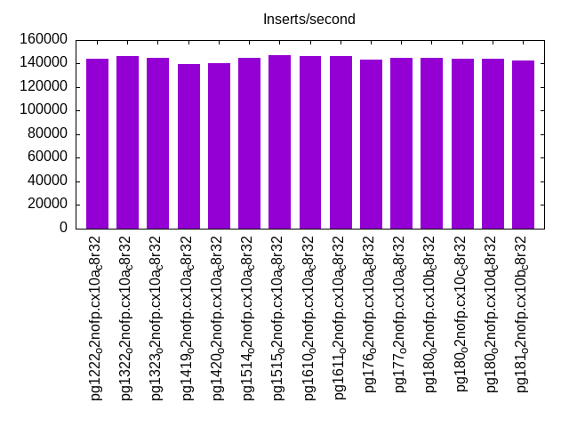
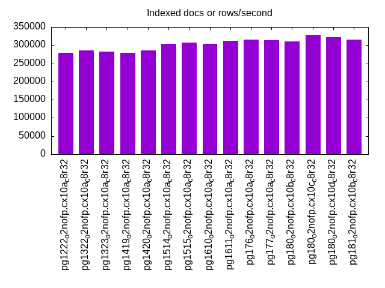
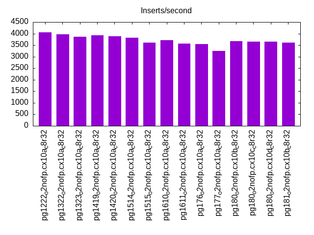
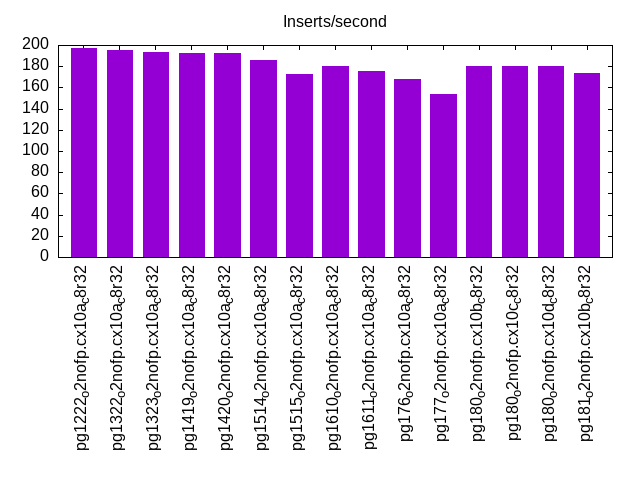
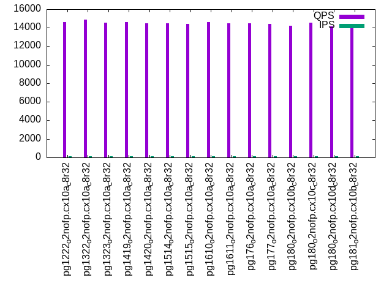
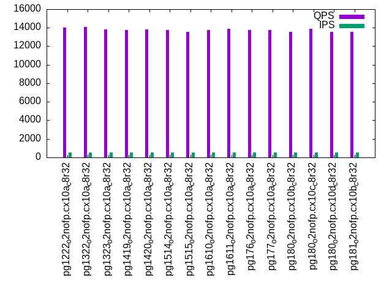
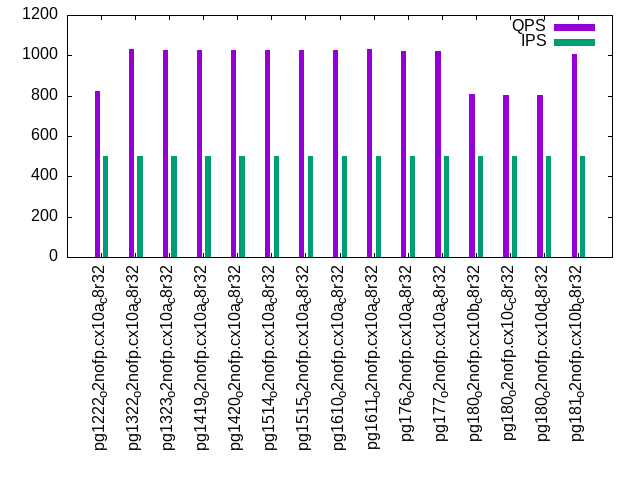
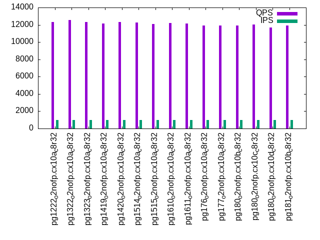
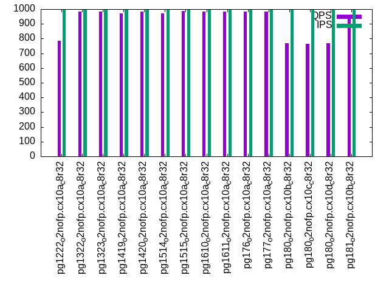

Introduction
This is a report for the insert benchmark with 800M docs and 1 client(s). It is generated by scripts (bash, awk, sed) and Tufte might not be impressed. An overview of the insert benchmark is here and a short update is here. Below, by DBMS, I mean DBMS+version.config. An example is my8020.c10b40 where my means MySQL, 8020 is version 8.0.20 and c10b40 is the name for the configuration file.
The test server has 8 AMD cores, 32G RAM and an NVMe device for the database. The benchmark was run with 1 client and there were 1 or 3 connections per client (1 for queries or inserts without rate limits, 1+1 for rate limited inserts+deletes). It uses 1 table with a table per client. It loads 800M rows per table without secondary indexes, creates 3 secondary indexes per table, then inserts 4m+1m rows per table with a delete per insert to avoid growing the table. It then does 6 read+write tests for 1800s each that do queries as fast as possible with 100,100,500,500,1000,1000 inserts/s and the same for deletes/s per client concurrent with the queries. The database is larger than memory and the workload is IO-bound for except for the range query tests (qr*). Clients and the DBMS share one server.
The tested DBMS are:
- pg1222_o2nofp.cx10a_c8r32 - Postgres 12.22 with the x10a_c8r32 config
- pg1322_o2nofp.cx10a_c8r32 - Postgres 13.22 with the x10a_c8r32 config
- pg1323_o2nofp.cx10a_c8r32 - Postgres 13.23 with the x10a_c8r32 config
- pg1419_o2nofp.cx10a_c8r32 - Postgres 14.19 with the x10a_c8r32 config
- pg1420_o2nofp.cx10a_c8r32 - Postgres 14.20 with the x10a_c8r32 config
- pg1514_o2nofp.cx10a_c8r32 - Postgres 15.14 with the x10a_c8r32 config
- pg1515_o2nofp.cx10a_c8r32 - Postgres 15.15 with the x10a_c8r32 config
- pg1610_o2nofp.cx10a_c8r32 - Postgres 16.10 with the x10a_c8r32 config
- pg1611_o2nofp.cx10a_c8r32 - Postgres 16.11 with the x10a_c8r32 config
- pg176_o2nofp.cx10a_c8r32 - Postgres 17.6 with the x10b_c8r32 config
- pg177_o2nofp.cx10a_c8r32 - Postgres 17.7 with the x10b_c8r32 config
- pg180_o2nofp.cx10b_c8r32 - Postgres 18.0 with the x10b_c8r32 config
- pg180_o2nofp.cx10c_c8r32 - Postgres 18.0 with the x10c_c8r32 config
- pg180_o2nofp.cx10d_c8r32 - Postgres 18.0 with the x10d_c8r32 config
- pg181_o2nofp.cx10b_c8r32 - Postgres 18.1 with the x10b_c8r32 config
Contents
- Summary
- l.i0: load without secondary indexes
- l.x: create secondary indexes
- l.i1: continue load after secondary indexes created with 50 inserts per transaction
- l.i2: continue load after secondary indexes created with 5 inserts per transaction
- qr100.L1: range queries with 100 insert/s per client
- qp100.L2: point queries with 100 insert/s per client
- qr500.L3: range queries with 500 insert/s per client
- qp500.L4: point queries with 500 insert/s per client
- qr1000.L5: range queries with 1000 insert/s per client
- qp1000.L6: point queries with 1000 insert/s per client
Summary
The numbers are inserts/s for l.i0, l.i1 and l.i2, indexed docs (or rows) /s for l.x and queries/s for qr100, qp100 thru qr1000, qp1000" The values are the average rate over the entire test for inserts (IPS) and queries (QPS). The range of values for IPS and QPS is split into 3 parts: bottom 25%, middle 50%, top 25%. Values in the bottom 25% have a red background, values in the top 25% have a green background and values in the middle have no color. A gray background is used for values that can be ignored because the DBMS did not sustain the target insert rate. Red backgrounds are not used when the minimum value is within 80% of the max value.
| dbms | l.i0 | l.x | l.i1 | l.i2 | qr100 | qp100 | qr500 | qp500 | qr1000 | qp1000 |
|---|---|---|---|---|---|---|---|---|---|---|
| pg1222_o2nofp.cx10a_c8r32 | 144144 | 278746 | 4048 | 197 | 14589 | 847 | 14035 | 823 | 12298 | 785 |
| pg1322_o2nofp.cx10a_c8r32 | 146466 | 284900 | 3972 | 195 | 14865 | 1057 | 14065 | 1030 | 12563 | 984 |
| pg1323_o2nofp.cx10a_c8r32 | 144718 | 282187 | 3868 | 193 | 14566 | 1053 | 13816 | 1024 | 12331 | 985 |
| pg1419_o2nofp.cx10a_c8r32 | 139982 | 279330 | 3925 | 192 | 14613 | 1055 | 13778 | 1025 | 12145 | 972 |
| pg1420_o2nofp.cx10a_c8r32 | 140130 | 285205 | 3876 | 192 | 14450 | 1055 | 13828 | 1026 | 12317 | 985 |
| pg1514_o2nofp.cx10a_c8r32 | 144692 | 303605 | 3824 | 186 | 14461 | 1056 | 13766 | 1026 | 12292 | 971 |
| pg1515_o2nofp.cx10a_c8r32 | 146843 | 307102 | 3617 | 173 | 14416 | 1060 | 13580 | 1027 | 12086 | 987 |
| pg1610_o2nofp.cx10a_c8r32 | 146440 | 303951 | 3710 | 180 | 14585 | 1058 | 13744 | 1027 | 12213 | 984 |
| pg1611_o2nofp.cx10a_c8r32 | 146493 | 311526 | 3575 | 175 | 14454 | 1059 | 13886 | 1030 | 12165 | 983 |
| pg176_o2nofp.cx10a_c8r32 | 143498 | 314713 | 3549 | 168 | 14459 | 1053 | 13754 | 1021 | 11932 | 982 |
| pg177_o2nofp.cx10a_c8r32 | 144980 | 313480 | 3241 | 154 | 14404 | 1051 | 13724 | 1023 | 11946 | 983 |
| pg180_o2nofp.cx10b_c8r32 | 144665 | 309717 | 3673 | 180 | 14215 | 831 | 13525 | 806 | 11924 | 767 |
| pg180_o2nofp.cx10c_c8r32 | 144404 | 327734 | 3643 | 180 | 14542 | 830 | 13885 | 804 | 12018 | 766 |
| pg180_o2nofp.cx10d_c8r32 | 144326 | 321414 | 3660 | 180 | 14172 | 834 | 13553 | 805 | 11689 | 768 |
| pg181_o2nofp.cx10b_c8r32 | 142577 | 315085 | 3607 | 174 | 14323 | 1037 | 13557 | 1006 | 11899 | 964 |
This table has relative throughput, throughput for the DBMS relative to the DBMS in the first line, using the absolute throughput from the previous table. Values less than 0.95 have a yellow background. Values greater than 1.05 have a blue background.
| dbms | l.i0 | l.x | l.i1 | l.i2 | qr100 | qp100 | qr500 | qp500 | qr1000 | qp1000 |
|---|---|---|---|---|---|---|---|---|---|---|
| pg1222_o2nofp.cx10a_c8r32 | 1.00 | 1.00 | 1.00 | 1.00 | 1.00 | 1.00 | 1.00 | 1.00 | 1.00 | 1.00 |
| pg1322_o2nofp.cx10a_c8r32 | 1.02 | 1.02 | 0.98 | 0.99 | 1.02 | 1.25 | 1.00 | 1.25 | 1.02 | 1.25 |
| pg1323_o2nofp.cx10a_c8r32 | 1.00 | 1.01 | 0.96 | 0.98 | 1.00 | 1.24 | 0.98 | 1.24 | 1.00 | 1.25 |
| pg1419_o2nofp.cx10a_c8r32 | 0.97 | 1.00 | 0.97 | 0.97 | 1.00 | 1.25 | 0.98 | 1.25 | 0.99 | 1.24 |
| pg1420_o2nofp.cx10a_c8r32 | 0.97 | 1.02 | 0.96 | 0.97 | 0.99 | 1.25 | 0.99 | 1.25 | 1.00 | 1.25 |
| pg1514_o2nofp.cx10a_c8r32 | 1.00 | 1.09 | 0.94 | 0.94 | 0.99 | 1.25 | 0.98 | 1.25 | 1.00 | 1.24 |
| pg1515_o2nofp.cx10a_c8r32 | 1.02 | 1.10 | 0.89 | 0.88 | 0.99 | 1.25 | 0.97 | 1.25 | 0.98 | 1.26 |
| pg1610_o2nofp.cx10a_c8r32 | 1.02 | 1.09 | 0.92 | 0.91 | 1.00 | 1.25 | 0.98 | 1.25 | 0.99 | 1.25 |
| pg1611_o2nofp.cx10a_c8r32 | 1.02 | 1.12 | 0.88 | 0.89 | 0.99 | 1.25 | 0.99 | 1.25 | 0.99 | 1.25 |
| pg176_o2nofp.cx10a_c8r32 | 1.00 | 1.13 | 0.88 | 0.85 | 0.99 | 1.24 | 0.98 | 1.24 | 0.97 | 1.25 |
| pg177_o2nofp.cx10a_c8r32 | 1.01 | 1.12 | 0.80 | 0.78 | 0.99 | 1.24 | 0.98 | 1.24 | 0.97 | 1.25 |
| pg180_o2nofp.cx10b_c8r32 | 1.00 | 1.11 | 0.91 | 0.91 | 0.97 | 0.98 | 0.96 | 0.98 | 0.97 | 0.98 |
| pg180_o2nofp.cx10c_c8r32 | 1.00 | 1.18 | 0.90 | 0.91 | 1.00 | 0.98 | 0.99 | 0.98 | 0.98 | 0.98 |
| pg180_o2nofp.cx10d_c8r32 | 1.00 | 1.15 | 0.90 | 0.91 | 0.97 | 0.98 | 0.97 | 0.98 | 0.95 | 0.98 |
| pg181_o2nofp.cx10b_c8r32 | 0.99 | 1.13 | 0.89 | 0.88 | 0.98 | 1.22 | 0.97 | 1.22 | 0.97 | 1.23 |
This lists the average rate of inserts/s for the tests that do inserts concurrent with queries. For such tests the query rate is listed in the table above. The read+write tests are setup so that the insert rate should match the target rate every second. Cells that are not at least 95% of the target have a red background to indicate a failure to satisfy the target.
| dbms | qr100.L1 | qp100.L2 | qr500.L3 | qp500.L4 | qr1000.L5 | qp1000.L6 |
|---|---|---|---|---|---|---|
| pg1222_o2nofp.cx10a_c8r32 | 100 | 100 | 500 | 500 | 999 | 999 |
| pg1322_o2nofp.cx10a_c8r32 | 100 | 100 | 500 | 500 | 999 | 999 |
| pg1323_o2nofp.cx10a_c8r32 | 100 | 100 | 500 | 500 | 999 | 999 |
| pg1419_o2nofp.cx10a_c8r32 | 100 | 100 | 500 | 500 | 999 | 999 |
| pg1420_o2nofp.cx10a_c8r32 | 100 | 100 | 500 | 500 | 999 | 999 |
| pg1514_o2nofp.cx10a_c8r32 | 100 | 100 | 500 | 500 | 999 | 999 |
| pg1515_o2nofp.cx10a_c8r32 | 100 | 100 | 500 | 500 | 999 | 999 |
| pg1610_o2nofp.cx10a_c8r32 | 100 | 100 | 500 | 500 | 999 | 999 |
| pg1611_o2nofp.cx10a_c8r32 | 100 | 100 | 500 | 500 | 999 | 999 |
| pg176_o2nofp.cx10a_c8r32 | 100 | 100 | 500 | 500 | 999 | 999 |
| pg177_o2nofp.cx10a_c8r32 | 100 | 100 | 500 | 500 | 999 | 999 |
| pg180_o2nofp.cx10b_c8r32 | 100 | 100 | 500 | 500 | 999 | 999 |
| pg180_o2nofp.cx10c_c8r32 | 100 | 100 | 500 | 500 | 999 | 999 |
| pg180_o2nofp.cx10d_c8r32 | 100 | 100 | 500 | 500 | 999 | 999 |
| pg181_o2nofp.cx10b_c8r32 | 100 | 100 | 500 | 500 | 999 | 999 |
| target | 100 | 100 | 500 | 500 | 1000 | 1000 |
l.i0
l.i0: load without secondary indexes. Graphs for performance per 1-second interval are here.
Average throughput:
Insert response time histogram: each cell has the percentage of responses that take <= the time in the header and max is the max response time in seconds. For the max column values in the top 25% of the range have a red background and in the bottom 25% of the range have a green background. The red background is not used when the min value is within 80% of the max value.
| dbms | 256us | 1ms | 4ms | 16ms | 64ms | 256ms | 1s | 4s | 16s | gt | max |
|---|---|---|---|---|---|---|---|---|---|---|---|
| pg1222_o2nofp.cx10a_c8r32 | 99.966 | 0.033 | nonzero | nonzero | 0.036 | ||||||
| pg1322_o2nofp.cx10a_c8r32 | 99.964 | 0.035 | 0.001 | nonzero | 0.036 | ||||||
| pg1323_o2nofp.cx10a_c8r32 | 99.955 | 0.042 | 0.003 | 0.001 | 0.037 | ||||||
| pg1419_o2nofp.cx10a_c8r32 | 99.800 | 0.193 | 0.005 | 0.001 | nonzero | 0.069 | |||||
| pg1420_o2nofp.cx10a_c8r32 | 99.969 | 0.028 | 0.002 | nonzero | 0.037 | ||||||
| pg1514_o2nofp.cx10a_c8r32 | 99.976 | 0.021 | 0.003 | nonzero | 0.036 | ||||||
| pg1515_o2nofp.cx10a_c8r32 | 99.970 | 0.025 | 0.004 | nonzero | 0.039 | ||||||
| pg1610_o2nofp.cx10a_c8r32 | 99.975 | 0.022 | 0.003 | nonzero | 0.040 | ||||||
| pg1611_o2nofp.cx10a_c8r32 | 99.973 | 0.024 | 0.002 | nonzero | 0.037 | ||||||
| pg176_o2nofp.cx10a_c8r32 | 99.850 | 0.144 | 0.005 | 0.001 | nonzero | 0.070 | |||||
| pg177_o2nofp.cx10a_c8r32 | 99.973 | 0.024 | 0.003 | nonzero | 0.036 | ||||||
| pg180_o2nofp.cx10b_c8r32 | 99.971 | 0.025 | 0.004 | 0.001 | 0.046 | ||||||
| pg180_o2nofp.cx10c_c8r32 | 99.969 | 0.026 | 0.004 | 0.001 | 0.042 | ||||||
| pg180_o2nofp.cx10d_c8r32 | 99.966 | 0.030 | 0.004 | 0.001 | 0.037 | ||||||
| pg181_o2nofp.cx10b_c8r32 | 99.876 | 0.111 | 0.013 | nonzero | nonzero | 0.064 |
Performance metrics for the DBMS listed above. Some are normalized by throughput, others are not. Legend for results is here.
ips qps rps rmbps wps wmbps rpq rkbpq wpi wkbpi csps cpups cspq cpupq dbgb1 dbgb2 rss maxop p50 p99 tag 144144 0 29 0.2 587.2 59.2 0.000 0.002 0.004 0.420 17475 20.5 0.121 11 76.5 116.6 19.1 0.036 144782 141784 pg1222_o2nofp.cx10a_c8r32 146466 0 27 0.2 551.0 60.3 0.000 0.002 0.004 0.421 17732 20.6 0.121 11 76.5 116.6 2.5 0.036 147082 144282 pg1322_o2nofp.cx10a_c8r32 144718 0 25 0.2 542.7 59.7 0.000 0.001 0.004 0.422 17566 20.9 0.121 12 76.5 116.6 19.3 0.037 145250 142382 pg1323_o2nofp.cx10a_c8r32 139982 0 25 0.2 527.6 58.0 0.000 0.001 0.004 0.424 16560 20.1 0.118 11 76.5 116.6 2.7 0.069 140983 130086 pg1419_o2nofp.cx10a_c8r32 140130 0 25 0.2 524.0 57.5 0.000 0.001 0.004 0.420 16501 20.2 0.118 12 76.5 116.6 4.1 0.037 140482 138081 pg1420_o2nofp.cx10a_c8r32 144692 0 27 0.2 543.2 59.7 0.000 0.001 0.004 0.422 16985 20.5 0.117 11 76.5 116.6 2.6 0.036 145381 142681 pg1514_o2nofp.cx10a_c8r32 146843 0 28 0.2 555.2 60.9 0.000 0.002 0.004 0.425 17213 20.6 0.117 11 76.5 116.6 2.5 0.039 147280 144583 pg1515_o2nofp.cx10a_c8r32 146440 0 28 0.2 548.7 60.2 0.000 0.001 0.004 0.421 17173 20.5 0.117 11 76.5 116.6 2.5 0.040 147083 144378 pg1610_o2nofp.cx10a_c8r32 146493 0 28 0.2 548.7 60.2 0.000 0.002 0.004 0.421 17169 20.7 0.117 11 76.5 116.6 18.2 0.037 146883 144280 pg1611_o2nofp.cx10a_c8r32 143498 0 26 0.2 536.9 59.0 0.000 0.001 0.004 0.421 14385 20.4 0.100 11 76.5 116.6 19.1 0.070 144781 132984 pg176_o2nofp.cx10a_c8r32 144980 0 27 0.2 543.3 59.6 0.000 0.001 0.004 0.421 14438 20.4 0.100 11 76.5 116.6 18.5 0.036 145381 142682 pg177_o2nofp.cx10a_c8r32 144665 0 26 0.2 542.9 59.6 0.000 0.001 0.004 0.422 14392 20.3 0.099 11 76.5 116.6 18.8 0.046 145480 142378 pg180_o2nofp.cx10b_c8r32 144404 0 25 0.2 540.1 59.5 0.000 0.001 0.004 0.422 14468 20.4 0.100 11 76.5 116.6 19.5 0.042 145281 141983 pg180_o2nofp.cx10c_c8r32 144326 0 26 0.2 541.3 59.5 0.000 0.001 0.004 0.422 14468 20.4 0.100 11 76.5 116.6 19.0 0.037 144981 142283 pg180_o2nofp.cx10d_c8r32 142577 0 26 0.2 533.0 58.9 0.000 0.001 0.004 0.423 14427 20.4 0.101 11 76.5 116.6 2.3 0.064 144082 121486 pg181_o2nofp.cx10b_c8r32
Average values from iostat.
r/s rkB/s rrqm/s %rrqm r_await rareq-s w/s wkB/s wrqm/s %wrqm w_await wareq-s d/s dkB/s drqm/s %drqm d_await dareq-s f/s f_await aqu-sz %util 28.66 231.6 0.031 0.402 0.055 2.160 587.3 60603.2 26.93 3.672 0.224 106.8 2.142 21.28 0.000 0.000 0.418 7.207 30.55 1.138 0.171 7.109 pg1222_o2nofp.cx10a_c8r32 27.38 220.4 0.003 0.087 0.061 2.140 551.1 61710.6 27.58 3.739 0.239 111.7 2.168 20.54 0.000 0.000 0.479 6.826 30.26 1.257 0.178 7.418 pg1322_o2nofp.cx10a_c8r32 25.39 204.4 0.026 0.340 0.053 2.156 542.8 61123.8 28.02 3.962 0.232 112.2 2.182 18.65 0.000 0.000 0.435 6.456 29.93 1.186 0.172 7.252 pg1323_o2nofp.cx10a_c8r32 24.85 198.4 0.037 0.622 0.067 2.132 527.7 59422.5 26.49 3.639 0.230 112.2 2.178 18.51 0.000 0.000 0.409 6.155 29.01 1.127 0.164 6.691 pg1419_o2nofp.cx10a_c8r32 24.85 198.3 0.008 0.110 0.048 1.767 524.1 58893.9 26.82 3.749 0.230 112.1 2.162 17.82 0.000 0.000 0.403 6.129 28.98 1.119 0.163 6.621 pg1420_o2nofp.cx10a_c8r32 26.67 213.4 0.014 0.133 0.050 2.085 543.4 61107.5 23.74 2.946 0.230 112.5 0.116 11.87 0.000 0.000 0.066 5.014 30.01 1.110 0.168 6.716 pg1514_o2nofp.cx10a_c8r32 27.75 221.5 0.010 0.253 0.053 1.971 555.4 62424.2 25.03 3.135 0.227 112.3 0.104 6.350 0.000 0.000 0.079 2.721 30.49 1.124 0.171 6.889 pg1515_o2nofp.cx10a_c8r32 27.50 219.8 0.031 0.294 0.053 2.124 548.9 61678.8 24.01 3.109 0.233 112.3 0.123 61.63 0.000 0.000 0.060 47.34 30.33 1.137 0.172 6.933 pg1610_o2nofp.cx10a_c8r32 27.65 220.9 0.007 0.129 0.048 2.057 548.9 61650.5 23.86 3.161 0.232 112.2 0.111 7.373 0.000 0.000 0.102 4.335 30.34 1.124 0.170 6.853 pg1611_o2nofp.cx10a_c8r32 25.62 205.8 0.053 0.636 0.054 2.206 537.0 60442.8 21.03 2.813 0.227 112.5 0.094 4.376 0.000 0.000 0.061 3.767 29.74 1.073 0.161 6.441 pg176_o2nofp.cx10a_c8r32 26.82 215.6 0.002 0.055 0.056 2.019 543.4 61071.5 21.11 2.767 0.237 112.3 0.095 4.711 0.000 0.000 0.070 4.173 30.04 1.125 0.172 6.691 pg177_o2nofp.cx10a_c8r32 26.55 213.8 0.011 0.235 0.059 2.124 543.0 61034.2 20.64 2.870 0.263 112.3 0.096 16.62 0.000 0.000 0.098 16.98 29.99 1.471 0.198 7.767 pg180_o2nofp.cx10b_c8r32 25.00 201.0 0.006 0.070 0.058 2.077 540.2 60990.3 19.76 2.748 0.269 112.6 0.085 4.174 0.000 0.000 0.104 4.272 29.95 1.517 0.199 7.976 pg180_o2nofp.cx10c_c8r32 26.48 213.3 0.014 0.134 0.060 2.206 541.5 60921.9 20.00 2.709 0.269 112.5 0.095 6.171 0.000 0.000 0.111 3.693 29.93 1.514 0.202 7.912 pg180_o2nofp.cx10d_c8r32 25.56 205.7 0.043 0.443 0.059 2.203 533.1 60284.1 20.22 2.732 0.231 112.8 0.090 5.555 0.000 0.000 0.060 2.783 29.60 1.123 0.164 6.590 pg181_o2nofp.cx10b_c8r32
l.x
l.x: create secondary indexes.
Average throughput:
Performance metrics for the DBMS listed above. Some are normalized by throughput, others are not. Legend for results is here.
ips qps rps rmbps wps wmbps rpq rkbpq wpi wkbpi csps cpups cspq cpupq dbgb1 dbgb2 rss maxop p50 p99 tag 278746 0 779 94.0 1365.0 140.0 0.003 0.345 0.005 0.514 627 13.6 0.002 4 153.8 193.8 23.5 0.003 NA NA pg1222_o2nofp.cx10a_c8r32 284900 0 754 93.5 871.1 104.0 0.003 0.336 0.003 0.374 674 13.0 0.002 4 153.6 193.7 23.4 0.004 NA NA pg1322_o2nofp.cx10a_c8r32 282187 0 747 92.6 860.1 103.2 0.003 0.336 0.003 0.375 542 13.0 0.002 4 153.6 193.7 23.4 0.004 NA NA pg1323_o2nofp.cx10a_c8r32 279330 0 738 91.6 849.7 101.6 0.003 0.336 0.003 0.372 505 13.0 0.002 4 153.6 193.7 23.4 0.004 NA NA pg1419_o2nofp.cx10a_c8r32 285205 0 755 93.6 881.4 104.1 0.003 0.336 0.003 0.374 505 13.0 0.002 4 153.6 193.7 23.4 0.004 NA NA pg1420_o2nofp.cx10a_c8r32 303605 0 825 102.3 954.8 113.2 0.003 0.345 0.003 0.382 652 12.9 0.002 3 153.6 193.7 23.4 0.004 NA NA pg1514_o2nofp.cx10a_c8r32 307102 0 834 103.4 956.6 114.5 0.003 0.345 0.003 0.382 658 13.0 0.002 3 153.6 193.7 23.4 0.004 NA NA pg1515_o2nofp.cx10a_c8r32 303951 0 824 102.3 951.4 113.4 0.003 0.345 0.003 0.382 630 13.0 0.002 3 153.6 193.7 23.5 0.003 NA NA pg1610_o2nofp.cx10a_c8r32 311526 0 845 104.9 969.8 116.2 0.003 0.345 0.003 0.382 650 13.1 0.002 3 153.6 193.7 23.5 0.004 NA NA pg1611_o2nofp.cx10a_c8r32 314713 0 852 105.8 993.6 117.7 0.003 0.344 0.003 0.383 660 13.1 0.002 3 153.6 193.7 23.4 0.003 NA NA pg176_o2nofp.cx10a_c8r32 313480 0 849 105.5 994.6 117.1 0.003 0.345 0.003 0.383 661 13.1 0.002 3 153.6 193.7 23.4 0.003 NA NA pg177_o2nofp.cx10a_c8r32 309717 0 828 102.9 981.1 115.5 0.003 0.340 0.003 0.382 869 12.9 0.003 3 153.6 193.7 17.0 0.004 NA NA pg180_o2nofp.cx10b_c8r32 327734 0 889 110.3 1047.9 122.5 0.003 0.345 0.003 0.383 1511 13.5 0.005 3 153.6 193.7 23.4 0.004 NA NA pg180_o2nofp.cx10c_c8r32 321414 0 871 108.2 1022.5 119.9 0.003 0.345 0.003 0.382 1240 13.5 0.004 3 153.6 193.7 23.4 0.005 NA NA pg180_o2nofp.cx10d_c8r32 315085 0 853 106.0 999.2 117.6 0.003 0.345 0.003 0.382 663 13.1 0.002 3 153.6 193.7 23.4 0.005 NA NA pg181_o2nofp.cx10b_c8r32
Average values from iostat.
r/s rkB/s rrqm/s %rrqm r_await rareq-s w/s wkB/s wrqm/s %wrqm w_await wareq-s d/s dkB/s drqm/s %drqm d_await dareq-s f/s f_await aqu-sz %util 779.4 96225.5 0.014 0.002 0.119 109.1 1367.4 143616 30.46 10.91 0.552 98.75 2.652 16657.3 0.000 0.000 0.737 617.6 12.45 1.166 0.421 15.01 pg1222_o2nofp.cx10a_c8r32 754.2 95771.9 0.001 0.000 0.096 106.7 872.6 106638 21.07 15.52 0.754 96.67 2.647 17458.2 0.000 0.000 0.866 723.5 7.530 1.197 0.316 12.33 pg1322_o2nofp.cx10a_c8r32 746.6 94824.2 0.007 0.001 0.120 106.8 861.3 105853 20.67 13.50 0.767 99.53 2.890 22929.8 0.000 0.000 0.920 299.7 7.467 1.222 0.339 12.09 pg1323_o2nofp.cx10a_c8r32 738.5 93798.1 0.008 0.001 0.102 106.4 851.2 104181 19.99 15.48 0.828 92.63 2.754 15384.9 0.000 0.000 0.958 204.1 7.356 1.335 0.310 12.14 pg1419_o2nofp.cx10a_c8r32 754.9 95878.3 0.000 0.000 0.092 106.6 883.0 106749 20.81 13.64 0.749 97.27 2.722 15704.7 0.000 0.000 0.890 188.0 7.514 1.246 0.326 12.08 pg1420_o2nofp.cx10a_c8r32 825.3 104726 0.000 0.000 0.097 107.3 956.6 116177 18.90 12.70 1.301 103.7 0.867 16712.7 0.000 0.000 0.127 278.1 7.697 1.274 0.334 13.05 pg1514_o2nofp.cx10a_c8r32 834.5 105903 0.002 0.000 0.106 107.6 958.5 117482 19.06 11.50 1.235 105.3 0.927 26152.7 0.000 0.000 0.149 526.1 7.828 1.279 0.347 13.35 pg1515_o2nofp.cx10a_c8r32 824.3 104790 0.000 0.000 0.099 107.4 953.2 116328 19.19 12.84 1.279 105.9 0.830 16871.2 0.000 0.000 0.118 445.7 7.687 1.255 0.331 12.98 pg1610_o2nofp.cx10a_c8r32 844.9 107393 0.001 0.000 0.110 107.7 971.7 119270 19.64 11.26 1.198 109.0 0.803 17137.8 0.000 0.000 0.145 294.6 7.862 1.352 0.343 13.30 pg1611_o2nofp.cx10a_c8r32 852.1 108393 0.004 0.000 0.092 108.0 995.6 120721 19.65 11.52 1.124 106.2 0.663 20451.1 0.000 0.000 0.123 2313.0 7.962 1.167 0.358 13.16 pg176_o2nofp.cx10a_c8r32 849.3 108072 0.000 0.000 0.104 108.2 996.5 120143 19.71 11.45 1.161 107.7 0.808 18894.2 0.000 0.000 0.134 466.9 7.898 1.179 0.350 13.16 pg177_o2nofp.cx10a_c8r32 827.7 105322 0.152 0.018 0.112 106.8 983.0 118518 19.52 13.13 1.526 106.8 0.755 17052.6 0.000 0.000 0.183 271.1 7.799 1.866 0.382 13.29 pg180_o2nofp.cx10b_c8r32 888.8 112926 0.000 0.000 0.107 106.9 1050.0 125694 20.58 11.47 1.200 107.1 0.931 26633.3 0.000 0.000 0.206 637.6 8.223 1.873 0.428 14.43 pg180_o2nofp.cx10c_c8r32 870.5 110771 0.008 0.001 0.136 107.7 1024.3 122953 20.72 11.76 1.233 106.6 0.754 17708.0 0.000 0.000 0.211 526.9 8.272 1.992 0.456 14.15 pg180_o2nofp.cx10d_c8r32 853.1 108560 0.003 0.000 0.094 108.1 1000.8 120578 19.65 12.48 1.152 106.3 0.806 17331.7 0.000 0.000 0.136 258.4 7.933 1.287 0.336 13.16 pg181_o2nofp.cx10b_c8r32
l.i1
l.i1: continue load after secondary indexes created with 50 inserts per transaction. Graphs for performance per 1-second interval are here.
Average throughput:
Insert response time histogram: each cell has the percentage of responses that take <= the time in the header and max is the max response time in seconds. For the max column values in the top 25% of the range have a red background and in the bottom 25% of the range have a green background. The red background is not used when the min value is within 80% of the max value.
| dbms | 256us | 1ms | 4ms | 16ms | 64ms | 256ms | 1s | 4s | 16s | gt | max |
|---|---|---|---|---|---|---|---|---|---|---|---|
| pg1222_o2nofp.cx10a_c8r32 | 0.016 | 99.897 | 0.085 | 0.001 | 0.075 | ||||||
| pg1322_o2nofp.cx10a_c8r32 | 99.922 | 0.077 | 0.043 | ||||||||
| pg1323_o2nofp.cx10a_c8r32 | 99.941 | 0.059 | 0.037 | ||||||||
| pg1419_o2nofp.cx10a_c8r32 | 99.843 | 0.158 | 0.055 | ||||||||
| pg1420_o2nofp.cx10a_c8r32 | 99.951 | 0.049 | 0.036 | ||||||||
| pg1514_o2nofp.cx10a_c8r32 | 99.945 | 0.055 | 0.039 | ||||||||
| pg1515_o2nofp.cx10a_c8r32 | 99.944 | 0.056 | 0.036 | ||||||||
| pg1610_o2nofp.cx10a_c8r32 | 99.933 | 0.068 | 0.034 | ||||||||
| pg1611_o2nofp.cx10a_c8r32 | 99.926 | 0.074 | 0.035 | ||||||||
| pg176_o2nofp.cx10a_c8r32 | 99.942 | 0.057 | 0.038 | ||||||||
| pg177_o2nofp.cx10a_c8r32 | 99.954 | 0.046 | 0.036 | ||||||||
| pg180_o2nofp.cx10b_c8r32 | 99.799 | 0.200 | 0.001 | 0.075 | |||||||
| pg180_o2nofp.cx10c_c8r32 | 99.845 | 0.155 | 0.063 | ||||||||
| pg180_o2nofp.cx10d_c8r32 | 99.853 | 0.147 | 0.042 | ||||||||
| pg181_o2nofp.cx10b_c8r32 | 99.946 | 0.054 | 0.040 |
Delete response time histogram: each cell has the percentage of responses that take <= the time in the header and max is the max response time in seconds. For the max column values in the top 25% of the range have a red background and in the bottom 25% of the range have a green background. The red background is not used when the min value is within 80% of the max value.
| dbms | 256us | 1ms | 4ms | 16ms | 64ms | 256ms | 1s | 4s | 16s | gt | max |
|---|---|---|---|---|---|---|---|---|---|---|---|
| pg1222_o2nofp.cx10a_c8r32 | 1.144 | 18.168 | 54.024 | 26.664 | 0.001 | 0.074 | |||||
| pg1322_o2nofp.cx10a_c8r32 | 1.475 | 16.081 | 52.170 | 30.274 | 0.030 | ||||||
| pg1323_o2nofp.cx10a_c8r32 | 0.925 | 16.724 | 50.331 | 32.020 | 0.031 | ||||||
| pg1419_o2nofp.cx10a_c8r32 | 0.609 | 17.956 | 51.135 | 30.300 | 0.030 | ||||||
| pg1420_o2nofp.cx10a_c8r32 | 0.666 | 16.635 | 50.273 | 32.426 | 0.030 | ||||||
| pg1514_o2nofp.cx10a_c8r32 | 0.775 | 15.934 | 51.031 | 32.260 | 0.030 | ||||||
| pg1515_o2nofp.cx10a_c8r32 | 1.348 | 16.081 | 45.806 | 36.765 | 0.032 | ||||||
| pg1610_o2nofp.cx10a_c8r32 | 0.487 | 16.665 | 46.754 | 36.094 | 0.033 | ||||||
| pg1611_o2nofp.cx10a_c8r32 | 0.571 | 16.061 | 45.495 | 37.872 | 0.032 | ||||||
| pg176_o2nofp.cx10a_c8r32 | 0.510 | 15.868 | 44.035 | 39.587 | 0.034 | ||||||
| pg177_o2nofp.cx10a_c8r32 | 0.537 | 16.544 | 38.741 | 44.177 | 0.035 | ||||||
| pg180_o2nofp.cx10b_c8r32 | 1.443 | 15.961 | 46.271 | 36.324 | 0.001 | 0.068 | |||||
| pg180_o2nofp.cx10c_c8r32 | 0.761 | 16.109 | 46.926 | 36.204 | 0.037 | ||||||
| pg180_o2nofp.cx10d_c8r32 | 0.476 | 16.299 | 47.450 | 35.775 | 0.028 | ||||||
| pg181_o2nofp.cx10b_c8r32 | 0.589 | 16.305 | 44.462 | 38.644 | 0.034 |
Performance metrics for the DBMS listed above. Some are normalized by throughput, others are not. Legend for results is here.
ips qps rps rmbps wps wmbps rpq rkbpq wpi wkbpi csps cpups cspq cpupq dbgb1 dbgb2 rss maxop p50 p99 tag 4048 0 5154 40.8 4652.9 81.7 1.273 10.326 1.149 20.663 12526 16.3 3.094 322 154.4 194.5 23.4 0.075 3350 2150 pg1222_o2nofp.cx10a_c8r32 3972 0 5713 45.2 4707.0 80.9 1.438 11.659 1.185 20.855 13576 16.4 3.418 330 154.3 194.3 22.9 0.043 3300 2200 pg1322_o2nofp.cx10a_c8r32 3868 0 5566 44.0 4565.2 78.3 1.439 11.656 1.180 20.729 13298 16.6 3.438 343 154.3 194.3 22.9 0.037 3150 2150 pg1323_o2nofp.cx10a_c8r32 3925 0 5652 44.7 4609.5 79.0 1.440 11.672 1.174 20.607 13023 16.4 3.318 334 154.3 194.3 23.1 0.055 3200 2150 pg1419_o2nofp.cx10a_c8r32 3876 0 5573 44.1 4597.8 79.1 1.438 11.654 1.186 20.908 12814 16.6 3.306 343 154.3 194.3 22.9 0.036 3200 2100 pg1420_o2nofp.cx10a_c8r32 3824 0 5494 43.5 4500.9 77.2 1.437 11.648 1.177 20.684 12587 16.3 3.292 341 154.3 194.3 23.0 0.039 3100 2050 pg1514_o2nofp.cx10a_c8r32 3617 0 5198 41.1 4242.9 72.6 1.437 11.648 1.173 20.548 11927 16.3 3.298 361 154.3 194.3 23.2 0.036 2850 1950 pg1515_o2nofp.cx10a_c8r32 3710 0 5339 42.3 4407.4 75.7 1.439 11.668 1.188 20.886 12192 16.3 3.286 351 154.3 194.3 22.9 0.034 2900 2000 pg1610_o2nofp.cx10a_c8r32 3575 0 5144 40.7 4253.8 73.0 1.439 11.665 1.190 20.922 11782 16.3 3.296 365 154.3 194.3 22.8 0.035 2750 1900 pg1611_o2nofp.cx10a_c8r32 3549 0 5102 40.4 4201.0 72.1 1.437 11.655 1.184 20.816 11502 15.9 3.241 358 154.3 194.3 22.7 0.038 2800 1900 pg176_o2nofp.cx10a_c8r32 3241 0 4666 36.9 3865.5 66.3 1.440 11.666 1.193 20.930 10540 15.9 3.252 392 154.3 194.3 22.6 0.036 2450 1700 pg177_o2nofp.cx10a_c8r32 3673 0 5273 41.8 4353.8 74.5 1.436 11.653 1.185 20.778 11886 15.9 3.236 346 154.3 194.3 21.9 0.075 2900 2000 pg180_o2nofp.cx10b_c8r32 3643 0 5240 41.5 4387.1 81.0 1.439 11.667 1.204 22.766 11835 16.0 3.249 351 154.3 194.3 23.3 0.063 2900 1950 pg180_o2nofp.cx10c_c8r32 3660 0 5264 41.7 4361.2 75.3 1.438 11.662 1.192 21.065 11854 15.9 3.239 348 154.3 194.3 23.1 0.042 2900 1950 pg180_o2nofp.cx10d_c8r32 3607 0 5188 41.1 4252.1 72.8 1.439 11.661 1.179 20.672 11713 16.1 3.248 357 154.3 194.3 23.0 0.040 2850 1950 pg181_o2nofp.cx10b_c8r32
Average values from iostat.
r/s rkB/s rrqm/s %rrqm r_await rareq-s w/s wkB/s wrqm/s %wrqm w_await wareq-s d/s dkB/s drqm/s %drqm d_await dareq-s f/s f_await aqu-sz %util 5122.4 41551.1 0.000 0.000 0.051 8.124 4673.7 83792.0 18.69 0.756 0.102 44.67 2.024 14.83 0.000 0.000 0.418 6.961 41.17 1.169 0.617 34.03 pg1222_o2nofp.cx10a_c8r32 5681.0 46055.1 0.000 0.000 0.052 8.109 4727.9 82957.5 20.12 0.912 0.105 38.57 2.012 9.736 0.000 0.000 0.410 4.833 42.41 1.172 0.726 36.34 pg1322_o2nofp.cx10a_c8r32 5534.3 44836.9 0.000 0.000 0.051 8.104 4585.0 80293.3 19.41 1.021 0.108 40.47 2.012 9.740 0.000 0.000 0.431 4.834 41.08 1.172 0.684 35.35 pg1323_o2nofp.cx10a_c8r32 5620.4 45562.3 0.000 0.000 0.053 8.109 4629.7 80996.6 26.87 1.633 0.129 41.56 2.032 10.29 0.000 0.000 0.439 5.052 44.99 1.179 0.720 37.08 pg1419_o2nofp.cx10a_c8r32 5541.0 44913.4 0.000 0.000 0.052 8.107 4617.6 81141.1 22.88 0.928 0.097 38.09 2.008 10.11 0.000 0.000 0.413 5.027 41.41 1.172 0.694 35.24 pg1420_o2nofp.cx10a_c8r32 5461.8 44283.3 0.000 0.000 0.052 8.110 4520.0 79188.4 16.82 0.816 0.104 40.68 0.014 0.123 0.000 0.000 0.030 0.301 40.59 1.168 0.668 34.78 pg1514_o2nofp.cx10a_c8r32 5165.4 41868.2 0.000 0.000 0.052 8.108 4259.7 74375.9 21.75 1.484 0.120 41.38 0.011 0.196 0.000 0.000 0.014 0.382 41.06 1.167 0.644 33.41 pg1515_o2nofp.cx10a_c8r32 5306.9 43034.4 0.000 0.000 0.052 8.111 4425.5 77578.7 16.74 0.775 0.100 38.40 0.009 0.176 0.000 0.000 0.017 0.411 39.64 1.158 0.657 34.17 pg1610_o2nofp.cx10a_c8r32 5111.8 41439.3 0.000 0.000 0.052 8.109 4270.5 74852.1 16.95 0.759 0.103 38.28 0.019 0.195 0.000 0.000 0.029 0.658 38.16 1.202 0.647 32.72 pg1611_o2nofp.cx10a_c8r32 5069.9 41110.0 0.000 0.000 0.051 8.111 4217.4 73941.9 13.14 0.745 0.095 38.97 0.014 0.168 0.000 0.000 0.028 0.554 37.34 1.092 0.584 32.03 pg176_o2nofp.cx10a_c8r32 4635.1 37565.4 0.000 0.000 0.051 8.107 3879.1 67874.5 11.70 0.706 0.095 37.71 0.016 0.372 0.000 0.000 0.033 1.633 34.24 1.148 0.540 29.54 pg177_o2nofp.cx10a_c8r32 5245.4 42578.6 0.000 0.000 0.053 8.119 4371.6 76419.7 18.57 1.081 0.133 39.19 0.008 0.111 0.000 0.000 0.019 0.247 38.92 1.518 0.796 35.02 pg180_o2nofp.cx10b_c8r32 5210.1 42258.8 0.000 0.000 0.054 8.113 4404.9 83050.0 21.95 1.586 0.161 43.14 0.010 15.23 0.000 0.000 0.031 25.43 42.21 1.535 0.837 35.94 pg180_o2nofp.cx10c_c8r32 5233.0 42433.5 0.000 0.000 0.053 8.110 4378.9 77175.3 17.70 0.644 0.129 36.92 0.007 0.129 0.000 0.000 0.010 0.273 39.00 1.551 0.886 35.11 pg180_o2nofp.cx10d_c8r32 5156.9 41805.4 0.000 0.000 0.052 8.109 4269.0 74628.4 19.28 1.272 0.116 40.64 0.014 0.313 0.000 0.000 0.024 1.055 40.66 1.151 0.634 33.43 pg181_o2nofp.cx10b_c8r32
l.i2
l.i2: continue load after secondary indexes created with 5 inserts per transaction. Graphs for performance per 1-second interval are here.
Average throughput:
Insert response time histogram: each cell has the percentage of responses that take <= the time in the header and max is the max response time in seconds. For the max column values in the top 25% of the range have a red background and in the bottom 25% of the range have a green background. The red background is not used when the min value is within 80% of the max value.
| dbms | 256us | 1ms | 4ms | 16ms | 64ms | 256ms | 1s | 4s | 16s | gt | max |
|---|---|---|---|---|---|---|---|---|---|---|---|
| pg1222_o2nofp.cx10a_c8r32 | 52.012 | 47.952 | 0.036 | 0.013 | |||||||
| pg1322_o2nofp.cx10a_c8r32 | 53.900 | 46.045 | 0.054 | 0.013 | |||||||
| pg1323_o2nofp.cx10a_c8r32 | 55.883 | 44.048 | 0.069 | 0.016 | |||||||
| pg1419_o2nofp.cx10a_c8r32 | 52.101 | 47.855 | 0.044 | 0.001 | 0.017 | ||||||
| pg1420_o2nofp.cx10a_c8r32 | 53.168 | 46.767 | 0.065 | 0.013 | |||||||
| pg1514_o2nofp.cx10a_c8r32 | 51.335 | 48.599 | 0.066 | 0.013 | |||||||
| pg1515_o2nofp.cx10a_c8r32 | 50.270 | 49.679 | 0.051 | 0.013 | |||||||
| pg1610_o2nofp.cx10a_c8r32 | 49.185 | 50.760 | 0.054 | 0.013 | |||||||
| pg1611_o2nofp.cx10a_c8r32 | 47.752 | 52.190 | 0.057 | 0.013 | |||||||
| pg176_o2nofp.cx10a_c8r32 | 57.825 | 42.157 | 0.018 | 0.010 | |||||||
| pg177_o2nofp.cx10a_c8r32 | 57.098 | 42.874 | 0.027 | 0.012 | |||||||
| pg180_o2nofp.cx10b_c8r32 | 56.746 | 43.217 | 0.037 | 0.012 | |||||||
| pg180_o2nofp.cx10c_c8r32 | 54.093 | 45.872 | 0.035 | 0.011 | |||||||
| pg180_o2nofp.cx10d_c8r32 | 55.834 | 44.128 | 0.038 | 0.010 | |||||||
| pg181_o2nofp.cx10b_c8r32 | 57.139 | 42.847 | 0.014 | 0.012 |
Delete response time histogram: each cell has the percentage of responses that take <= the time in the header and max is the max response time in seconds. For the max column values in the top 25% of the range have a red background and in the bottom 25% of the range have a green background. The red background is not used when the min value is within 80% of the max value.
| dbms | 256us | 1ms | 4ms | 16ms | 64ms | 256ms | 1s | 4s | 16s | gt | max |
|---|---|---|---|---|---|---|---|---|---|---|---|
| pg1222_o2nofp.cx10a_c8r32 | 99.999 | 0.001 | 0.098 | ||||||||
| pg1322_o2nofp.cx10a_c8r32 | 99.999 | 0.001 | 0.101 | ||||||||
| pg1323_o2nofp.cx10a_c8r32 | 99.999 | 0.001 | 0.104 | ||||||||
| pg1419_o2nofp.cx10a_c8r32 | 99.999 | 0.001 | 0.101 | ||||||||
| pg1420_o2nofp.cx10a_c8r32 | 99.999 | 0.001 | 0.101 | ||||||||
| pg1514_o2nofp.cx10a_c8r32 | 99.999 | 0.001 | 0.099 | ||||||||
| pg1515_o2nofp.cx10a_c8r32 | 99.999 | 0.001 | 0.100 | ||||||||
| pg1610_o2nofp.cx10a_c8r32 | 99.999 | 0.001 | 0.096 | ||||||||
| pg1611_o2nofp.cx10a_c8r32 | 99.999 | 0.001 | 0.099 | ||||||||
| pg176_o2nofp.cx10a_c8r32 | 99.999 | 0.001 | 0.099 | ||||||||
| pg177_o2nofp.cx10a_c8r32 | 99.999 | 0.001 | 0.098 | ||||||||
| pg180_o2nofp.cx10b_c8r32 | 99.999 | 0.001 | 0.106 | ||||||||
| pg180_o2nofp.cx10c_c8r32 | 99.999 | 0.001 | 0.099 | ||||||||
| pg180_o2nofp.cx10d_c8r32 | 99.999 | 0.001 | 0.102 | ||||||||
| pg181_o2nofp.cx10b_c8r32 | 99.999 | 0.001 | 0.103 |
Performance metrics for the DBMS listed above. Some are normalized by throughput, others are not. Legend for results is here.
ips qps rps rmbps wps wmbps rpq rkbpq wpi wkbpi csps cpups cspq cpupq dbgb1 dbgb2 rss maxop p50 p99 tag 197 0 212 1.7 506.4 7.0 1.075 8.775 2.575 36.610 1823 13.1 9.267 5328 154.6 194.6 23.4 0.013 195 175 pg1222_o2nofp.cx10a_c8r32 195 0 209 1.7 559.6 7.6 1.073 8.771 2.867 39.939 1809 13.0 9.265 5328 154.4 194.5 23.4 0.013 195 175 pg1322_o2nofp.cx10a_c8r32 193 0 207 1.7 557.6 7.6 1.072 8.753 2.888 40.181 1856 13.0 9.612 5386 154.4 194.5 23.4 0.016 190 170 pg1323_o2nofp.cx10a_c8r32 192 0 206 1.6 548.3 7.7 1.072 8.773 2.858 40.861 1491 12.9 7.772 5381 154.5 194.5 23.3 0.017 190 170 pg1419_o2nofp.cx10a_c8r32 192 0 206 1.6 553.2 7.5 1.071 8.754 2.881 40.172 1513 12.9 7.881 5375 154.5 194.5 23.3 0.013 190 170 pg1420_o2nofp.cx10a_c8r32 186 0 199 1.6 535.0 7.3 1.070 8.757 2.883 40.484 1396 12.8 7.520 5517 154.4 194.5 23.3 0.013 185 165 pg1514_o2nofp.cx10a_c8r32 173 0 186 1.5 503.4 7.0 1.072 8.766 2.907 41.636 1304 12.8 7.527 5912 154.4 194.5 23.3 0.013 170 155 pg1515_o2nofp.cx10a_c8r32 180 0 193 1.5 517.7 7.2 1.071 8.763 2.878 40.767 1354 12.8 7.525 5692 154.4 194.5 23.3 0.013 180 160 pg1610_o2nofp.cx10a_c8r32 175 0 188 1.5 502.3 7.0 1.073 8.775 2.866 41.072 1328 12.8 7.576 5841 154.4 194.5 23.3 0.013 175 150 pg1611_o2nofp.cx10a_c8r32 168 0 180 1.4 489.9 6.8 1.071 8.765 2.918 41.511 1150 12.7 6.847 6051 154.4 194.5 23.3 0.010 165 150 pg176_o2nofp.cx10a_c8r32 154 0 166 1.3 450.8 6.3 1.073 8.771 2.920 41.861 1078 12.7 6.983 6580 154.4 191.5 23.4 0.012 155 135 pg177_o2nofp.cx10a_c8r32 180 0 192 1.5 518.7 7.2 1.068 8.748 2.887 40.903 1238 12.7 6.888 5654 154.4 194.5 23.3 0.012 180 160 pg180_o2nofp.cx10b_c8r32 180 0 193 1.5 515.6 7.3 1.073 8.783 2.864 41.595 1228 12.8 6.825 5689 154.4 192.2 23.4 0.011 180 160 pg180_o2nofp.cx10c_c8r32 180 0 193 1.5 518.8 7.1 1.071 8.760 2.879 40.600 1233 12.7 6.842 5638 154.4 194.5 23.4 0.010 180 160 pg180_o2nofp.cx10d_c8r32 174 0 186 1.5 505.6 7.0 1.071 8.759 2.904 41.165 1189 12.8 6.827 5882 154.5 194.5 23.3 0.012 175 145 pg181_o2nofp.cx10b_c8r32
Average values from iostat.
r/s rkB/s rrqm/s %rrqm r_await rareq-s w/s wkB/s wrqm/s %wrqm w_await wareq-s d/s dkB/s drqm/s %drqm d_await dareq-s f/s f_await aqu-sz %util 211.5 1725.9 0.000 0.000 0.077 8.160 506.2 7199.5 6.600 1.849 0.051 17.40 2.008 9.770 0.000 0.000 0.383 4.822 5.871 1.165 0.043 2.864 pg1222_o2nofp.cx10a_c8r32 209.4 1712.0 0.000 0.000 0.078 8.176 560.1 7800.0 7.344 2.238 0.064 19.22 2.008 9.820 0.000 0.000 0.387 4.839 6.422 1.191 0.047 3.057 pg1322_o2nofp.cx10a_c8r32 206.9 1690.0 0.000 0.000 0.078 8.166 558.1 7763.6 7.266 2.410 0.069 19.53 2.009 9.878 0.000 0.000 0.398 4.846 6.426 1.190 0.046 3.070 pg1323_o2nofp.cx10a_c8r32 205.7 1682.4 0.000 0.000 0.078 8.180 548.8 7842.9 5.804 2.030 0.059 19.91 2.007 10.22 0.000 0.000 0.388 5.199 5.831 1.184 0.043 2.847 pg1419_o2nofp.cx10a_c8r32 205.7 1680.6 0.000 0.000 0.079 8.171 553.7 7718.5 7.775 2.304 0.061 19.10 2.010 10.22 0.000 0.000 0.393 5.034 6.423 1.183 0.046 3.091 pg1420_o2nofp.cx10a_c8r32 198.6 1625.2 0.000 0.000 0.079 8.181 535.5 7518.0 5.113 1.581 0.067 20.02 0.007 0.257 0.000 0.000 0.003 0.171 6.393 1.177 0.044 2.876 pg1514_o2nofp.cx10a_c8r32 185.6 1518.0 0.000 0.000 0.081 8.180 503.9 7215.2 3.773 1.406 0.064 20.24 0.003 0.164 0.000 0.000 0.002 0.137 5.710 1.186 0.040 2.607 pg1515_o2nofp.cx10a_c8r32 192.7 1576.3 0.000 0.000 0.080 8.181 518.1 7338.8 5.270 1.567 0.063 19.39 0.008 0.213 0.000 0.000 0.003 0.106 6.313 1.173 0.043 2.799 pg1610_o2nofp.cx10a_c8r32 188.0 1538.0 0.000 0.000 0.081 8.178 502.8 7204.6 5.184 1.559 0.065 19.46 0.008 0.203 0.000 0.000 0.005 0.108 6.213 1.195 0.043 2.771 pg1611_o2nofp.cx10a_c8r32 179.9 1471.4 0.000 0.000 0.058 8.180 490.3 6974.0 4.161 1.237 0.064 19.02 0.002 0.092 0.000 0.000 0.001 0.235 6.210 1.119 0.038 2.606 pg176_o2nofp.cx10a_c8r32 165.7 1354.1 0.000 0.000 0.060 8.172 451.1 6467.1 4.051 1.364 0.078 20.26 0.040 489.4 0.000 0.000 0.020 12.58 6.173 1.178 0.039 2.589 pg177_o2nofp.cx10a_c8r32 191.9 1571.8 0.000 0.000 0.060 8.189 519.1 7355.0 4.872 1.473 0.081 19.96 0.002 0.158 0.000 0.000 0.004 0.400 6.293 1.524 0.048 3.016 pg180_o2nofp.cx10b_c8r32 193.0 1580.8 0.000 0.000 0.060 8.186 515.8 7488.3 3.973 1.244 0.077 19.53 0.029 428.5 0.000 0.000 0.002 13.96 5.918 1.534 0.046 2.910 pg180_o2nofp.cx10c_c8r32 193.0 1578.4 0.000 0.000 0.060 8.179 519.2 7320.8 4.764 1.366 0.081 19.12 0.001 0.125 0.000 0.000 0.004 0.433 6.263 1.563 0.048 3.020 pg180_o2nofp.cx10d_c8r32 186.4 1524.8 0.000 0.000 0.059 8.179 506.0 7171.4 3.249 1.262 0.067 19.71 0.001 0.122 0.000 0.000 0.002 0.241 5.763 1.181 0.038 2.597 pg181_o2nofp.cx10b_c8r32
qr100.L1
qr100.L1: range queries with 100 insert/s per client. Graphs for performance per 1-second interval are here.
Average throughput:
Query response time histogram: each cell has the percentage of responses that take <= the time in the header and max is the max response time in seconds. For max values in the top 25% of the range have a red background and in the bottom 25% of the range have a green background. The red background is not used when the min value is within 80% of the max value.
| dbms | 256us | 1ms | 4ms | 16ms | 64ms | 256ms | 1s | 4s | 16s | gt | max |
|---|---|---|---|---|---|---|---|---|---|---|---|
| pg1222_o2nofp.cx10a_c8r32 | 99.997 | 0.002 | nonzero | nonzero | 0.009 | ||||||
| pg1322_o2nofp.cx10a_c8r32 | 99.998 | 0.002 | nonzero | nonzero | 0.009 | ||||||
| pg1323_o2nofp.cx10a_c8r32 | 99.998 | 0.002 | nonzero | nonzero | 0.009 | ||||||
| pg1419_o2nofp.cx10a_c8r32 | 99.998 | 0.002 | nonzero | nonzero | 0.009 | ||||||
| pg1420_o2nofp.cx10a_c8r32 | 99.998 | 0.002 | nonzero | nonzero | 0.009 | ||||||
| pg1514_o2nofp.cx10a_c8r32 | 99.998 | 0.002 | nonzero | nonzero | 0.009 | ||||||
| pg1515_o2nofp.cx10a_c8r32 | 99.998 | 0.002 | nonzero | nonzero | 0.010 | ||||||
| pg1610_o2nofp.cx10a_c8r32 | 99.998 | 0.002 | nonzero | nonzero | 0.009 | ||||||
| pg1611_o2nofp.cx10a_c8r32 | 99.998 | 0.002 | nonzero | nonzero | 0.009 | ||||||
| pg176_o2nofp.cx10a_c8r32 | 99.998 | 0.002 | nonzero | nonzero | 0.009 | ||||||
| pg177_o2nofp.cx10a_c8r32 | 99.998 | 0.002 | nonzero | nonzero | 0.009 | ||||||
| pg180_o2nofp.cx10b_c8r32 | 99.998 | 0.001 | nonzero | nonzero | 0.010 | ||||||
| pg180_o2nofp.cx10c_c8r32 | 99.998 | 0.001 | nonzero | nonzero | 0.013 | ||||||
| pg180_o2nofp.cx10d_c8r32 | 99.993 | 0.005 | 0.002 | nonzero | 0.011 | ||||||
| pg181_o2nofp.cx10b_c8r32 | 99.999 | nonzero | nonzero | nonzero | 0.010 |
Insert response time histogram: each cell has the percentage of responses that take <= the time in the header and max is the max response time in seconds. For max values in the top 25% of the range have a red background and in the bottom 25% of the range have a green background. The red background is not used when the min value is within 80% of the max value.
| dbms | 256us | 1ms | 4ms | 16ms | 64ms | 256ms | 1s | 4s | 16s | gt | max |
|---|---|---|---|---|---|---|---|---|---|---|---|
| pg1222_o2nofp.cx10a_c8r32 | 58.111 | 41.889 | 0.021 | ||||||||
| pg1322_o2nofp.cx10a_c8r32 | 0.028 | 80.611 | 19.361 | 0.023 | |||||||
| pg1323_o2nofp.cx10a_c8r32 | 76.000 | 24.000 | 0.021 | ||||||||
| pg1419_o2nofp.cx10a_c8r32 | 75.333 | 24.667 | 0.021 | ||||||||
| pg1420_o2nofp.cx10a_c8r32 | 76.250 | 23.750 | 0.022 | ||||||||
| pg1514_o2nofp.cx10a_c8r32 | 76.000 | 24.000 | 0.024 | ||||||||
| pg1515_o2nofp.cx10a_c8r32 | 0.028 | 79.917 | 20.056 | 0.023 | |||||||
| pg1610_o2nofp.cx10a_c8r32 | 81.639 | 18.361 | 0.021 | ||||||||
| pg1611_o2nofp.cx10a_c8r32 | 0.056 | 72.778 | 27.167 | 0.022 | |||||||
| pg176_o2nofp.cx10a_c8r32 | 0.028 | 99.861 | 0.111 | 0.021 | |||||||
| pg177_o2nofp.cx10a_c8r32 | 99.750 | 0.250 | 0.021 | ||||||||
| pg180_o2nofp.cx10b_c8r32 | 88.889 | 11.111 | 0.026 | ||||||||
| pg180_o2nofp.cx10c_c8r32 | 92.389 | 7.611 | 0.025 | ||||||||
| pg180_o2nofp.cx10d_c8r32 | 88.500 | 11.500 | 0.030 | ||||||||
| pg181_o2nofp.cx10b_c8r32 | 0.056 | 99.667 | 0.278 | 0.023 |
Delete response time histogram: each cell has the percentage of responses that take <= the time in the header and max is the max response time in seconds. For max values in the top 25% of the range have a red background and in the bottom 25% of the range have a green background. The red background is not used when the min value is within 80% of the max value.
| dbms | 256us | 1ms | 4ms | 16ms | 64ms | 256ms | 1s | 4s | 16s | gt | max |
|---|---|---|---|---|---|---|---|---|---|---|---|
| pg1222_o2nofp.cx10a_c8r32 | 44.000 | 55.972 | 0.028 | 0.010 | |||||||
| pg1322_o2nofp.cx10a_c8r32 | 42.611 | 57.361 | 0.028 | 0.009 | |||||||
| pg1323_o2nofp.cx10a_c8r32 | 54.444 | 45.528 | 0.028 | 0.010 | |||||||
| pg1419_o2nofp.cx10a_c8r32 | 45.611 | 54.333 | 0.056 | 0.010 | |||||||
| pg1420_o2nofp.cx10a_c8r32 | 54.750 | 45.194 | 0.056 | 0.010 | |||||||
| pg1514_o2nofp.cx10a_c8r32 | 36.194 | 63.750 | 0.056 | 0.010 | |||||||
| pg1515_o2nofp.cx10a_c8r32 | 50.444 | 49.500 | 0.056 | 0.010 | |||||||
| pg1610_o2nofp.cx10a_c8r32 | 39.472 | 60.472 | 0.056 | 0.010 | |||||||
| pg1611_o2nofp.cx10a_c8r32 | 52.944 | 47.000 | 0.056 | 0.010 | |||||||
| pg176_o2nofp.cx10a_c8r32 | 44.722 | 55.222 | 0.056 | 0.010 | |||||||
| pg177_o2nofp.cx10a_c8r32 | 50.694 | 49.250 | 0.056 | 0.010 | |||||||
| pg180_o2nofp.cx10b_c8r32 | 42.889 | 57.056 | 0.056 | 0.010 | |||||||
| pg180_o2nofp.cx10c_c8r32 | 35.694 | 64.222 | 0.083 | 0.010 | |||||||
| pg180_o2nofp.cx10d_c8r32 | 41.667 | 58.278 | 0.056 | 0.010 | |||||||
| pg181_o2nofp.cx10b_c8r32 | 48.889 | 51.056 | 0.056 | 0.010 |
Performance metrics for the DBMS listed above. Some are normalized by throughput, others are not. Legend for results is here.
ips qps rps rmbps wps wmbps rpq rkbpq wpi wkbpi csps cpups cspq cpupq dbgb1 dbgb2 rss maxop p50 p99 tag 100 14589 113 0.9 24.1 1.5 0.008 0.065 0.241 15.600 56024 11.1 3.840 61 154.6 194.7 23.4 0.009 14558 14318 pg1222_o2nofp.cx10a_c8r32 100 14865 112 0.9 57.9 1.8 0.008 0.064 0.580 18.571 57122 11.2 3.843 60 154.5 191.9 23.4 0.009 14894 14622 pg1322_o2nofp.cx10a_c8r32 100 14566 112 0.9 56.8 1.8 0.008 0.065 0.568 18.456 55969 12.6 3.842 69 154.5 192.7 23.4 0.009 14542 14334 pg1323_o2nofp.cx10a_c8r32 100 14613 111 0.9 64.5 1.9 0.008 0.065 0.645 19.092 56066 10.8 3.837 59 154.5 192.0 23.3 0.009 14590 14334 pg1419_o2nofp.cx10a_c8r32 100 14450 112 0.9 64.5 1.9 0.008 0.066 0.645 19.123 55451 12.5 3.837 69 154.5 191.9 23.3 0.009 14462 14142 pg1420_o2nofp.cx10a_c8r32 100 14461 111 0.9 62.2 1.8 0.008 0.066 0.622 18.907 55478 10.9 3.836 60 154.5 192.0 23.3 0.009 14478 14190 pg1514_o2nofp.cx10a_c8r32 100 14416 111 0.9 62.2 1.8 0.008 0.066 0.622 18.892 55280 12.6 3.835 70 154.5 191.9 23.3 0.010 14398 14174 pg1515_o2nofp.cx10a_c8r32 100 14585 112 0.9 62.1 1.8 0.008 0.065 0.621 18.904 55949 11.1 3.836 61 154.5 191.8 23.3 0.009 14574 14302 pg1610_o2nofp.cx10a_c8r32 100 14454 112 0.9 62.1 1.8 0.008 0.066 0.622 18.909 55459 12.6 3.837 70 154.5 191.7 23.3 0.009 14478 14190 pg1611_o2nofp.cx10a_c8r32 100 14459 112 0.9 66.3 1.9 0.008 0.066 0.663 19.372 55430 10.8 3.834 60 154.5 192.4 23.3 0.009 14462 14222 pg176_o2nofp.cx10a_c8r32 100 14404 112 0.9 66.2 1.9 0.008 0.066 0.663 19.381 55257 12.5 3.836 69 154.5 190.5 23.4 0.009 14446 14174 pg177_o2nofp.cx10a_c8r32 100 14215 111 0.9 65.3 1.9 0.008 0.065 0.653 19.293 54505 10.6 3.834 60 154.5 192.1 23.3 0.010 14238 13934 pg180_o2nofp.cx10b_c8r32 100 14542 111 0.9 66.9 1.9 0.008 0.063 0.670 19.448 55785 10.8 3.836 59 154.5 189.5 23.4 0.013 14574 14286 pg180_o2nofp.cx10c_c8r32 100 14172 111 0.9 66.5 1.9 0.008 0.065 0.665 19.390 54340 11.3 3.834 64 154.5 192.2 23.4 0.011 14206 13902 pg180_o2nofp.cx10d_c8r32 100 14323 111 0.9 66.8 1.9 0.008 0.064 0.668 19.416 54917 12.5 3.834 70 154.5 193.1 23.3 0.010 14350 14046 pg181_o2nofp.cx10b_c8r32
Average values from iostat.
r/s rkB/s rrqm/s %rrqm r_await rareq-s w/s wkB/s wrqm/s %wrqm w_await wareq-s d/s dkB/s drqm/s %drqm d_await dareq-s f/s f_await aqu-sz %util 109.7 924.1 0.000 0.000 0.163 8.423 24.08 1559.7 4.230 15.14 1.622 66.55 2.000 9.598 0.000 0.000 1.536 4.799 3.706 1.613 0.065 3.737 pg1222_o2nofp.cx10a_c8r32 108.5 924.7 0.000 0.000 0.128 8.522 58.02 1855.7 4.005 11.92 2.289 56.97 2.000 9.595 0.000 0.000 1.638 5.299 3.700 1.371 0.231 3.879 pg1322_o2nofp.cx10a_c8r32 108.6 923.2 0.000 0.000 0.139 8.497 56.89 1846.1 4.114 12.34 2.235 57.26 2.000 9.595 0.000 0.000 1.420 4.798 3.713 1.420 0.218 3.917 pg1323_o2nofp.cx10a_c8r32 108.4 923.5 0.000 0.000 0.137 8.517 64.59 1909.9 3.813 10.65 2.657 53.98 2.001 9.999 0.000 0.000 1.657 4.998 3.700 1.436 0.292 4.163 pg1419_o2nofp.cx10a_c8r32 108.6 927.3 0.000 0.000 0.136 8.534 64.66 1912.9 4.556 12.49 2.547 54.00 2.001 9.997 0.000 0.000 1.163 5.457 3.709 1.402 0.284 3.971 pg1420_o2nofp.cx10a_c8r32 108.2 923.6 0.000 0.000 0.137 8.527 62.29 1889.5 1.719 5.561 2.816 58.53 0.001 0.002 0.000 0.000 0.003 0.011 3.713 1.436 0.306 3.950 pg1514_o2nofp.cx10a_c8r32 108.4 921.8 0.000 0.000 0.134 8.501 62.35 1889.9 1.792 5.798 2.885 58.83 0.001 0.002 0.000 0.000 0.003 0.011 3.675 1.394 0.320 3.889 pg1515_o2nofp.cx10a_c8r32 108.6 925.3 0.000 0.000 0.136 8.521 62.18 1889.2 1.804 5.769 2.834 58.91 0.001 0.002 0.000 0.000 0.000 0.011 3.694 1.322 0.306 3.894 pg1610_o2nofp.cx10a_c8r32 108.8 920.0 0.000 0.000 0.140 8.448 62.20 1889.7 1.803 5.857 2.653 59.59 0.001 0.002 0.000 0.000 0.000 0.011 3.700 1.518 0.275 3.846 pg1611_o2nofp.cx10a_c8r32 108.5 925.5 0.000 0.000 0.122 8.521 66.45 1938.0 1.518 4.951 2.779 60.13 0.001 0.002 0.000 0.000 0.003 0.011 2.842 1.185 0.314 3.836 pg176_o2nofp.cx10a_c8r32 108.5 895.4 0.000 0.000 0.121 8.254 66.31 1936.7 1.467 4.995 2.690 61.28 0.001 0.002 0.000 0.000 0.000 0.011 2.781 1.374 0.306 3.790 pg177_o2nofp.cx10a_c8r32 107.8 901.5 0.000 0.000 0.143 8.365 65.42 1930.0 1.847 6.016 2.650 61.50 0.001 0.002 0.000 0.000 0.003 0.011 2.787 1.871 0.297 4.028 pg180_o2nofp.cx10b_c8r32 108.0 898.0 0.000 0.000 0.141 8.314 67.08 1943.6 1.652 5.281 2.851 59.79 0.001 0.002 0.000 0.000 0.003 0.011 2.837 1.975 0.314 4.163 pg180_o2nofp.cx10c_c8r32 108.2 898.5 0.000 0.000 0.142 8.302 66.64 1939.8 1.759 5.593 2.831 59.90 0.001 0.002 0.000 0.000 0.000 0.011 2.846 1.903 0.317 4.210 pg180_o2nofp.cx10d_c8r32 108.0 897.8 0.000 0.000 0.123 8.315 66.95 1942.4 1.621 5.312 2.696 60.29 0.001 0.002 0.000 0.000 0.000 0.011 2.804 1.347 0.302 3.755 pg181_o2nofp.cx10b_c8r32
qp100.L2
qp100.L2: point queries with 100 insert/s per client. Graphs for performance per 1-second interval are here.
Average throughput:

Query response time histogram: each cell has the percentage of responses that take <= the time in the header and max is the max response time in seconds. For max values in the top 25% of the range have a red background and in the bottom 25% of the range have a green background. The red background is not used when the min value is within 80% of the max value.
| dbms | 256us | 1ms | 4ms | 16ms | 64ms | 256ms | 1s | 4s | 16s | gt | max |
|---|---|---|---|---|---|---|---|---|---|---|---|
| pg1222_o2nofp.cx10a_c8r32 | 22.661 | 77.330 | 0.009 | 0.014 | |||||||
| pg1322_o2nofp.cx10a_c8r32 | nonzero | 68.630 | 31.364 | 0.006 | nonzero | 0.017 | |||||
| pg1323_o2nofp.cx10a_c8r32 | 68.011 | 31.984 | 0.006 | 0.013 | |||||||
| pg1419_o2nofp.cx10a_c8r32 | nonzero | 68.093 | 31.903 | 0.004 | 0.014 | ||||||
| pg1420_o2nofp.cx10a_c8r32 | nonzero | 68.450 | 31.546 | 0.004 | 0.015 | ||||||
| pg1514_o2nofp.cx10a_c8r32 | 68.665 | 31.331 | 0.004 | 0.013 | |||||||
| pg1515_o2nofp.cx10a_c8r32 | nonzero | 69.079 | 30.916 | 0.005 | 0.013 | ||||||
| pg1610_o2nofp.cx10a_c8r32 | nonzero | 68.661 | 31.335 | 0.004 | 0.014 | ||||||
| pg1611_o2nofp.cx10a_c8r32 | nonzero | 69.461 | 30.517 | 0.017 | 0.005 | 0.019 | |||||
| pg176_o2nofp.cx10a_c8r32 | nonzero | 67.724 | 32.272 | 0.004 | 0.015 | ||||||
| pg177_o2nofp.cx10a_c8r32 | nonzero | 67.738 | 32.259 | 0.003 | 0.013 | ||||||
| pg180_o2nofp.cx10b_c8r32 | 20.290 | 79.686 | 0.024 | nonzero | 0.018 | ||||||
| pg180_o2nofp.cx10c_c8r32 | 19.789 | 80.180 | 0.030 | nonzero | 0.018 | ||||||
| pg180_o2nofp.cx10d_c8r32 | nonzero | 20.449 | 79.531 | 0.020 | 0.016 | ||||||
| pg181_o2nofp.cx10b_c8r32 | nonzero | 65.091 | 34.893 | 0.009 | 0.006 | 0.021 |
Insert response time histogram: each cell has the percentage of responses that take <= the time in the header and max is the max response time in seconds. For max values in the top 25% of the range have a red background and in the bottom 25% of the range have a green background. The red background is not used when the min value is within 80% of the max value.
| dbms | 256us | 1ms | 4ms | 16ms | 64ms | 256ms | 1s | 4s | 16s | gt | max |
|---|---|---|---|---|---|---|---|---|---|---|---|
| pg1222_o2nofp.cx10a_c8r32 | 99.528 | 0.472 | 0.023 | ||||||||
| pg1322_o2nofp.cx10a_c8r32 | 99.861 | 0.139 | 0.030 | ||||||||
| pg1323_o2nofp.cx10a_c8r32 | 99.917 | 0.083 | 0.024 | ||||||||
| pg1419_o2nofp.cx10a_c8r32 | 99.833 | 0.167 | 0.023 | ||||||||
| pg1420_o2nofp.cx10a_c8r32 | 99.889 | 0.111 | 0.023 | ||||||||
| pg1514_o2nofp.cx10a_c8r32 | 99.833 | 0.167 | 0.021 | ||||||||
| pg1515_o2nofp.cx10a_c8r32 | 99.806 | 0.194 | 0.022 | ||||||||
| pg1610_o2nofp.cx10a_c8r32 | 99.833 | 0.167 | 0.021 | ||||||||
| pg1611_o2nofp.cx10a_c8r32 | 99.806 | 0.194 | 0.019 | ||||||||
| pg176_o2nofp.cx10a_c8r32 | 100.000 | 0.013 | |||||||||
| pg177_o2nofp.cx10a_c8r32 | 99.972 | 0.028 | 0.020 | ||||||||
| pg180_o2nofp.cx10b_c8r32 | 99.944 | 0.056 | 0.024 | ||||||||
| pg180_o2nofp.cx10c_c8r32 | 99.944 | 0.056 | 0.019 | ||||||||
| pg180_o2nofp.cx10d_c8r32 | 99.972 | 0.028 | 0.022 | ||||||||
| pg181_o2nofp.cx10b_c8r32 | 99.778 | 0.222 | 0.022 |
Delete response time histogram: each cell has the percentage of responses that take <= the time in the header and max is the max response time in seconds. For max values in the top 25% of the range have a red background and in the bottom 25% of the range have a green background. The red background is not used when the min value is within 80% of the max value.
| dbms | 256us | 1ms | 4ms | 16ms | 64ms | 256ms | 1s | 4s | 16s | gt | max |
|---|---|---|---|---|---|---|---|---|---|---|---|
| pg1222_o2nofp.cx10a_c8r32 | 6.250 | 93.694 | 0.056 | 0.008 | |||||||
| pg1322_o2nofp.cx10a_c8r32 | 0.028 | 99.944 | 0.028 | 0.009 | |||||||
| pg1323_o2nofp.cx10a_c8r32 | 0.167 | 99.806 | 0.028 | 0.009 | |||||||
| pg1419_o2nofp.cx10a_c8r32 | 99.972 | 0.028 | 0.008 | ||||||||
| pg1420_o2nofp.cx10a_c8r32 | 0.194 | 99.778 | 0.028 | 0.009 | |||||||
| pg1514_o2nofp.cx10a_c8r32 | 0.028 | 99.917 | 0.056 | 0.009 | |||||||
| pg1515_o2nofp.cx10a_c8r32 | 0.361 | 99.611 | 0.028 | 0.009 | |||||||
| pg1610_o2nofp.cx10a_c8r32 | 99.917 | 0.083 | 0.010 | ||||||||
| pg1611_o2nofp.cx10a_c8r32 | 99.861 | 0.139 | 0.010 | ||||||||
| pg176_o2nofp.cx10a_c8r32 | 99.861 | 0.139 | 0.009 | ||||||||
| pg177_o2nofp.cx10a_c8r32 | 99.972 | 0.028 | 0.009 | ||||||||
| pg180_o2nofp.cx10b_c8r32 | 99.944 | 0.056 | 0.009 | ||||||||
| pg180_o2nofp.cx10c_c8r32 | 99.972 | 0.028 | 0.010 | ||||||||
| pg180_o2nofp.cx10d_c8r32 | 99.972 | 0.028 | 0.010 | ||||||||
| pg181_o2nofp.cx10b_c8r32 | 99.806 | 0.194 | 0.010 |
Performance metrics for the DBMS listed above. Some are normalized by throughput, others are not. Legend for results is here.
ips qps rps rmbps wps wmbps rpq rkbpq wpi wkbpi csps cpups cspq cpupq dbgb1 dbgb2 rss maxop p50 p99 tag 100 847 10669 83.8 403.8 4.5 12.602 101.382 4.038 46.075 23904 3.9 28.236 369 154.6 193.6 23.4 0.014 880 560 pg1222_o2nofp.cx10a_c8r32 100 1057 13169 103.5 372.4 4.3 12.456 100.282 3.728 43.626 29490 4.1 27.891 310 154.5 191.9 23.4 0.017 1088 688 pg1322_o2nofp.cx10a_c8r32 100 1053 13120 103.0 373.5 4.3 12.462 100.225 3.739 43.727 29392 5.4 27.918 410 154.5 192.7 23.4 0.013 1088 688 pg1323_o2nofp.cx10a_c8r32 100 1055 13194 103.7 366.0 4.2 12.506 100.690 3.660 43.071 29426 4.1 27.892 311 154.5 192.1 23.3 0.014 1088 688 pg1419_o2nofp.cx10a_c8r32 100 1055 13143 103.3 366.0 4.2 12.454 100.245 3.663 43.139 29334 5.3 27.795 402 154.5 191.9 23.3 0.015 1088 704 pg1420_o2nofp.cx10a_c8r32 100 1056 13159 103.5 364.1 4.2 12.458 100.318 3.645 42.930 29313 4.0 27.751 303 154.5 192.0 23.3 0.013 1088 688 pg1514_o2nofp.cx10a_c8r32 100 1060 13179 103.6 363.9 4.2 12.439 100.143 3.639 42.876 29364 5.2 27.715 393 154.5 191.9 23.3 0.013 1088 704 pg1515_o2nofp.cx10a_c8r32 100 1058 13163 103.5 363.9 4.2 12.445 100.229 3.639 42.890 29318 4.0 27.719 303 154.5 191.8 23.3 0.014 1088 704 pg1610_o2nofp.cx10a_c8r32 100 1059 13181 103.7 364.4 4.2 12.447 100.265 3.644 42.928 29367 5.5 27.731 415 154.5 191.7 23.3 0.019 1088 704 pg1611_o2nofp.cx10a_c8r32 100 1053 13166 103.5 357.3 4.1 12.504 100.698 3.573 42.413 29295 4.0 27.823 304 154.5 192.4 23.3 0.015 1088 688 pg176_o2nofp.cx10a_c8r32 100 1051 13092 102.9 357.6 4.1 12.460 100.284 3.579 42.463 29151 5.5 27.744 419 154.5 190.6 23.4 0.013 1088 688 pg177_o2nofp.cx10a_c8r32 100 831 10510 82.6 354.9 4.1 12.641 101.782 3.552 42.291 23385 3.9 28.127 375 154.5 192.1 23.3 0.018 864 544 pg180_o2nofp.cx10b_c8r32 100 830 10470 82.3 352.7 4.1 12.621 101.643 3.530 42.107 23310 3.9 28.098 376 154.5 189.5 23.4 0.018 864 560 pg180_o2nofp.cx10c_c8r32 100 834 10512 82.7 353.1 4.1 12.613 101.557 3.535 42.138 23403 3.9 28.078 374 154.5 192.2 23.4 0.016 864 560 pg180_o2nofp.cx10d_c8r32 100 1037 12962 102.0 356.6 4.1 12.497 100.682 3.566 42.355 28851 5.7 27.816 440 154.5 193.1 23.3 0.021 1072 688 pg181_o2nofp.cx10b_c8r32
Average values from iostat.
r/s rkB/s rrqm/s %rrqm r_await rareq-s w/s wkB/s wrqm/s %wrqm w_await wareq-s d/s dkB/s drqm/s %drqm d_await dareq-s f/s f_await aqu-sz %util 10669.0 85830.3 0.000 0.000 0.066 8.045 402.8 4597.9 5.897 2.452 0.051 14.26 2.041 648.5 0.000 0.000 0.369 42.82 4.163 1.206 0.715 70.66 pg1222_o2nofp.cx10a_c8r32 13169.2 106029 0.000 0.000 0.050 8.051 371.2 4348.8 5.305 2.176 0.048 13.99 2.001 9.598 0.000 0.000 0.369 4.798 4.316 1.210 0.648 64.68 pg1322_o2nofp.cx10a_c8r32 13120.2 105517 0.000 0.000 0.050 8.042 372.2 4358.2 5.705 2.361 0.049 14.03 2.001 18.73 0.000 0.000 0.375 8.945 4.286 1.221 0.646 60.47 pg1323_o2nofp.cx10a_c8r32 13194.1 106231 0.000 0.000 0.050 8.051 364.9 4299.0 5.290 2.199 0.050 14.02 2.001 9.999 0.000 0.000 0.375 4.998 4.321 1.225 0.647 64.46 pg1419_o2nofp.cx10a_c8r32 13143.4 105800 0.000 0.000 0.050 8.049 364.8 4300.7 6.204 2.570 0.049 14.02 2.002 19.12 0.000 0.000 0.373 8.797 4.301 1.223 0.646 60.35 pg1420_o2nofp.cx10a_c8r32 13159.2 105966 0.000 0.000 0.050 8.053 362.9 4279.4 2.847 1.194 0.055 14.05 0.001 0.002 0.000 0.000 0.000 0.011 4.327 1.203 0.645 64.26 pg1514_o2nofp.cx10a_c8r32 13178.9 106101 0.000 0.000 0.050 8.051 362.8 4278.9 3.050 1.271 0.048 14.06 0.001 0.002 0.000 0.000 0.000 0.011 4.335 1.227 0.645 60.38 pg1515_o2nofp.cx10a_c8r32 13162.4 106011 0.000 0.000 0.050 8.054 362.8 4280.2 3.266 1.388 0.052 14.18 0.001 0.002 0.000 0.000 0.003 0.011 4.315 1.186 0.645 63.92 pg1610_o2nofp.cx10a_c8r32 13181.0 106182 0.000 0.000 0.050 8.056 363.2 4283.7 3.384 1.432 0.050 14.12 0.001 0.002 0.000 0.000 0.000 0.011 4.324 1.228 0.643 60.11 pg1611_o2nofp.cx10a_c8r32 13165.7 106026 0.000 0.000 0.050 8.053 356.2 4233.2 2.402 1.034 0.048 14.31 0.001 0.002 0.000 0.000 0.000 0.011 3.630 1.163 0.642 64.16 pg176_o2nofp.cx10a_c8r32 13091.6 105370 0.000 0.000 0.050 8.049 356.5 4234.0 2.364 0.990 0.049 14.18 0.002 9.132 0.000 0.000 0.003 45.66 3.643 1.214 0.641 60.42 pg177_o2nofp.cx10a_c8r32 10509.5 84620.4 0.000 0.000 0.070 8.052 354.1 4218.9 2.978 1.379 0.063 14.83 0.001 0.002 0.000 0.000 0.000 0.011 3.537 1.593 0.708 70.07 pg180_o2nofp.cx10b_c8r32 10470.3 84322.6 0.000 0.000 0.070 8.054 352.0 4201.0 2.602 1.187 0.066 14.80 0.001 9.130 0.000 0.000 0.003 45.65 3.543 1.655 0.707 69.72 pg180_o2nofp.cx10c_c8r32 10512.4 84647.9 0.000 0.000 0.069 8.052 352.4 4204.0 2.799 1.262 0.062 14.69 0.001 0.002 0.000 0.000 0.003 0.011 3.539 1.596 0.707 69.82 pg180_o2nofp.cx10d_c8r32 12961.7 104428 0.000 0.000 0.050 8.056 355.6 4227.8 2.383 1.032 0.048 14.25 0.001 0.002 0.000 0.000 0.003 0.011 3.631 1.215 0.631 59.88 pg181_o2nofp.cx10b_c8r32
qr500.L3
qr500.L3: range queries with 500 insert/s per client. Graphs for performance per 1-second interval are here.
Average throughput:
Query response time histogram: each cell has the percentage of responses that take <= the time in the header and max is the max response time in seconds. For max values in the top 25% of the range have a red background and in the bottom 25% of the range have a green background. The red background is not used when the min value is within 80% of the max value.
| dbms | 256us | 1ms | 4ms | 16ms | 64ms | 256ms | 1s | 4s | 16s | gt | max |
|---|---|---|---|---|---|---|---|---|---|---|---|
| pg1222_o2nofp.cx10a_c8r32 | 99.992 | 0.007 | nonzero | 0.001 | nonzero | 0.033 | |||||
| pg1322_o2nofp.cx10a_c8r32 | 99.995 | 0.004 | nonzero | 0.001 | nonzero | 0.024 | |||||
| pg1323_o2nofp.cx10a_c8r32 | 99.994 | 0.005 | nonzero | 0.001 | nonzero | 0.042 | |||||
| pg1419_o2nofp.cx10a_c8r32 | 99.994 | 0.005 | nonzero | nonzero | nonzero | 0.025 | |||||
| pg1420_o2nofp.cx10a_c8r32 | 99.995 | 0.004 | nonzero | 0.001 | nonzero | 0.022 | |||||
| pg1514_o2nofp.cx10a_c8r32 | 99.994 | 0.005 | nonzero | 0.001 | nonzero | 0.019 | |||||
| pg1515_o2nofp.cx10a_c8r32 | 99.994 | 0.005 | 0.001 | 0.001 | nonzero | 0.026 | |||||
| pg1610_o2nofp.cx10a_c8r32 | 99.994 | 0.005 | 0.001 | 0.001 | nonzero | 0.022 | |||||
| pg1611_o2nofp.cx10a_c8r32 | 99.995 | 0.005 | nonzero | nonzero | nonzero | 0.024 | |||||
| pg176_o2nofp.cx10a_c8r32 | 99.995 | 0.005 | nonzero | nonzero | nonzero | 0.021 | |||||
| pg177_o2nofp.cx10a_c8r32 | 99.995 | 0.004 | nonzero | nonzero | nonzero | 0.022 | |||||
| pg180_o2nofp.cx10b_c8r32 | 99.991 | 0.008 | 0.001 | nonzero | nonzero | 0.019 | |||||
| pg180_o2nofp.cx10c_c8r32 | 99.992 | 0.007 | 0.001 | nonzero | nonzero | 0.018 | |||||
| pg180_o2nofp.cx10d_c8r32 | 99.991 | 0.008 | 0.001 | nonzero | nonzero | 0.021 | |||||
| pg181_o2nofp.cx10b_c8r32 | 99.995 | 0.004 | nonzero | nonzero | nonzero | 0.030 |
Insert response time histogram: each cell has the percentage of responses that take <= the time in the header and max is the max response time in seconds. For max values in the top 25% of the range have a red background and in the bottom 25% of the range have a green background. The red background is not used when the min value is within 80% of the max value.
| dbms | 256us | 1ms | 4ms | 16ms | 64ms | 256ms | 1s | 4s | 16s | gt | max |
|---|---|---|---|---|---|---|---|---|---|---|---|
| pg1222_o2nofp.cx10a_c8r32 | 91.728 | 8.272 | 0.023 | ||||||||
| pg1322_o2nofp.cx10a_c8r32 | 92.839 | 7.161 | 0.032 | ||||||||
| pg1323_o2nofp.cx10a_c8r32 | 93.306 | 6.694 | 0.025 | ||||||||
| pg1419_o2nofp.cx10a_c8r32 | 93.789 | 6.211 | 0.022 | ||||||||
| pg1420_o2nofp.cx10a_c8r32 | 93.633 | 6.367 | 0.024 | ||||||||
| pg1514_o2nofp.cx10a_c8r32 | 93.300 | 6.700 | 0.024 | ||||||||
| pg1515_o2nofp.cx10a_c8r32 | 93.361 | 6.639 | 0.030 | ||||||||
| pg1610_o2nofp.cx10a_c8r32 | 93.244 | 6.756 | 0.025 | ||||||||
| pg1611_o2nofp.cx10a_c8r32 | 93.200 | 6.800 | 0.024 | ||||||||
| pg176_o2nofp.cx10a_c8r32 | 94.050 | 5.950 | 0.019 | ||||||||
| pg177_o2nofp.cx10a_c8r32 | 94.083 | 5.917 | 0.023 | ||||||||
| pg180_o2nofp.cx10b_c8r32 | 93.517 | 6.483 | 0.053 | ||||||||
| pg180_o2nofp.cx10c_c8r32 | 93.856 | 6.144 | 0.025 | ||||||||
| pg180_o2nofp.cx10d_c8r32 | 93.733 | 6.267 | 0.045 | ||||||||
| pg181_o2nofp.cx10b_c8r32 | 94.161 | 5.839 | 0.025 |
Delete response time histogram: each cell has the percentage of responses that take <= the time in the header and max is the max response time in seconds. For max values in the top 25% of the range have a red background and in the bottom 25% of the range have a green background. The red background is not used when the min value is within 80% of the max value.
| dbms | 256us | 1ms | 4ms | 16ms | 64ms | 256ms | 1s | 4s | 16s | gt | max |
|---|---|---|---|---|---|---|---|---|---|---|---|
| pg1222_o2nofp.cx10a_c8r32 | 49.756 | 50.244 | 0.015 | ||||||||
| pg1322_o2nofp.cx10a_c8r32 | 41.922 | 58.078 | 0.015 | ||||||||
| pg1323_o2nofp.cx10a_c8r32 | 46.100 | 53.900 | 0.016 | ||||||||
| pg1419_o2nofp.cx10a_c8r32 | 45.650 | 54.350 | 0.016 | ||||||||
| pg1420_o2nofp.cx10a_c8r32 | 45.972 | 54.028 | 0.015 | ||||||||
| pg1514_o2nofp.cx10a_c8r32 | 33.422 | 66.578 | 0.016 | ||||||||
| pg1515_o2nofp.cx10a_c8r32 | 40.822 | 59.178 | 0.015 | ||||||||
| pg1610_o2nofp.cx10a_c8r32 | 39.094 | 60.906 | 0.015 | ||||||||
| pg1611_o2nofp.cx10a_c8r32 | 45.050 | 54.950 | 0.015 | ||||||||
| pg176_o2nofp.cx10a_c8r32 | 36.183 | 63.817 | 0.015 | ||||||||
| pg177_o2nofp.cx10a_c8r32 | 42.761 | 57.239 | 0.015 | ||||||||
| pg180_o2nofp.cx10b_c8r32 | 32.072 | 67.917 | 0.011 | 0.041 | |||||||
| pg180_o2nofp.cx10c_c8r32 | 37.006 | 62.994 | 0.016 | ||||||||
| pg180_o2nofp.cx10d_c8r32 | 41.128 | 58.872 | 0.016 | ||||||||
| pg181_o2nofp.cx10b_c8r32 | 45.367 | 54.633 | 0.015 |
Performance metrics for the DBMS listed above. Some are normalized by throughput, others are not. Legend for results is here.
ips qps rps rmbps wps wmbps rpq rkbpq wpi wkbpi csps cpups cspq cpupq dbgb1 dbgb2 rss maxop p50 p99 tag 500 14035 874 7.0 195.3 7.6 0.062 0.508 0.391 15.593 55596 12.1 3.961 69 154.7 191.1 23.4 0.033 14046 13519 pg1222_o2nofp.cx10a_c8r32 500 14065 876 7.0 303.8 8.9 0.062 0.508 0.608 18.183 55715 12.1 3.961 69 154.6 190.2 23.4 0.024 14078 13614 pg1322_o2nofp.cx10a_c8r32 500 13816 876 7.0 300.2 8.8 0.063 0.517 0.601 18.126 54804 13.6 3.967 79 154.6 190.5 23.4 0.042 13822 13358 pg1323_o2nofp.cx10a_c8r32 500 13778 876 7.0 325.1 9.1 0.064 0.519 0.650 18.659 54517 12.3 3.957 71 154.6 190.2 23.3 0.025 13758 13294 pg1419_o2nofp.cx10a_c8r32 500 13828 876 7.0 325.1 9.1 0.063 0.517 0.651 18.680 54737 13.6 3.958 79 154.6 190.1 23.3 0.022 13854 13342 pg1420_o2nofp.cx10a_c8r32 500 13766 876 7.0 322.1 9.1 0.064 0.519 0.644 18.597 54433 12.3 3.954 71 154.6 190.3 23.3 0.019 13774 13342 pg1514_o2nofp.cx10a_c8r32 500 13580 876 7.0 322.7 9.1 0.065 0.526 0.645 18.615 53723 13.7 3.956 81 154.6 190.3 23.3 0.026 13582 13086 pg1515_o2nofp.cx10a_c8r32 500 13744 877 7.0 321.4 9.1 0.064 0.521 0.643 18.606 54345 12.4 3.954 72 154.6 190.3 23.3 0.022 13742 13262 pg1610_o2nofp.cx10a_c8r32 500 13886 875 7.0 321.6 9.1 0.063 0.515 0.643 18.588 54891 13.7 3.953 79 154.6 190.3 23.3 0.024 13902 13438 pg1611_o2nofp.cx10a_c8r32 500 13754 875 7.0 339.9 9.3 0.064 0.520 0.680 19.007 54383 12.4 3.954 72 154.6 190.4 23.3 0.021 13758 13262 pg176_o2nofp.cx10a_c8r32 500 13724 875 7.0 339.0 9.3 0.064 0.520 0.678 18.975 54240 13.7 3.952 80 154.6 190.1 23.4 0.022 13742 13230 pg177_o2nofp.cx10a_c8r32 500 13525 870 6.9 338.6 9.3 0.064 0.525 0.678 18.973 53503 12.5 3.956 74 154.6 190.3 23.3 0.019 13534 13086 pg180_o2nofp.cx10b_c8r32 500 13885 873 7.0 343.8 9.3 0.063 0.513 0.688 19.078 54847 12.4 3.950 71 154.6 189.6 23.4 0.018 13886 13406 pg180_o2nofp.cx10c_c8r32 500 13553 873 7.0 342.4 9.3 0.064 0.526 0.685 19.064 53619 12.4 3.956 73 154.6 190.3 23.4 0.021 13566 13086 pg180_o2nofp.cx10d_c8r32 500 13557 874 7.0 341.5 9.3 0.065 0.527 0.684 19.037 53635 13.7 3.956 81 154.6 190.6 23.3 0.030 13567 13134 pg181_o2nofp.cx10b_c8r32
Average values from iostat.
r/s rkB/s rrqm/s %rrqm r_await rareq-s w/s wkB/s wrqm/s %wrqm w_await wareq-s d/s dkB/s drqm/s %drqm d_await dareq-s f/s f_await aqu-sz %util 866.0 7032.1 0.000 0.000 0.080 8.121 195.4 7791.6 5.700 4.358 0.697 68.69 2.099 1488.4 0.000 0.000 1.384 67.17 8.127 1.223 0.155 9.322 pg1222_o2nofp.cx10a_c8r32 867.0 7052.5 0.000 0.000 0.063 8.136 304.2 9092.9 5.604 4.713 0.612 70.11 2.079 1095.9 0.000 0.000 1.270 41.24 8.279 1.266 0.148 7.703 pg1322_o2nofp.cx10a_c8r32 867.2 7046.2 0.000 0.000 0.063 8.127 300.7 9057.9 5.802 4.753 0.614 70.13 2.091 1342.3 0.000 0.000 1.038 43.53 8.229 1.256 0.150 7.672 pg1323_o2nofp.cx10a_c8r32 867.1 7053.0 0.000 0.000 0.062 8.135 325.6 9330.5 5.334 4.251 0.575 68.11 2.074 1160.2 0.000 0.000 0.949 48.90 8.280 1.228 0.142 7.492 pg1419_o2nofp.cx10a_c8r32 867.2 7056.2 0.000 0.000 0.063 8.138 325.7 9337.5 6.416 5.090 0.588 68.15 2.069 1068.9 0.000 0.000 1.125 44.79 8.264 1.250 0.154 7.595 pg1420_o2nofp.cx10a_c8r32 867.2 7056.6 0.000 0.000 0.062 8.139 322.6 9301.3 3.103 2.459 0.603 69.77 0.069 1004.2 0.000 0.000 0.002 80.73 8.309 1.231 0.141 7.409 pg1514_o2nofp.cx10a_c8r32 867.2 7051.8 0.000 0.000 0.062 8.134 323.1 9307.0 3.071 2.392 0.594 69.82 0.067 985.9 0.000 0.000 0.002 86.93 8.254 1.270 0.142 7.386 pg1515_o2nofp.cx10a_c8r32 868.0 7061.6 0.000 0.000 0.062 8.137 321.9 9304.5 3.295 2.463 0.582 70.22 0.064 922.0 0.000 0.000 0.001 41.18 8.302 1.213 0.137 7.379 pg1610_o2nofp.cx10a_c8r32 866.6 7051.5 0.000 0.000 0.062 8.139 322.0 9295.8 3.198 2.427 0.590 70.25 0.061 885.5 0.000 0.000 0.004 41.01 8.286 1.262 0.142 7.430 pg1611_o2nofp.cx10a_c8r32 866.9 7055.3 0.000 0.000 0.058 8.141 340.5 9501.0 2.851 2.036 0.528 66.29 0.083 1232.3 0.000 0.000 0.004 41.94 7.686 1.104 0.136 7.063 pg176_o2nofp.cx10a_c8r32 866.7 7048.5 0.000 0.000 0.059 8.135 339.5 9490.5 2.366 1.759 0.550 66.86 0.025 328.7 0.000 0.000 0.001 38.24 7.665 1.229 0.143 7.209 pg177_o2nofp.cx10a_c8r32 862.4 7017.9 0.000 0.000 0.077 8.140 339.2 9484.2 3.364 2.447 0.569 65.55 0.075 1095.4 0.000 0.000 0.008 41.20 7.599 1.640 0.158 8.817 pg180_o2nofp.cx10b_c8r32 865.2 7045.1 0.000 0.000 0.077 8.145 344.4 9542.8 2.676 2.036 0.533 64.09 0.005 0.120 0.000 0.000 0.008 0.105 7.639 1.587 0.158 8.753 pg180_o2nofp.cx10c_c8r32 865.7 7047.5 0.000 0.000 0.077 8.142 343.0 9529.3 3.183 2.250 0.553 64.63 0.079 1113.7 0.000 0.000 0.008 40.08 7.565 1.634 0.158 8.815 pg180_o2nofp.cx10d_c8r32 866.3 7055.3 0.000 0.000 0.059 8.146 342.2 9516.4 2.888 1.957 0.524 65.76 0.099 1478.8 0.000 0.000 0.005 42.30 7.593 1.217 0.141 7.156 pg181_o2nofp.cx10b_c8r32
qp500.L4
qp500.L4: point queries with 500 insert/s per client. Graphs for performance per 1-second interval are here.
Average throughput:
Query response time histogram: each cell has the percentage of responses that take <= the time in the header and max is the max response time in seconds. For max values in the top 25% of the range have a red background and in the bottom 25% of the range have a green background. The red background is not used when the min value is within 80% of the max value.
| dbms | 256us | 1ms | 4ms | 16ms | 64ms | 256ms | 1s | 4s | 16s | gt | max |
|---|---|---|---|---|---|---|---|---|---|---|---|
| pg1222_o2nofp.cx10a_c8r32 | 17.474 | 82.511 | 0.015 | 0.016 | |||||||
| pg1322_o2nofp.cx10a_c8r32 | 63.002 | 36.991 | 0.006 | 0.016 | |||||||
| pg1323_o2nofp.cx10a_c8r32 | nonzero | 61.825 | 38.167 | 0.007 | 0.014 | ||||||
| pg1419_o2nofp.cx10a_c8r32 | nonzero | 62.098 | 37.895 | 0.006 | nonzero | 0.016 | |||||
| pg1420_o2nofp.cx10a_c8r32 | nonzero | 62.646 | 37.346 | 0.008 | 0.013 | ||||||
| pg1514_o2nofp.cx10a_c8r32 | nonzero | 62.456 | 37.537 | 0.007 | 0.014 | ||||||
| pg1515_o2nofp.cx10a_c8r32 | 62.777 | 37.217 | 0.006 | nonzero | 0.019 | ||||||
| pg1610_o2nofp.cx10a_c8r32 | 62.497 | 37.496 | 0.007 | 0.015 | |||||||
| pg1611_o2nofp.cx10a_c8r32 | nonzero | 63.329 | 36.646 | 0.021 | 0.004 | 0.019 | |||||
| pg176_o2nofp.cx10a_c8r32 | 61.371 | 38.618 | 0.011 | nonzero | 0.018 | ||||||
| pg177_o2nofp.cx10a_c8r32 | nonzero | 62.004 | 37.990 | 0.006 | nonzero | 0.023 | |||||
| pg180_o2nofp.cx10b_c8r32 | 15.220 | 84.710 | 0.070 | nonzero | 0.018 | ||||||
| pg180_o2nofp.cx10c_c8r32 | 14.963 | 84.964 | 0.072 | nonzero | 0.016 | ||||||
| pg180_o2nofp.cx10d_c8r32 | 15.085 | 84.860 | 0.055 | nonzero | 0.017 | ||||||
| pg181_o2nofp.cx10b_c8r32 | 57.592 | 42.400 | 0.007 | 0.014 |
Insert response time histogram: each cell has the percentage of responses that take <= the time in the header and max is the max response time in seconds. For max values in the top 25% of the range have a red background and in the bottom 25% of the range have a green background. The red background is not used when the min value is within 80% of the max value.
| dbms | 256us | 1ms | 4ms | 16ms | 64ms | 256ms | 1s | 4s | 16s | gt | max |
|---|---|---|---|---|---|---|---|---|---|---|---|
| pg1222_o2nofp.cx10a_c8r32 | 99.911 | 0.089 | 0.023 | ||||||||
| pg1322_o2nofp.cx10a_c8r32 | 99.939 | 0.061 | 0.024 | ||||||||
| pg1323_o2nofp.cx10a_c8r32 | 99.933 | 0.067 | 0.023 | ||||||||
| pg1419_o2nofp.cx10a_c8r32 | 99.950 | 0.050 | 0.023 | ||||||||
| pg1420_o2nofp.cx10a_c8r32 | 99.967 | 0.033 | 0.030 | ||||||||
| pg1514_o2nofp.cx10a_c8r32 | 99.950 | 0.050 | 0.023 | ||||||||
| pg1515_o2nofp.cx10a_c8r32 | 99.961 | 0.039 | 0.024 | ||||||||
| pg1610_o2nofp.cx10a_c8r32 | 99.950 | 0.050 | 0.021 | ||||||||
| pg1611_o2nofp.cx10a_c8r32 | 99.789 | 0.211 | 0.023 | ||||||||
| pg176_o2nofp.cx10a_c8r32 | 99.928 | 0.072 | 0.021 | ||||||||
| pg177_o2nofp.cx10a_c8r32 | 99.917 | 0.083 | 0.028 | ||||||||
| pg180_o2nofp.cx10b_c8r32 | 99.789 | 0.211 | 0.044 | ||||||||
| pg180_o2nofp.cx10c_c8r32 | 99.767 | 0.233 | 0.023 | ||||||||
| pg180_o2nofp.cx10d_c8r32 | 99.844 | 0.156 | 0.025 | ||||||||
| pg181_o2nofp.cx10b_c8r32 | 99.939 | 0.061 | 0.020 |
Delete response time histogram: each cell has the percentage of responses that take <= the time in the header and max is the max response time in seconds. For max values in the top 25% of the range have a red background and in the bottom 25% of the range have a green background. The red background is not used when the min value is within 80% of the max value.
| dbms | 256us | 1ms | 4ms | 16ms | 64ms | 256ms | 1s | 4s | 16s | gt | max |
|---|---|---|---|---|---|---|---|---|---|---|---|
| pg1222_o2nofp.cx10a_c8r32 | 99.917 | 0.083 | 0.042 | ||||||||
| pg1322_o2nofp.cx10a_c8r32 | 98.528 | 1.472 | 0.043 | ||||||||
| pg1323_o2nofp.cx10a_c8r32 | 98.156 | 1.844 | 0.045 | ||||||||
| pg1419_o2nofp.cx10a_c8r32 | 98.033 | 1.967 | 0.043 | ||||||||
| pg1420_o2nofp.cx10a_c8r32 | 98.300 | 1.700 | 0.043 | ||||||||
| pg1514_o2nofp.cx10a_c8r32 | 98.378 | 1.622 | 0.042 | ||||||||
| pg1515_o2nofp.cx10a_c8r32 | 99.072 | 0.928 | 0.043 | ||||||||
| pg1610_o2nofp.cx10a_c8r32 | 97.600 | 2.400 | 0.041 | ||||||||
| pg1611_o2nofp.cx10a_c8r32 | 97.983 | 2.017 | 0.043 | ||||||||
| pg176_o2nofp.cx10a_c8r32 | 93.794 | 6.206 | 0.042 | ||||||||
| pg177_o2nofp.cx10a_c8r32 | 95.572 | 4.428 | 0.042 | ||||||||
| pg180_o2nofp.cx10b_c8r32 | 97.450 | 2.550 | 0.046 | ||||||||
| pg180_o2nofp.cx10c_c8r32 | 97.083 | 2.917 | 0.043 | ||||||||
| pg180_o2nofp.cx10d_c8r32 | 97.500 | 2.500 | 0.043 | ||||||||
| pg181_o2nofp.cx10b_c8r32 | 97.822 | 2.178 | 0.043 |
Performance metrics for the DBMS listed above. Some are normalized by throughput, others are not. Legend for results is here.
ips qps rps rmbps wps wmbps rpq rkbpq wpi wkbpi csps cpups cspq cpupq dbgb1 dbgb2 rss maxop p50 p99 tag 500 823 11341 89.0 1760.9 19.9 13.773 110.664 3.522 40.746 25322 5.6 30.753 544 154.8 189.2 23.4 0.016 848 640 pg1222_o2nofp.cx10a_c8r32 500 1030 13806 108.4 1652.1 19.1 13.405 107.770 3.304 39.046 30830 6.7 29.935 520 154.6 188.7 23.4 0.016 1056 784 pg1322_o2nofp.cx10a_c8r32 500 1024 13730 107.7 1655.5 19.1 13.414 107.761 3.311 39.106 30683 7.0 29.975 547 154.6 189.0 23.4 0.014 1040 784 pg1323_o2nofp.cx10a_c8r32 500 1025 13814 108.5 1630.3 18.9 13.473 108.318 3.262 38.720 30671 6.7 29.914 523 154.6 188.6 23.3 0.016 1040 784 pg1419_o2nofp.cx10a_c8r32 500 1026 13771 108.1 1630.6 18.9 13.416 107.843 3.263 38.725 30595 6.9 29.805 538 154.6 188.6 23.3 0.013 1056 784 pg1420_o2nofp.cx10a_c8r32 500 1026 13755 108.0 1628.6 18.9 13.408 107.809 3.257 38.654 30510 6.7 29.739 522 154.6 188.7 23.3 0.014 1040 784 pg1514_o2nofp.cx10a_c8r32 500 1027 13775 108.1 1628.0 18.9 13.411 107.808 3.258 38.682 30551 7.0 29.745 545 154.6 188.7 23.3 0.019 1056 784 pg1515_o2nofp.cx10a_c8r32 500 1027 13767 108.1 1629.6 18.9 13.406 107.773 3.259 38.677 30535 6.8 29.735 530 154.6 188.7 23.3 0.015 1056 800 pg1610_o2nofp.cx10a_c8r32 500 1030 13799 108.4 1629.2 18.9 13.404 107.794 3.258 38.664 30608 7.7 29.731 598 154.6 188.7 23.3 0.019 1056 800 pg1611_o2nofp.cx10a_c8r32 500 1021 13763 108.1 1612.3 18.7 13.480 108.393 3.227 38.396 30471 6.8 29.845 533 154.6 188.7 23.3 0.018 1040 784 pg176_o2nofp.cx10a_c8r32 500 1023 13730 107.8 1613.7 18.7 13.421 107.867 3.229 38.416 30417 7.2 29.733 563 154.6 188.4 23.4 0.023 1040 784 pg177_o2nofp.cx10a_c8r32 500 806 11150 87.5 1594.3 18.6 13.838 111.233 3.189 38.060 24665 5.7 30.610 566 154.6 188.7 23.3 0.018 832 640 pg180_o2nofp.cx10b_c8r32 500 804 11118 87.3 1589.2 18.5 13.827 111.165 3.180 38.000 24596 5.7 30.589 567 154.6 188.2 23.4 0.016 832 624 pg180_o2nofp.cx10c_c8r32 500 805 11130 87.4 1590.6 18.6 13.820 111.091 3.181 38.011 24626 5.8 30.576 576 154.6 188.6 23.4 0.017 832 640 pg180_o2nofp.cx10d_c8r32 500 1006 13567 106.6 1609.5 18.7 13.485 108.451 3.221 38.343 30042 7.1 29.860 565 154.6 188.8 23.3 0.014 1024 784 pg181_o2nofp.cx10b_c8r32
Average values from iostat.
r/s rkB/s rrqm/s %rrqm r_await rareq-s w/s wkB/s wrqm/s %wrqm w_await wareq-s d/s dkB/s drqm/s %drqm d_await dareq-s f/s f_await aqu-sz %util 11343.7 91143.7 0.000 0.000 0.069 8.035 1746.6 20243.5 7.955 0.611 0.036 13.23 2.079 1205.3 0.000 0.000 0.369 48.75 9.321 1.172 0.811 72.45 pg1222_o2nofp.cx10a_c8r32 13809.2 111023 0.000 0.000 0.050 8.040 1638.0 19409.9 7.365 0.583 0.033 13.35 2.057 922.3 0.000 0.000 0.374 45.84 9.314 1.173 0.730 66.41 pg1322_o2nofp.cx10a_c8r32 13733.8 110334 0.000 0.000 0.050 8.033 1641.2 19438.6 7.570 0.593 0.037 13.35 2.061 940.6 0.000 0.000 0.385 79.48 9.300 1.189 0.732 62.87 pg1323_o2nofp.cx10a_c8r32 13817.7 111089 0.000 0.000 0.050 8.040 1617.7 19248.0 7.427 0.604 0.034 13.37 2.063 986.6 0.000 0.000 0.399 49.11 9.292 1.176 0.730 65.88 pg1419_o2nofp.cx10a_c8r32 13774.6 110730 0.000 0.000 0.050 8.039 1617.7 19248.4 7.883 0.630 0.035 13.36 2.060 977.5 0.000 0.000 0.384 43.04 9.294 1.192 0.730 62.49 pg1420_o2nofp.cx10a_c8r32 13758.9 110632 0.000 0.000 0.050 8.041 1615.8 19224.8 4.869 0.383 0.035 13.37 0.067 976.7 0.000 0.000 0.001 40.70 9.306 1.159 0.726 66.16 pg1514_o2nofp.cx10a_c8r32 13778.1 110758 0.000 0.000 0.050 8.039 1615.3 19228.7 4.937 0.396 0.035 13.38 0.062 976.7 0.000 0.000 0.001 44.00 9.301 1.185 0.727 62.46 pg1515_o2nofp.cx10a_c8r32 13770.0 110700 0.000 0.000 0.050 8.039 1616.6 19235.8 5.234 0.407 0.034 13.37 0.065 976.7 0.000 0.000 0.005 84.91 9.284 1.163 0.726 65.58 pg1610_o2nofp.cx10a_c8r32 13802.4 110999 0.000 0.000 0.050 8.042 1616.1 19228.0 5.362 0.427 0.033 13.38 0.061 985.8 0.000 0.000 0.004 45.23 9.290 1.170 0.725 61.99 pg1611_o2nofp.cx10a_c8r32 13766.0 110697 0.000 0.000 0.050 8.041 1601.5 19101.3 4.299 0.340 0.037 13.37 0.069 1049.7 0.000 0.000 0.004 88.65 9.841 1.108 0.729 65.94 pg176_o2nofp.cx10a_c8r32 13733.3 110375 0.000 0.000 0.050 8.037 1602.8 19110.9 4.196 0.340 0.037 13.37 0.068 1031.4 0.000 0.000 0.001 42.63 9.838 1.181 0.731 62.56 pg177_o2nofp.cx10a_c8r32 11152.7 89651.8 0.000 0.000 0.070 8.039 1585.6 18961.5 4.924 0.388 0.050 13.35 0.066 1022.3 0.000 0.000 0.004 87.60 9.863 1.568 0.826 71.99 pg180_o2nofp.cx10b_c8r32 11120.8 89410.4 0.000 0.000 0.070 8.040 1581.0 18923.8 4.331 0.346 0.051 13.36 0.055 848.9 0.000 0.000 0.002 43.77 9.862 1.580 0.824 71.75 pg180_o2nofp.cx10c_c8r32 11132.7 89494.0 0.000 0.000 0.070 8.039 1582.1 18938.5 4.598 0.364 0.050 13.36 0.068 1049.7 0.000 0.000 0.002 43.39 9.833 1.537 0.823 71.72 pg180_o2nofp.cx10d_c8r32 13570.0 109138 0.000 0.000 0.050 8.042 1598.9 19076.8 4.346 0.343 0.040 13.37 0.074 1140.9 0.000 0.000 0.005 86.15 9.919 1.179 0.726 62.84 pg181_o2nofp.cx10b_c8r32
qr1000.L5
qr1000.L5: range queries with 1000 insert/s per client. Graphs for performance per 1-second interval are here.
Average throughput:
Query response time histogram: each cell has the percentage of responses that take <= the time in the header and max is the max response time in seconds. For max values in the top 25% of the range have a red background and in the bottom 25% of the range have a green background. The red background is not used when the min value is within 80% of the max value.
| dbms | 256us | 1ms | 4ms | 16ms | 64ms | 256ms | 1s | 4s | 16s | gt | max |
|---|---|---|---|---|---|---|---|---|---|---|---|
| pg1222_o2nofp.cx10a_c8r32 | 99.978 | 0.018 | 0.003 | 0.002 | nonzero | nonzero | 0.093 | ||||
| pg1322_o2nofp.cx10a_c8r32 | 99.987 | 0.009 | 0.003 | 0.001 | nonzero | nonzero | 0.100 | ||||
| pg1323_o2nofp.cx10a_c8r32 | 99.986 | 0.010 | 0.003 | 0.002 | nonzero | nonzero | 0.089 | ||||
| pg1419_o2nofp.cx10a_c8r32 | 99.984 | 0.012 | 0.003 | 0.001 | nonzero | nonzero | 0.096 | ||||
| pg1420_o2nofp.cx10a_c8r32 | 99.986 | 0.009 | 0.003 | 0.001 | nonzero | nonzero | 0.094 | ||||
| pg1514_o2nofp.cx10a_c8r32 | 99.984 | 0.011 | 0.003 | 0.001 | nonzero | nonzero | 0.103 | ||||
| pg1515_o2nofp.cx10a_c8r32 | 99.982 | 0.013 | 0.003 | 0.001 | nonzero | nonzero | 0.088 | ||||
| pg1610_o2nofp.cx10a_c8r32 | 99.983 | 0.012 | 0.003 | 0.002 | nonzero | nonzero | 0.087 | ||||
| pg1611_o2nofp.cx10a_c8r32 | 99.982 | 0.014 | 0.003 | 0.002 | nonzero | nonzero | 0.093 | ||||
| pg176_o2nofp.cx10a_c8r32 | 99.984 | 0.012 | 0.003 | 0.001 | nonzero | nonzero | 0.086 | ||||
| pg177_o2nofp.cx10a_c8r32 | 99.983 | 0.013 | 0.003 | 0.001 | nonzero | nonzero | 0.106 | ||||
| pg180_o2nofp.cx10b_c8r32 | 99.973 | 0.023 | 0.003 | 0.001 | nonzero | nonzero | 0.102 | ||||
| pg180_o2nofp.cx10c_c8r32 | 99.975 | 0.021 | 0.003 | 0.001 | nonzero | nonzero | 0.090 | ||||
| pg180_o2nofp.cx10d_c8r32 | 99.973 | 0.022 | 0.003 | 0.001 | nonzero | nonzero | 0.079 | ||||
| pg181_o2nofp.cx10b_c8r32 | 99.984 | 0.012 | 0.003 | 0.001 | nonzero | nonzero | 0.099 |
Insert response time histogram: each cell has the percentage of responses that take <= the time in the header and max is the max response time in seconds. For max values in the top 25% of the range have a red background and in the bottom 25% of the range have a green background. The red background is not used when the min value is within 80% of the max value.
| dbms | 256us | 1ms | 4ms | 16ms | 64ms | 256ms | 1s | 4s | 16s | gt | max |
|---|---|---|---|---|---|---|---|---|---|---|---|
| pg1222_o2nofp.cx10a_c8r32 | 97.681 | 2.319 | 0.029 | ||||||||
| pg1322_o2nofp.cx10a_c8r32 | 0.008 | 98.525 | 1.467 | 0.022 | |||||||
| pg1323_o2nofp.cx10a_c8r32 | 98.342 | 1.658 | 0.022 | ||||||||
| pg1419_o2nofp.cx10a_c8r32 | 0.003 | 98.489 | 1.508 | 0.020 | |||||||
| pg1420_o2nofp.cx10a_c8r32 | 98.225 | 1.775 | 0.024 | ||||||||
| pg1514_o2nofp.cx10a_c8r32 | 0.006 | 98.192 | 1.803 | 0.023 | |||||||
| pg1515_o2nofp.cx10a_c8r32 | 98.264 | 1.736 | 0.027 | ||||||||
| pg1610_o2nofp.cx10a_c8r32 | 98.275 | 1.725 | 0.027 | ||||||||
| pg1611_o2nofp.cx10a_c8r32 | 0.003 | 98.239 | 1.758 | 0.027 | |||||||
| pg176_o2nofp.cx10a_c8r32 | 0.003 | 98.072 | 1.925 | 0.026 | |||||||
| pg177_o2nofp.cx10a_c8r32 | 98.050 | 1.950 | 0.030 | ||||||||
| pg180_o2nofp.cx10b_c8r32 | 96.939 | 3.061 | 0.047 | ||||||||
| pg180_o2nofp.cx10c_c8r32 | 96.878 | 3.122 | 0.051 | ||||||||
| pg180_o2nofp.cx10d_c8r32 | 96.947 | 3.053 | 0.022 | ||||||||
| pg181_o2nofp.cx10b_c8r32 | 98.031 | 1.969 | 0.022 |
Delete response time histogram: each cell has the percentage of responses that take <= the time in the header and max is the max response time in seconds. For max values in the top 25% of the range have a red background and in the bottom 25% of the range have a green background. The red background is not used when the min value is within 80% of the max value.
| dbms | 256us | 1ms | 4ms | 16ms | 64ms | 256ms | 1s | 4s | 16s | gt | max |
|---|---|---|---|---|---|---|---|---|---|---|---|
| pg1222_o2nofp.cx10a_c8r32 | 32.397 | 67.603 | 0.064 | ||||||||
| pg1322_o2nofp.cx10a_c8r32 | 25.597 | 74.400 | 0.003 | 0.065 | |||||||
| pg1323_o2nofp.cx10a_c8r32 | 23.097 | 76.900 | 0.003 | 0.065 | |||||||
| pg1419_o2nofp.cx10a_c8r32 | 28.178 | 71.819 | 0.003 | 0.064 | |||||||
| pg1420_o2nofp.cx10a_c8r32 | 22.725 | 77.275 | 0.064 | ||||||||
| pg1514_o2nofp.cx10a_c8r32 | 20.861 | 79.139 | 0.063 | ||||||||
| pg1515_o2nofp.cx10a_c8r32 | 20.303 | 79.697 | 0.063 | ||||||||
| pg1610_o2nofp.cx10a_c8r32 | 16.947 | 83.053 | 0.061 | ||||||||
| pg1611_o2nofp.cx10a_c8r32 | 13.956 | 86.044 | 0.063 | ||||||||
| pg176_o2nofp.cx10a_c8r32 | 8.489 | 91.511 | 0.063 | ||||||||
| pg177_o2nofp.cx10a_c8r32 | 4.461 | 95.539 | 0.061 | ||||||||
| pg180_o2nofp.cx10b_c8r32 | 20.456 | 79.542 | 0.003 | 0.065 | |||||||
| pg180_o2nofp.cx10c_c8r32 | 20.972 | 79.028 | 0.063 | ||||||||
| pg180_o2nofp.cx10d_c8r32 | 19.536 | 80.464 | 0.064 | ||||||||
| pg181_o2nofp.cx10b_c8r32 | 14.536 | 85.461 | 0.003 | 0.065 |
Performance metrics for the DBMS listed above. Some are normalized by throughput, others are not. Legend for results is here.
ips qps rps rmbps wps wmbps rpq rkbpq wpi wkbpi csps cpups cspq cpupq dbgb1 dbgb2 rss maxop p50 p99 tag 999 12298 1503 12.0 767.0 16.8 0.122 1.003 0.768 17.199 50596 16.9 4.114 110 154.9 188.3 23.4 0.093 12303 11630 pg1222_o2nofp.cx10a_c8r32 999 12563 1507 12.1 899.8 18.7 0.120 0.985 0.900 19.125 51595 17.2 4.107 110 154.8 187.8 23.4 0.100 12574 11902 pg1322_o2nofp.cx10a_c8r32 999 12331 1505 12.1 896.2 18.6 0.122 1.002 0.897 19.076 50739 18.5 4.115 120 154.8 188.1 23.4 0.089 12334 11662 pg1323_o2nofp.cx10a_c8r32 999 12145 1506 12.1 916.1 18.9 0.124 1.018 0.917 19.372 49826 17.2 4.103 113 154.8 187.7 23.3 0.096 12159 11487 pg1419_o2nofp.cx10a_c8r32 999 12317 1506 12.1 916.5 18.9 0.122 1.004 0.917 19.364 50458 18.5 4.097 120 154.8 187.7 23.3 0.094 12319 11614 pg1420_o2nofp.cx10a_c8r32 999 12292 1506 12.1 914.8 18.9 0.123 1.007 0.915 19.343 50313 17.4 4.093 113 154.8 187.9 23.3 0.103 12302 11614 pg1514_o2nofp.cx10a_c8r32 999 12086 1506 12.1 913.4 18.9 0.125 1.023 0.914 19.333 49531 18.6 4.098 123 154.8 187.8 23.3 0.088 12094 11454 pg1515_o2nofp.cx10a_c8r32 999 12213 1506 12.1 914.4 18.9 0.123 1.013 0.915 19.340 50008 17.6 4.095 115 154.8 187.8 23.3 0.087 12222 11551 pg1610_o2nofp.cx10a_c8r32 999 12165 1506 12.1 914.8 18.9 0.124 1.018 0.916 19.357 49855 18.8 4.098 124 154.8 187.8 23.3 0.093 12190 11518 pg1611_o2nofp.cx10a_c8r32 999 11932 1505 12.1 921.6 19.0 0.126 1.037 0.923 19.473 48900 18.0 4.098 121 154.8 187.8 23.3 0.086 11950 11262 pg176_o2nofp.cx10a_c8r32 999 11946 1506 12.1 921.9 19.0 0.126 1.036 0.923 19.484 48954 19.3 4.098 129 154.8 187.6 23.4 0.106 11966 11247 pg177_o2nofp.cx10a_c8r32 999 11924 1496 12.0 930.6 19.1 0.126 1.032 0.931 19.528 48824 17.5 4.095 117 154.8 187.8 23.3 0.102 11950 11182 pg180_o2nofp.cx10b_c8r32 999 12018 1501 12.1 930.6 19.1 0.125 1.027 0.932 19.558 49224 17.5 4.096 116 154.8 187.4 23.4 0.090 12030 11342 pg180_o2nofp.cx10c_c8r32 999 11689 1501 12.0 929.3 19.1 0.128 1.055 0.930 19.543 47964 17.5 4.103 120 154.8 187.8 23.4 0.079 11710 11070 pg180_o2nofp.cx10d_c8r32 999 11899 1506 12.1 921.4 19.0 0.127 1.040 0.922 19.463 48756 18.9 4.097 127 154.8 187.9 23.3 0.099 11919 11262 pg181_o2nofp.cx10b_c8r32
Average values from iostat.
r/s rkB/s rrqm/s %rrqm r_await rareq-s w/s wkB/s wrqm/s %wrqm w_await wareq-s d/s dkB/s drqm/s %drqm d_await dareq-s f/s f_await aqu-sz %util 1493.5 12161.2 0.000 0.000 0.069 8.146 766.8 17157.1 8.052 1.362 0.195 33.39 2.043 630.4 0.000 0.000 0.926 41.30 13.10 1.201 0.219 13.36 pg1222_o2nofp.cx10a_c8r32 1496.9 12203.3 0.000 0.000 0.059 8.158 900.2 19099.1 8.102 1.502 0.188 35.64 2.040 603.0 0.000 0.000 0.770 41.42 13.37 1.207 0.206 12.10 pg1322_o2nofp.cx10a_c8r32 1495.7 12185.9 0.000 0.000 0.059 8.152 897.1 19056.1 8.183 1.470 0.190 35.16 2.042 621.3 0.000 0.000 0.792 41.20 13.34 1.228 0.208 12.16 pg1323_o2nofp.cx10a_c8r32 1495.7 12195.0 0.000 0.000 0.060 8.159 917.0 19341.3 8.042 1.457 0.188 34.72 2.040 603.4 0.000 0.000 1.001 42.07 13.44 1.217 0.210 12.19 pg1419_o2nofp.cx10a_c8r32 1496.1 12194.6 0.000 0.000 0.059 8.157 916.9 19342.0 8.418 1.537 0.188 35.70 2.038 603.4 0.000 0.000 0.890 43.03 13.47 1.224 0.210 12.27 pg1420_o2nofp.cx10a_c8r32 1496.4 12201.4 0.000 0.000 0.059 8.159 915.1 19317.4 5.511 0.891 0.190 35.40 0.041 602.5 0.000 0.000 0.004 41.28 13.50 1.227 0.205 12.08 pg1514_o2nofp.cx10a_c8r32 1495.8 12196.0 0.000 0.000 0.059 8.159 913.9 19310.1 5.629 0.922 0.185 34.90 0.041 602.5 0.000 0.000 0.004 41.28 13.50 1.234 0.209 12.15 pg1515_o2nofp.cx10a_c8r32 1496.0 12196.1 0.000 0.000 0.059 8.158 915.1 19318.8 5.771 0.958 0.184 35.36 0.040 602.5 0.000 0.000 0.004 87.49 13.42 1.188 0.200 12.09 pg1610_o2nofp.cx10a_c8r32 1496.0 12204.5 0.000 0.000 0.059 8.164 915.3 19322.8 5.802 0.972 0.181 35.22 0.042 593.4 0.000 0.000 0.004 40.11 13.45 1.241 0.204 12.11 pg1611_o2nofp.cx10a_c8r32 1495.8 12202.9 0.000 0.000 0.058 8.164 922.6 19444.4 4.835 0.796 0.171 36.21 0.042 593.4 0.000 0.000 0.004 39.57 13.54 1.118 0.195 11.95 pg176_o2nofp.cx10a_c8r32 1496.5 12201.4 0.000 0.000 0.059 8.159 922.8 19452.5 4.647 0.728 0.168 35.33 0.041 584.3 0.000 0.000 0.001 40.59 13.55 1.228 0.199 12.14 pg177_o2nofp.cx10a_c8r32 1487.1 12134.9 0.000 0.000 0.070 8.165 931.0 19503.8 5.533 0.843 0.191 32.46 0.041 602.5 0.000 0.000 0.006 83.40 13.53 1.618 0.249 13.94 pg180_o2nofp.cx10b_c8r32 1491.6 12165.7 0.000 0.000 0.070 8.162 931.0 19522.0 5.055 0.770 0.196 33.06 0.041 575.2 0.000 0.000 0.004 39.95 13.57 1.615 0.249 13.93 pg180_o2nofp.cx10c_c8r32 1491.4 12159.5 0.000 0.000 0.070 8.158 929.7 19507.0 5.302 0.826 0.194 32.78 0.043 602.5 0.000 0.000 0.005 39.65 13.55 1.634 0.251 13.96 pg180_o2nofp.cx10d_c8r32 1496.0 12201.1 0.000 0.000 0.060 8.161 922.2 19442.2 4.894 0.816 0.188 36.46 0.041 611.7 0.000 0.000 0.002 42.49 13.55 1.200 0.207 12.26 pg181_o2nofp.cx10b_c8r32
qp1000.L6
qp1000.L6: point queries with 1000 insert/s per client. Graphs for performance per 1-second interval are here.
Average throughput:
Query response time histogram: each cell has the percentage of responses that take <= the time in the header and max is the max response time in seconds. For max values in the top 25% of the range have a red background and in the bottom 25% of the range have a green background. The red background is not used when the min value is within 80% of the max value.
| dbms | 256us | 1ms | 4ms | 16ms | 64ms | 256ms | 1s | 4s | 16s | gt | max |
|---|---|---|---|---|---|---|---|---|---|---|---|
| pg1222_o2nofp.cx10a_c8r32 | 12.350 | 87.618 | 0.033 | nonzero | 0.017 | ||||||
| pg1322_o2nofp.cx10a_c8r32 | 54.483 | 45.505 | 0.012 | 0.013 | |||||||
| pg1323_o2nofp.cx10a_c8r32 | nonzero | 54.511 | 45.477 | 0.012 | nonzero | 0.017 | |||||
| pg1419_o2nofp.cx10a_c8r32 | 50.666 | 49.321 | 0.013 | nonzero | nonzero | 0.239 | |||||
| pg1420_o2nofp.cx10a_c8r32 | 54.998 | 44.986 | 0.016 | nonzero | 0.017 | ||||||
| pg1514_o2nofp.cx10a_c8r32 | 52.633 | 47.334 | 0.033 | nonzero | nonzero | 0.191 | |||||
| pg1515_o2nofp.cx10a_c8r32 | 55.046 | 44.944 | 0.011 | nonzero | 0.016 | ||||||
| pg1610_o2nofp.cx10a_c8r32 | 54.509 | 45.474 | 0.017 | 0.013 | |||||||
| pg1611_o2nofp.cx10a_c8r32 | 54.667 | 45.303 | 0.027 | 0.003 | 0.019 | ||||||
| pg176_o2nofp.cx10a_c8r32 | nonzero | 53.660 | 46.329 | 0.010 | 0.015 | ||||||
| pg177_o2nofp.cx10a_c8r32 | nonzero | 54.033 | 45.955 | 0.012 | 0.015 | ||||||
| pg180_o2nofp.cx10b_c8r32 | 10.407 | 89.477 | 0.117 | nonzero | 0.021 | ||||||
| pg180_o2nofp.cx10c_c8r32 | 10.135 | 89.757 | 0.108 | nonzero | 0.016 | ||||||
| pg180_o2nofp.cx10d_c8r32 | 10.438 | 89.458 | 0.103 | 0.001 | 0.021 | ||||||
| pg181_o2nofp.cx10b_c8r32 | 48.609 | 51.377 | 0.014 | nonzero | 0.019 |
Insert response time histogram: each cell has the percentage of responses that take <= the time in the header and max is the max response time in seconds. For max values in the top 25% of the range have a red background and in the bottom 25% of the range have a green background. The red background is not used when the min value is within 80% of the max value.
| dbms | 256us | 1ms | 4ms | 16ms | 64ms | 256ms | 1s | 4s | 16s | gt | max |
|---|---|---|---|---|---|---|---|---|---|---|---|
| pg1222_o2nofp.cx10a_c8r32 | 99.931 | 0.069 | 0.032 | ||||||||
| pg1322_o2nofp.cx10a_c8r32 | 99.969 | 0.031 | 0.028 | ||||||||
| pg1323_o2nofp.cx10a_c8r32 | 99.958 | 0.042 | 0.031 | ||||||||
| pg1419_o2nofp.cx10a_c8r32 | 99.928 | 0.072 | 0.022 | ||||||||
| pg1420_o2nofp.cx10a_c8r32 | 99.911 | 0.089 | 0.024 | ||||||||
| pg1514_o2nofp.cx10a_c8r32 | 99.639 | 0.361 | 0.054 | ||||||||
| pg1515_o2nofp.cx10a_c8r32 | 99.961 | 0.039 | 0.024 | ||||||||
| pg1610_o2nofp.cx10a_c8r32 | 99.925 | 0.075 | 0.023 | ||||||||
| pg1611_o2nofp.cx10a_c8r32 | 99.803 | 0.197 | 0.025 | ||||||||
| pg176_o2nofp.cx10a_c8r32 | 99.967 | 0.033 | 0.020 | ||||||||
| pg177_o2nofp.cx10a_c8r32 | 99.953 | 0.047 | 0.025 | ||||||||
| pg180_o2nofp.cx10b_c8r32 | 99.867 | 0.133 | 0.055 | ||||||||
| pg180_o2nofp.cx10c_c8r32 | 99.889 | 0.111 | 0.022 | ||||||||
| pg180_o2nofp.cx10d_c8r32 | 99.903 | 0.097 | 0.046 | ||||||||
| pg181_o2nofp.cx10b_c8r32 | 99.939 | 0.061 | 0.026 |
Delete response time histogram: each cell has the percentage of responses that take <= the time in the header and max is the max response time in seconds. For max values in the top 25% of the range have a red background and in the bottom 25% of the range have a green background. The red background is not used when the min value is within 80% of the max value.
| dbms | 256us | 1ms | 4ms | 16ms | 64ms | 256ms | 1s | 4s | 16s | gt | max |
|---|---|---|---|---|---|---|---|---|---|---|---|
| pg1222_o2nofp.cx10a_c8r32 | 99.997 | 0.003 | 0.099 | ||||||||
| pg1322_o2nofp.cx10a_c8r32 | 99.997 | 0.003 | 0.101 | ||||||||
| pg1323_o2nofp.cx10a_c8r32 | 99.997 | 0.003 | 0.104 | ||||||||
| pg1419_o2nofp.cx10a_c8r32 | 99.997 | 0.003 | 0.102 | ||||||||
| pg1420_o2nofp.cx10a_c8r32 | 99.997 | 0.003 | 0.100 | ||||||||
| pg1514_o2nofp.cx10a_c8r32 | 99.997 | 0.003 | 0.099 | ||||||||
| pg1515_o2nofp.cx10a_c8r32 | 99.997 | 0.003 | 0.099 | ||||||||
| pg1610_o2nofp.cx10a_c8r32 | 99.997 | 0.003 | 0.098 | ||||||||
| pg1611_o2nofp.cx10a_c8r32 | 99.997 | 0.003 | 0.099 | ||||||||
| pg176_o2nofp.cx10a_c8r32 | 99.997 | 0.003 | 0.101 | ||||||||
| pg177_o2nofp.cx10a_c8r32 | 99.997 | 0.003 | 0.098 | ||||||||
| pg180_o2nofp.cx10b_c8r32 | 99.997 | 0.003 | 0.107 | ||||||||
| pg180_o2nofp.cx10c_c8r32 | 99.997 | 0.003 | 0.100 | ||||||||
| pg180_o2nofp.cx10d_c8r32 | 99.997 | 0.003 | 0.101 | ||||||||
| pg181_o2nofp.cx10b_c8r32 | 99.997 | 0.003 | 0.104 |
Performance metrics for the DBMS listed above. Some are normalized by throughput, others are not. Legend for results is here.
ips qps rps rmbps wps wmbps rpq rkbpq wpi wkbpi csps cpups cspq cpupq dbgb1 dbgb2 rss maxop p50 p99 tag 999 785 12163 95.4 3011.9 37.2 15.502 124.492 3.016 38.179 27183 12.5 34.646 1275 155.2 193.6 23.4 0.017 816 544 pg1222_o2nofp.cx10a_c8r32 999 984 14589 114.5 2875.4 35.5 14.829 119.140 2.877 36.387 32605 13.3 33.142 1082 155.0 191.9 23.4 0.013 1008 672 pg1322_o2nofp.cx10a_c8r32 999 985 14607 114.5 2878.5 35.4 14.826 119.051 2.880 36.320 32675 14.4 33.166 1169 155.0 192.0 23.4 0.017 1008 687 pg1323_o2nofp.cx10a_c8r32 999 972 14484 113.8 2856.6 35.2 14.909 119.907 2.860 36.059 32071 13.8 33.012 1136 155.0 191.4 23.3 0.239 992 672 pg1419_o2nofp.cx10a_c8r32 999 985 14610 114.6 2860.8 35.2 14.826 119.109 2.864 36.099 32365 14.4 32.845 1169 155.0 191.4 23.3 0.017 1008 672 pg1420_o2nofp.cx10a_c8r32 999 971 14448 113.4 2840.1 35.0 14.873 119.518 2.844 35.854 32087 13.7 33.031 1128 155.0 191.4 23.3 0.191 1008 640 pg1514_o2nofp.cx10a_c8r32 999 987 14618 114.7 2857.5 35.1 14.817 119.016 2.859 35.972 32335 14.6 32.774 1184 155.0 191.4 23.3 0.016 1008 687 pg1515_o2nofp.cx10a_c8r32 999 984 14591 114.5 2857.9 35.1 14.833 119.172 2.861 36.024 32263 13.9 32.798 1130 155.0 191.4 23.3 0.013 1008 688 pg1610_o2nofp.cx10a_c8r32 999 983 14587 114.5 2856.4 35.1 14.834 119.196 2.860 36.006 32287 15.3 32.832 1245 155.0 191.4 23.3 0.019 1008 688 pg1611_o2nofp.cx10a_c8r32 999 982 14624 114.7 2855.7 34.8 14.889 119.630 2.857 35.671 32216 14.6 32.800 1189 155.0 190.9 23.3 0.015 1008 688 pg176_o2nofp.cx10a_c8r32 999 983 14578 114.3 2855.4 35.0 14.836 119.160 2.859 35.842 32132 15.8 32.701 1286 155.0 190.9 23.4 0.015 1008 688 pg177_o2nofp.cx10a_c8r32 999 767 11971 93.9 2808.6 34.5 15.612 125.418 2.812 35.359 26341 13.2 34.352 1377 155.0 190.9 23.3 0.021 784 544 pg180_o2nofp.cx10b_c8r32 999 766 11929 93.6 2812.3 34.6 15.577 125.146 2.814 35.464 26251 13.3 34.280 1389 155.0 190.7 23.4 0.016 784 544 pg180_o2nofp.cx10c_c8r32 999 768 11956 93.8 2811.1 34.4 15.575 125.125 2.813 35.286 26315 13.2 34.282 1376 155.0 190.8 23.4 0.021 784 544 pg180_o2nofp.cx10d_c8r32 999 964 14392 112.9 2852.3 34.7 14.921 119.879 2.854 35.569 31708 15.1 32.875 1252 155.0 190.8 23.3 0.019 992 672 pg181_o2nofp.cx10b_c8r32
Average values from iostat.
r/s rkB/s rrqm/s %rrqm r_await rareq-s w/s wkB/s wrqm/s %wrqm w_await wareq-s d/s dkB/s drqm/s %drqm d_await dareq-s f/s f_await aqu-sz %util 12166.6 97707.3 0.000 0.000 0.062 8.031 2981.0 37868.8 14.64 0.622 0.041 14.02 1.999 9.736 0.000 0.000 0.372 4.850 14.21 1.164 0.915 73.48 pg1222_o2nofp.cx10a_c8r32 14593.4 117246 0.000 0.000 0.050 8.034 2846.2 36136.6 12.38 0.518 0.038 13.82 1.999 9.711 0.000 0.000 0.370 5.371 14.01 1.155 0.834 68.15 pg1322_o2nofp.cx10a_c8r32 14611.1 117325 0.000 0.000 0.050 8.030 2848.6 36064.1 12.88 0.545 0.039 13.78 2.002 9.723 0.000 0.000 0.377 4.847 13.95 1.160 0.836 66.43 pg1323_o2nofp.cx10a_c8r32 14488.1 116522 0.155 0.001 0.050 8.043 2829.4 35803.4 12.54 0.530 0.037 13.76 2.002 10.10 0.000 0.000 0.379 5.039 13.93 1.150 0.823 67.48 pg1419_o2nofp.cx10a_c8r32 14614.3 117406 0.000 0.000 0.050 8.034 2833.8 35846.4 13.22 0.566 0.038 13.75 2.003 10.12 0.000 0.000 0.385 5.044 13.89 1.164 0.835 66.31 pg1420_o2nofp.cx10a_c8r32 14452.0 116133 0.108 0.001 0.050 8.036 2813.0 35600.0 9.148 0.397 0.040 13.78 0.002 0.109 0.000 0.000 0.003 0.279 13.92 1.149 0.825 67.15 pg1514_o2nofp.cx10a_c8r32 14622.2 117454 0.000 0.000 0.050 8.033 2830.5 35741.3 9.364 0.390 0.038 13.73 0.001 0.109 0.000 0.000 0.003 0.546 13.88 1.145 0.830 66.00 pg1515_o2nofp.cx10a_c8r32 14594.9 117258 0.000 0.000 0.050 8.034 2830.9 35771.8 9.696 0.419 0.038 13.74 0.001 0.109 0.000 0.000 0.003 0.546 13.88 1.121 0.830 67.62 pg1610_o2nofp.cx10a_c8r32 14591.2 117248 0.000 0.000 0.050 8.036 2828.9 35748.7 9.756 0.415 0.039 13.74 0.002 0.114 0.000 0.000 0.003 0.568 13.80 1.156 0.830 65.84 pg1611_o2nofp.cx10a_c8r32 14627.4 117532 0.000 0.000 0.050 8.035 2831.6 35464.5 7.717 0.324 0.035 13.60 0.002 0.100 0.000 0.000 0.003 0.256 13.87 1.095 0.823 67.54 pg176_o2nofp.cx10a_c8r32 14581.4 117116 0.000 0.000 0.050 8.032 2831.1 35612.7 7.568 0.316 0.038 13.67 0.003 0.105 0.000 0.000 0.004 0.279 13.82 1.147 0.828 66.50 pg177_o2nofp.cx10a_c8r32 11974.6 96196.5 0.000 0.000 0.067 8.034 2788.2 35161.0 8.851 0.386 0.053 13.69 0.002 0.100 0.000 0.000 0.003 0.256 14.04 1.509 0.941 73.05 pg180_o2nofp.cx10b_c8r32 11932.2 95864.4 0.000 0.000 0.068 8.034 2792.9 35295.8 8.266 0.363 0.052 13.72 0.002 0.096 0.000 0.000 0.003 0.245 14.04 1.508 0.937 72.87 pg180_o2nofp.cx10c_c8r32 11958.8 96073.5 0.000 0.000 0.067 8.033 2791.3 35114.2 8.358 0.365 0.054 13.66 0.002 0.100 0.000 0.000 0.003 0.256 14.05 1.502 0.942 72.84 pg180_o2nofp.cx10d_c8r32 14395.3 115653 0.000 0.000 0.050 8.034 2828.5 35364.6 7.658 0.323 0.039 13.58 0.002 0.096 0.000 0.000 0.003 0.245 13.92 1.137 0.825 66.08 pg181_o2nofp.cx10b_c8r32
l.i0
l.i0: load without secondary indexes
Performance metrics for all DBMS, not just the ones listed above. Some are normalized by throughput, others are not. Legend for results is here.
ips qps rps rmbps wps wmbps rpq rkbpq wpi wkbpi csps cpups cspq cpupq dbgb1 dbgb2 rss maxop p50 p99 tag 144144 0 29 0.2 587.2 59.2 0.000 0.002 0.004 0.420 17475 20.5 0.121 11 76.5 116.6 19.1 0.036 144782 141784 pg1222_o2nofp.cx10a_c8r32 146466 0 27 0.2 551.0 60.3 0.000 0.002 0.004 0.421 17732 20.6 0.121 11 76.5 116.6 2.5 0.036 147082 144282 pg1322_o2nofp.cx10a_c8r32 144718 0 25 0.2 542.7 59.7 0.000 0.001 0.004 0.422 17566 20.9 0.121 12 76.5 116.6 19.3 0.037 145250 142382 pg1323_o2nofp.cx10a_c8r32 139982 0 25 0.2 527.6 58.0 0.000 0.001 0.004 0.424 16560 20.1 0.118 11 76.5 116.6 2.7 0.069 140983 130086 pg1419_o2nofp.cx10a_c8r32 140130 0 25 0.2 524.0 57.5 0.000 0.001 0.004 0.420 16501 20.2 0.118 12 76.5 116.6 4.1 0.037 140482 138081 pg1420_o2nofp.cx10a_c8r32 144692 0 27 0.2 543.2 59.7 0.000 0.001 0.004 0.422 16985 20.5 0.117 11 76.5 116.6 2.6 0.036 145381 142681 pg1514_o2nofp.cx10a_c8r32 146843 0 28 0.2 555.2 60.9 0.000 0.002 0.004 0.425 17213 20.6 0.117 11 76.5 116.6 2.5 0.039 147280 144583 pg1515_o2nofp.cx10a_c8r32 146440 0 28 0.2 548.7 60.2 0.000 0.001 0.004 0.421 17173 20.5 0.117 11 76.5 116.6 2.5 0.040 147083 144378 pg1610_o2nofp.cx10a_c8r32 146493 0 28 0.2 548.7 60.2 0.000 0.002 0.004 0.421 17169 20.7 0.117 11 76.5 116.6 18.2 0.037 146883 144280 pg1611_o2nofp.cx10a_c8r32 143498 0 26 0.2 536.9 59.0 0.000 0.001 0.004 0.421 14385 20.4 0.100 11 76.5 116.6 19.1 0.070 144781 132984 pg176_o2nofp.cx10a_c8r32 144980 0 27 0.2 543.3 59.6 0.000 0.001 0.004 0.421 14438 20.4 0.100 11 76.5 116.6 18.5 0.036 145381 142682 pg177_o2nofp.cx10a_c8r32 144665 0 26 0.2 542.9 59.6 0.000 0.001 0.004 0.422 14392 20.3 0.099 11 76.5 116.6 18.8 0.046 145480 142378 pg180_o2nofp.cx10b_c8r32 144404 0 25 0.2 540.1 59.5 0.000 0.001 0.004 0.422 14468 20.4 0.100 11 76.5 116.6 19.5 0.042 145281 141983 pg180_o2nofp.cx10c_c8r32 144326 0 26 0.2 541.3 59.5 0.000 0.001 0.004 0.422 14468 20.4 0.100 11 76.5 116.6 19.0 0.037 144981 142283 pg180_o2nofp.cx10d_c8r32 142577 0 26 0.2 533.0 58.9 0.000 0.001 0.004 0.423 14427 20.4 0.101 11 76.5 116.6 2.3 0.064 144082 121486 pg181_o2nofp.cx10b_c8r32
l.x
l.x: create secondary indexes
Performance metrics for all DBMS, not just the ones listed above. Some are normalized by throughput, others are not. Legend for results is here.
ips qps rps rmbps wps wmbps rpq rkbpq wpi wkbpi csps cpups cspq cpupq dbgb1 dbgb2 rss maxop p50 p99 tag 278746 0 779 94.0 1365.0 140.0 0.003 0.345 0.005 0.514 627 13.6 0.002 4 153.8 193.8 23.5 0.003 NA NA pg1222_o2nofp.cx10a_c8r32 284900 0 754 93.5 871.1 104.0 0.003 0.336 0.003 0.374 674 13.0 0.002 4 153.6 193.7 23.4 0.004 NA NA pg1322_o2nofp.cx10a_c8r32 282187 0 747 92.6 860.1 103.2 0.003 0.336 0.003 0.375 542 13.0 0.002 4 153.6 193.7 23.4 0.004 NA NA pg1323_o2nofp.cx10a_c8r32 279330 0 738 91.6 849.7 101.6 0.003 0.336 0.003 0.372 505 13.0 0.002 4 153.6 193.7 23.4 0.004 NA NA pg1419_o2nofp.cx10a_c8r32 285205 0 755 93.6 881.4 104.1 0.003 0.336 0.003 0.374 505 13.0 0.002 4 153.6 193.7 23.4 0.004 NA NA pg1420_o2nofp.cx10a_c8r32 303605 0 825 102.3 954.8 113.2 0.003 0.345 0.003 0.382 652 12.9 0.002 3 153.6 193.7 23.4 0.004 NA NA pg1514_o2nofp.cx10a_c8r32 307102 0 834 103.4 956.6 114.5 0.003 0.345 0.003 0.382 658 13.0 0.002 3 153.6 193.7 23.4 0.004 NA NA pg1515_o2nofp.cx10a_c8r32 303951 0 824 102.3 951.4 113.4 0.003 0.345 0.003 0.382 630 13.0 0.002 3 153.6 193.7 23.5 0.003 NA NA pg1610_o2nofp.cx10a_c8r32 311526 0 845 104.9 969.8 116.2 0.003 0.345 0.003 0.382 650 13.1 0.002 3 153.6 193.7 23.5 0.004 NA NA pg1611_o2nofp.cx10a_c8r32 314713 0 852 105.8 993.6 117.7 0.003 0.344 0.003 0.383 660 13.1 0.002 3 153.6 193.7 23.4 0.003 NA NA pg176_o2nofp.cx10a_c8r32 313480 0 849 105.5 994.6 117.1 0.003 0.345 0.003 0.383 661 13.1 0.002 3 153.6 193.7 23.4 0.003 NA NA pg177_o2nofp.cx10a_c8r32 309717 0 828 102.9 981.1 115.5 0.003 0.340 0.003 0.382 869 12.9 0.003 3 153.6 193.7 17.0 0.004 NA NA pg180_o2nofp.cx10b_c8r32 327734 0 889 110.3 1047.9 122.5 0.003 0.345 0.003 0.383 1511 13.5 0.005 3 153.6 193.7 23.4 0.004 NA NA pg180_o2nofp.cx10c_c8r32 321414 0 871 108.2 1022.5 119.9 0.003 0.345 0.003 0.382 1240 13.5 0.004 3 153.6 193.7 23.4 0.005 NA NA pg180_o2nofp.cx10d_c8r32 315085 0 853 106.0 999.2 117.6 0.003 0.345 0.003 0.382 663 13.1 0.002 3 153.6 193.7 23.4 0.005 NA NA pg181_o2nofp.cx10b_c8r32
l.i1
l.i1: continue load after secondary indexes created with 50 inserts per transaction
Performance metrics for all DBMS, not just the ones listed above. Some are normalized by throughput, others are not. Legend for results is here.
ips qps rps rmbps wps wmbps rpq rkbpq wpi wkbpi csps cpups cspq cpupq dbgb1 dbgb2 rss maxop p50 p99 tag 4048 0 5154 40.8 4652.9 81.7 1.273 10.326 1.149 20.663 12526 16.3 3.094 322 154.4 194.5 23.4 0.075 3350 2150 pg1222_o2nofp.cx10a_c8r32 3972 0 5713 45.2 4707.0 80.9 1.438 11.659 1.185 20.855 13576 16.4 3.418 330 154.3 194.3 22.9 0.043 3300 2200 pg1322_o2nofp.cx10a_c8r32 3868 0 5566 44.0 4565.2 78.3 1.439 11.656 1.180 20.729 13298 16.6 3.438 343 154.3 194.3 22.9 0.037 3150 2150 pg1323_o2nofp.cx10a_c8r32 3925 0 5652 44.7 4609.5 79.0 1.440 11.672 1.174 20.607 13023 16.4 3.318 334 154.3 194.3 23.1 0.055 3200 2150 pg1419_o2nofp.cx10a_c8r32 3876 0 5573 44.1 4597.8 79.1 1.438 11.654 1.186 20.908 12814 16.6 3.306 343 154.3 194.3 22.9 0.036 3200 2100 pg1420_o2nofp.cx10a_c8r32 3824 0 5494 43.5 4500.9 77.2 1.437 11.648 1.177 20.684 12587 16.3 3.292 341 154.3 194.3 23.0 0.039 3100 2050 pg1514_o2nofp.cx10a_c8r32 3617 0 5198 41.1 4242.9 72.6 1.437 11.648 1.173 20.548 11927 16.3 3.298 361 154.3 194.3 23.2 0.036 2850 1950 pg1515_o2nofp.cx10a_c8r32 3710 0 5339 42.3 4407.4 75.7 1.439 11.668 1.188 20.886 12192 16.3 3.286 351 154.3 194.3 22.9 0.034 2900 2000 pg1610_o2nofp.cx10a_c8r32 3575 0 5144 40.7 4253.8 73.0 1.439 11.665 1.190 20.922 11782 16.3 3.296 365 154.3 194.3 22.8 0.035 2750 1900 pg1611_o2nofp.cx10a_c8r32 3549 0 5102 40.4 4201.0 72.1 1.437 11.655 1.184 20.816 11502 15.9 3.241 358 154.3 194.3 22.7 0.038 2800 1900 pg176_o2nofp.cx10a_c8r32 3241 0 4666 36.9 3865.5 66.3 1.440 11.666 1.193 20.930 10540 15.9 3.252 392 154.3 194.3 22.6 0.036 2450 1700 pg177_o2nofp.cx10a_c8r32 3673 0 5273 41.8 4353.8 74.5 1.436 11.653 1.185 20.778 11886 15.9 3.236 346 154.3 194.3 21.9 0.075 2900 2000 pg180_o2nofp.cx10b_c8r32 3643 0 5240 41.5 4387.1 81.0 1.439 11.667 1.204 22.766 11835 16.0 3.249 351 154.3 194.3 23.3 0.063 2900 1950 pg180_o2nofp.cx10c_c8r32 3660 0 5264 41.7 4361.2 75.3 1.438 11.662 1.192 21.065 11854 15.9 3.239 348 154.3 194.3 23.1 0.042 2900 1950 pg180_o2nofp.cx10d_c8r32 3607 0 5188 41.1 4252.1 72.8 1.439 11.661 1.179 20.672 11713 16.1 3.248 357 154.3 194.3 23.0 0.040 2850 1950 pg181_o2nofp.cx10b_c8r32
l.i2
l.i2: continue load after secondary indexes created with 5 inserts per transaction
Performance metrics for all DBMS, not just the ones listed above. Some are normalized by throughput, others are not. Legend for results is here.
ips qps rps rmbps wps wmbps rpq rkbpq wpi wkbpi csps cpups cspq cpupq dbgb1 dbgb2 rss maxop p50 p99 tag 197 0 212 1.7 506.4 7.0 1.075 8.775 2.575 36.610 1823 13.1 9.267 5328 154.6 194.6 23.4 0.013 195 175 pg1222_o2nofp.cx10a_c8r32 195 0 209 1.7 559.6 7.6 1.073 8.771 2.867 39.939 1809 13.0 9.265 5328 154.4 194.5 23.4 0.013 195 175 pg1322_o2nofp.cx10a_c8r32 193 0 207 1.7 557.6 7.6 1.072 8.753 2.888 40.181 1856 13.0 9.612 5386 154.4 194.5 23.4 0.016 190 170 pg1323_o2nofp.cx10a_c8r32 192 0 206 1.6 548.3 7.7 1.072 8.773 2.858 40.861 1491 12.9 7.772 5381 154.5 194.5 23.3 0.017 190 170 pg1419_o2nofp.cx10a_c8r32 192 0 206 1.6 553.2 7.5 1.071 8.754 2.881 40.172 1513 12.9 7.881 5375 154.5 194.5 23.3 0.013 190 170 pg1420_o2nofp.cx10a_c8r32 186 0 199 1.6 535.0 7.3 1.070 8.757 2.883 40.484 1396 12.8 7.520 5517 154.4 194.5 23.3 0.013 185 165 pg1514_o2nofp.cx10a_c8r32 173 0 186 1.5 503.4 7.0 1.072 8.766 2.907 41.636 1304 12.8 7.527 5912 154.4 194.5 23.3 0.013 170 155 pg1515_o2nofp.cx10a_c8r32 180 0 193 1.5 517.7 7.2 1.071 8.763 2.878 40.767 1354 12.8 7.525 5692 154.4 194.5 23.3 0.013 180 160 pg1610_o2nofp.cx10a_c8r32 175 0 188 1.5 502.3 7.0 1.073 8.775 2.866 41.072 1328 12.8 7.576 5841 154.4 194.5 23.3 0.013 175 150 pg1611_o2nofp.cx10a_c8r32 168 0 180 1.4 489.9 6.8 1.071 8.765 2.918 41.511 1150 12.7 6.847 6051 154.4 194.5 23.3 0.010 165 150 pg176_o2nofp.cx10a_c8r32 154 0 166 1.3 450.8 6.3 1.073 8.771 2.920 41.861 1078 12.7 6.983 6580 154.4 191.5 23.4 0.012 155 135 pg177_o2nofp.cx10a_c8r32 180 0 192 1.5 518.7 7.2 1.068 8.748 2.887 40.903 1238 12.7 6.888 5654 154.4 194.5 23.3 0.012 180 160 pg180_o2nofp.cx10b_c8r32 180 0 193 1.5 515.6 7.3 1.073 8.783 2.864 41.595 1228 12.8 6.825 5689 154.4 192.2 23.4 0.011 180 160 pg180_o2nofp.cx10c_c8r32 180 0 193 1.5 518.8 7.1 1.071 8.760 2.879 40.600 1233 12.7 6.842 5638 154.4 194.5 23.4 0.010 180 160 pg180_o2nofp.cx10d_c8r32 174 0 186 1.5 505.6 7.0 1.071 8.759 2.904 41.165 1189 12.8 6.827 5882 154.5 194.5 23.3 0.012 175 145 pg181_o2nofp.cx10b_c8r32
qr100.L1
qr100.L1: range queries with 100 insert/s per client
Performance metrics for all DBMS, not just the ones listed above. Some are normalized by throughput, others are not. Legend for results is here.
ips qps rps rmbps wps wmbps rpq rkbpq wpi wkbpi csps cpups cspq cpupq dbgb1 dbgb2 rss maxop p50 p99 tag 100 14589 113 0.9 24.1 1.5 0.008 0.065 0.241 15.600 56024 11.1 3.840 61 154.6 194.7 23.4 0.009 14558 14318 pg1222_o2nofp.cx10a_c8r32 100 14865 112 0.9 57.9 1.8 0.008 0.064 0.580 18.571 57122 11.2 3.843 60 154.5 191.9 23.4 0.009 14894 14622 pg1322_o2nofp.cx10a_c8r32 100 14566 112 0.9 56.8 1.8 0.008 0.065 0.568 18.456 55969 12.6 3.842 69 154.5 192.7 23.4 0.009 14542 14334 pg1323_o2nofp.cx10a_c8r32 100 14613 111 0.9 64.5 1.9 0.008 0.065 0.645 19.092 56066 10.8 3.837 59 154.5 192.0 23.3 0.009 14590 14334 pg1419_o2nofp.cx10a_c8r32 100 14450 112 0.9 64.5 1.9 0.008 0.066 0.645 19.123 55451 12.5 3.837 69 154.5 191.9 23.3 0.009 14462 14142 pg1420_o2nofp.cx10a_c8r32 100 14461 111 0.9 62.2 1.8 0.008 0.066 0.622 18.907 55478 10.9 3.836 60 154.5 192.0 23.3 0.009 14478 14190 pg1514_o2nofp.cx10a_c8r32 100 14416 111 0.9 62.2 1.8 0.008 0.066 0.622 18.892 55280 12.6 3.835 70 154.5 191.9 23.3 0.010 14398 14174 pg1515_o2nofp.cx10a_c8r32 100 14585 112 0.9 62.1 1.8 0.008 0.065 0.621 18.904 55949 11.1 3.836 61 154.5 191.8 23.3 0.009 14574 14302 pg1610_o2nofp.cx10a_c8r32 100 14454 112 0.9 62.1 1.8 0.008 0.066 0.622 18.909 55459 12.6 3.837 70 154.5 191.7 23.3 0.009 14478 14190 pg1611_o2nofp.cx10a_c8r32 100 14459 112 0.9 66.3 1.9 0.008 0.066 0.663 19.372 55430 10.8 3.834 60 154.5 192.4 23.3 0.009 14462 14222 pg176_o2nofp.cx10a_c8r32 100 14404 112 0.9 66.2 1.9 0.008 0.066 0.663 19.381 55257 12.5 3.836 69 154.5 190.5 23.4 0.009 14446 14174 pg177_o2nofp.cx10a_c8r32 100 14215 111 0.9 65.3 1.9 0.008 0.065 0.653 19.293 54505 10.6 3.834 60 154.5 192.1 23.3 0.010 14238 13934 pg180_o2nofp.cx10b_c8r32 100 14542 111 0.9 66.9 1.9 0.008 0.063 0.670 19.448 55785 10.8 3.836 59 154.5 189.5 23.4 0.013 14574 14286 pg180_o2nofp.cx10c_c8r32 100 14172 111 0.9 66.5 1.9 0.008 0.065 0.665 19.390 54340 11.3 3.834 64 154.5 192.2 23.4 0.011 14206 13902 pg180_o2nofp.cx10d_c8r32 100 14323 111 0.9 66.8 1.9 0.008 0.064 0.668 19.416 54917 12.5 3.834 70 154.5 193.1 23.3 0.010 14350 14046 pg181_o2nofp.cx10b_c8r32
qp100.L2
qp100.L2: point queries with 100 insert/s per client
Performance metrics for all DBMS, not just the ones listed above. Some are normalized by throughput, others are not. Legend for results is here.
ips qps rps rmbps wps wmbps rpq rkbpq wpi wkbpi csps cpups cspq cpupq dbgb1 dbgb2 rss maxop p50 p99 tag 100 847 10669 83.8 403.8 4.5 12.602 101.382 4.038 46.075 23904 3.9 28.236 369 154.6 193.6 23.4 0.014 880 560 pg1222_o2nofp.cx10a_c8r32 100 1057 13169 103.5 372.4 4.3 12.456 100.282 3.728 43.626 29490 4.1 27.891 310 154.5 191.9 23.4 0.017 1088 688 pg1322_o2nofp.cx10a_c8r32 100 1053 13120 103.0 373.5 4.3 12.462 100.225 3.739 43.727 29392 5.4 27.918 410 154.5 192.7 23.4 0.013 1088 688 pg1323_o2nofp.cx10a_c8r32 100 1055 13194 103.7 366.0 4.2 12.506 100.690 3.660 43.071 29426 4.1 27.892 311 154.5 192.1 23.3 0.014 1088 688 pg1419_o2nofp.cx10a_c8r32 100 1055 13143 103.3 366.0 4.2 12.454 100.245 3.663 43.139 29334 5.3 27.795 402 154.5 191.9 23.3 0.015 1088 704 pg1420_o2nofp.cx10a_c8r32 100 1056 13159 103.5 364.1 4.2 12.458 100.318 3.645 42.930 29313 4.0 27.751 303 154.5 192.0 23.3 0.013 1088 688 pg1514_o2nofp.cx10a_c8r32 100 1060 13179 103.6 363.9 4.2 12.439 100.143 3.639 42.876 29364 5.2 27.715 393 154.5 191.9 23.3 0.013 1088 704 pg1515_o2nofp.cx10a_c8r32 100 1058 13163 103.5 363.9 4.2 12.445 100.229 3.639 42.890 29318 4.0 27.719 303 154.5 191.8 23.3 0.014 1088 704 pg1610_o2nofp.cx10a_c8r32 100 1059 13181 103.7 364.4 4.2 12.447 100.265 3.644 42.928 29367 5.5 27.731 415 154.5 191.7 23.3 0.019 1088 704 pg1611_o2nofp.cx10a_c8r32 100 1053 13166 103.5 357.3 4.1 12.504 100.698 3.573 42.413 29295 4.0 27.823 304 154.5 192.4 23.3 0.015 1088 688 pg176_o2nofp.cx10a_c8r32 100 1051 13092 102.9 357.6 4.1 12.460 100.284 3.579 42.463 29151 5.5 27.744 419 154.5 190.6 23.4 0.013 1088 688 pg177_o2nofp.cx10a_c8r32 100 831 10510 82.6 354.9 4.1 12.641 101.782 3.552 42.291 23385 3.9 28.127 375 154.5 192.1 23.3 0.018 864 544 pg180_o2nofp.cx10b_c8r32 100 830 10470 82.3 352.7 4.1 12.621 101.643 3.530 42.107 23310 3.9 28.098 376 154.5 189.5 23.4 0.018 864 560 pg180_o2nofp.cx10c_c8r32 100 834 10512 82.7 353.1 4.1 12.613 101.557 3.535 42.138 23403 3.9 28.078 374 154.5 192.2 23.4 0.016 864 560 pg180_o2nofp.cx10d_c8r32 100 1037 12962 102.0 356.6 4.1 12.497 100.682 3.566 42.355 28851 5.7 27.816 440 154.5 193.1 23.3 0.021 1072 688 pg181_o2nofp.cx10b_c8r32
qr500.L3
qr500.L3: range queries with 500 insert/s per client
Performance metrics for all DBMS, not just the ones listed above. Some are normalized by throughput, others are not. Legend for results is here.
ips qps rps rmbps wps wmbps rpq rkbpq wpi wkbpi csps cpups cspq cpupq dbgb1 dbgb2 rss maxop p50 p99 tag 500 14035 874 7.0 195.3 7.6 0.062 0.508 0.391 15.593 55596 12.1 3.961 69 154.7 191.1 23.4 0.033 14046 13519 pg1222_o2nofp.cx10a_c8r32 500 14065 876 7.0 303.8 8.9 0.062 0.508 0.608 18.183 55715 12.1 3.961 69 154.6 190.2 23.4 0.024 14078 13614 pg1322_o2nofp.cx10a_c8r32 500 13816 876 7.0 300.2 8.8 0.063 0.517 0.601 18.126 54804 13.6 3.967 79 154.6 190.5 23.4 0.042 13822 13358 pg1323_o2nofp.cx10a_c8r32 500 13778 876 7.0 325.1 9.1 0.064 0.519 0.650 18.659 54517 12.3 3.957 71 154.6 190.2 23.3 0.025 13758 13294 pg1419_o2nofp.cx10a_c8r32 500 13828 876 7.0 325.1 9.1 0.063 0.517 0.651 18.680 54737 13.6 3.958 79 154.6 190.1 23.3 0.022 13854 13342 pg1420_o2nofp.cx10a_c8r32 500 13766 876 7.0 322.1 9.1 0.064 0.519 0.644 18.597 54433 12.3 3.954 71 154.6 190.3 23.3 0.019 13774 13342 pg1514_o2nofp.cx10a_c8r32 500 13580 876 7.0 322.7 9.1 0.065 0.526 0.645 18.615 53723 13.7 3.956 81 154.6 190.3 23.3 0.026 13582 13086 pg1515_o2nofp.cx10a_c8r32 500 13744 877 7.0 321.4 9.1 0.064 0.521 0.643 18.606 54345 12.4 3.954 72 154.6 190.3 23.3 0.022 13742 13262 pg1610_o2nofp.cx10a_c8r32 500 13886 875 7.0 321.6 9.1 0.063 0.515 0.643 18.588 54891 13.7 3.953 79 154.6 190.3 23.3 0.024 13902 13438 pg1611_o2nofp.cx10a_c8r32 500 13754 875 7.0 339.9 9.3 0.064 0.520 0.680 19.007 54383 12.4 3.954 72 154.6 190.4 23.3 0.021 13758 13262 pg176_o2nofp.cx10a_c8r32 500 13724 875 7.0 339.0 9.3 0.064 0.520 0.678 18.975 54240 13.7 3.952 80 154.6 190.1 23.4 0.022 13742 13230 pg177_o2nofp.cx10a_c8r32 500 13525 870 6.9 338.6 9.3 0.064 0.525 0.678 18.973 53503 12.5 3.956 74 154.6 190.3 23.3 0.019 13534 13086 pg180_o2nofp.cx10b_c8r32 500 13885 873 7.0 343.8 9.3 0.063 0.513 0.688 19.078 54847 12.4 3.950 71 154.6 189.6 23.4 0.018 13886 13406 pg180_o2nofp.cx10c_c8r32 500 13553 873 7.0 342.4 9.3 0.064 0.526 0.685 19.064 53619 12.4 3.956 73 154.6 190.3 23.4 0.021 13566 13086 pg180_o2nofp.cx10d_c8r32 500 13557 874 7.0 341.5 9.3 0.065 0.527 0.684 19.037 53635 13.7 3.956 81 154.6 190.6 23.3 0.030 13567 13134 pg181_o2nofp.cx10b_c8r32
qp500.L4
qp500.L4: point queries with 500 insert/s per client
Performance metrics for all DBMS, not just the ones listed above. Some are normalized by throughput, others are not. Legend for results is here.
ips qps rps rmbps wps wmbps rpq rkbpq wpi wkbpi csps cpups cspq cpupq dbgb1 dbgb2 rss maxop p50 p99 tag 500 823 11341 89.0 1760.9 19.9 13.773 110.664 3.522 40.746 25322 5.6 30.753 544 154.8 189.2 23.4 0.016 848 640 pg1222_o2nofp.cx10a_c8r32 500 1030 13806 108.4 1652.1 19.1 13.405 107.770 3.304 39.046 30830 6.7 29.935 520 154.6 188.7 23.4 0.016 1056 784 pg1322_o2nofp.cx10a_c8r32 500 1024 13730 107.7 1655.5 19.1 13.414 107.761 3.311 39.106 30683 7.0 29.975 547 154.6 189.0 23.4 0.014 1040 784 pg1323_o2nofp.cx10a_c8r32 500 1025 13814 108.5 1630.3 18.9 13.473 108.318 3.262 38.720 30671 6.7 29.914 523 154.6 188.6 23.3 0.016 1040 784 pg1419_o2nofp.cx10a_c8r32 500 1026 13771 108.1 1630.6 18.9 13.416 107.843 3.263 38.725 30595 6.9 29.805 538 154.6 188.6 23.3 0.013 1056 784 pg1420_o2nofp.cx10a_c8r32 500 1026 13755 108.0 1628.6 18.9 13.408 107.809 3.257 38.654 30510 6.7 29.739 522 154.6 188.7 23.3 0.014 1040 784 pg1514_o2nofp.cx10a_c8r32 500 1027 13775 108.1 1628.0 18.9 13.411 107.808 3.258 38.682 30551 7.0 29.745 545 154.6 188.7 23.3 0.019 1056 784 pg1515_o2nofp.cx10a_c8r32 500 1027 13767 108.1 1629.6 18.9 13.406 107.773 3.259 38.677 30535 6.8 29.735 530 154.6 188.7 23.3 0.015 1056 800 pg1610_o2nofp.cx10a_c8r32 500 1030 13799 108.4 1629.2 18.9 13.404 107.794 3.258 38.664 30608 7.7 29.731 598 154.6 188.7 23.3 0.019 1056 800 pg1611_o2nofp.cx10a_c8r32 500 1021 13763 108.1 1612.3 18.7 13.480 108.393 3.227 38.396 30471 6.8 29.845 533 154.6 188.7 23.3 0.018 1040 784 pg176_o2nofp.cx10a_c8r32 500 1023 13730 107.8 1613.7 18.7 13.421 107.867 3.229 38.416 30417 7.2 29.733 563 154.6 188.4 23.4 0.023 1040 784 pg177_o2nofp.cx10a_c8r32 500 806 11150 87.5 1594.3 18.6 13.838 111.233 3.189 38.060 24665 5.7 30.610 566 154.6 188.7 23.3 0.018 832 640 pg180_o2nofp.cx10b_c8r32 500 804 11118 87.3 1589.2 18.5 13.827 111.165 3.180 38.000 24596 5.7 30.589 567 154.6 188.2 23.4 0.016 832 624 pg180_o2nofp.cx10c_c8r32 500 805 11130 87.4 1590.6 18.6 13.820 111.091 3.181 38.011 24626 5.8 30.576 576 154.6 188.6 23.4 0.017 832 640 pg180_o2nofp.cx10d_c8r32 500 1006 13567 106.6 1609.5 18.7 13.485 108.451 3.221 38.343 30042 7.1 29.860 565 154.6 188.8 23.3 0.014 1024 784 pg181_o2nofp.cx10b_c8r32
qr1000.L5
qr1000.L5: range queries with 1000 insert/s per client
Performance metrics for all DBMS, not just the ones listed above. Some are normalized by throughput, others are not. Legend for results is here.
ips qps rps rmbps wps wmbps rpq rkbpq wpi wkbpi csps cpups cspq cpupq dbgb1 dbgb2 rss maxop p50 p99 tag 999 12298 1503 12.0 767.0 16.8 0.122 1.003 0.768 17.199 50596 16.9 4.114 110 154.9 188.3 23.4 0.093 12303 11630 pg1222_o2nofp.cx10a_c8r32 999 12563 1507 12.1 899.8 18.7 0.120 0.985 0.900 19.125 51595 17.2 4.107 110 154.8 187.8 23.4 0.100 12574 11902 pg1322_o2nofp.cx10a_c8r32 999 12331 1505 12.1 896.2 18.6 0.122 1.002 0.897 19.076 50739 18.5 4.115 120 154.8 188.1 23.4 0.089 12334 11662 pg1323_o2nofp.cx10a_c8r32 999 12145 1506 12.1 916.1 18.9 0.124 1.018 0.917 19.372 49826 17.2 4.103 113 154.8 187.7 23.3 0.096 12159 11487 pg1419_o2nofp.cx10a_c8r32 999 12317 1506 12.1 916.5 18.9 0.122 1.004 0.917 19.364 50458 18.5 4.097 120 154.8 187.7 23.3 0.094 12319 11614 pg1420_o2nofp.cx10a_c8r32 999 12292 1506 12.1 914.8 18.9 0.123 1.007 0.915 19.343 50313 17.4 4.093 113 154.8 187.9 23.3 0.103 12302 11614 pg1514_o2nofp.cx10a_c8r32 999 12086 1506 12.1 913.4 18.9 0.125 1.023 0.914 19.333 49531 18.6 4.098 123 154.8 187.8 23.3 0.088 12094 11454 pg1515_o2nofp.cx10a_c8r32 999 12213 1506 12.1 914.4 18.9 0.123 1.013 0.915 19.340 50008 17.6 4.095 115 154.8 187.8 23.3 0.087 12222 11551 pg1610_o2nofp.cx10a_c8r32 999 12165 1506 12.1 914.8 18.9 0.124 1.018 0.916 19.357 49855 18.8 4.098 124 154.8 187.8 23.3 0.093 12190 11518 pg1611_o2nofp.cx10a_c8r32 999 11932 1505 12.1 921.6 19.0 0.126 1.037 0.923 19.473 48900 18.0 4.098 121 154.8 187.8 23.3 0.086 11950 11262 pg176_o2nofp.cx10a_c8r32 999 11946 1506 12.1 921.9 19.0 0.126 1.036 0.923 19.484 48954 19.3 4.098 129 154.8 187.6 23.4 0.106 11966 11247 pg177_o2nofp.cx10a_c8r32 999 11924 1496 12.0 930.6 19.1 0.126 1.032 0.931 19.528 48824 17.5 4.095 117 154.8 187.8 23.3 0.102 11950 11182 pg180_o2nofp.cx10b_c8r32 999 12018 1501 12.1 930.6 19.1 0.125 1.027 0.932 19.558 49224 17.5 4.096 116 154.8 187.4 23.4 0.090 12030 11342 pg180_o2nofp.cx10c_c8r32 999 11689 1501 12.0 929.3 19.1 0.128 1.055 0.930 19.543 47964 17.5 4.103 120 154.8 187.8 23.4 0.079 11710 11070 pg180_o2nofp.cx10d_c8r32 999 11899 1506 12.1 921.4 19.0 0.127 1.040 0.922 19.463 48756 18.9 4.097 127 154.8 187.9 23.3 0.099 11919 11262 pg181_o2nofp.cx10b_c8r32
qp1000.L6
qp1000.L6: point queries with 1000 insert/s per client
Performance metrics for all DBMS, not just the ones listed above. Some are normalized by throughput, others are not. Legend for results is here.
ips qps rps rmbps wps wmbps rpq rkbpq wpi wkbpi csps cpups cspq cpupq dbgb1 dbgb2 rss maxop p50 p99 tag 999 785 12163 95.4 3011.9 37.2 15.502 124.492 3.016 38.179 27183 12.5 34.646 1275 155.2 193.6 23.4 0.017 816 544 pg1222_o2nofp.cx10a_c8r32 999 984 14589 114.5 2875.4 35.5 14.829 119.140 2.877 36.387 32605 13.3 33.142 1082 155.0 191.9 23.4 0.013 1008 672 pg1322_o2nofp.cx10a_c8r32 999 985 14607 114.5 2878.5 35.4 14.826 119.051 2.880 36.320 32675 14.4 33.166 1169 155.0 192.0 23.4 0.017 1008 687 pg1323_o2nofp.cx10a_c8r32 999 972 14484 113.8 2856.6 35.2 14.909 119.907 2.860 36.059 32071 13.8 33.012 1136 155.0 191.4 23.3 0.239 992 672 pg1419_o2nofp.cx10a_c8r32 999 985 14610 114.6 2860.8 35.2 14.826 119.109 2.864 36.099 32365 14.4 32.845 1169 155.0 191.4 23.3 0.017 1008 672 pg1420_o2nofp.cx10a_c8r32 999 971 14448 113.4 2840.1 35.0 14.873 119.518 2.844 35.854 32087 13.7 33.031 1128 155.0 191.4 23.3 0.191 1008 640 pg1514_o2nofp.cx10a_c8r32 999 987 14618 114.7 2857.5 35.1 14.817 119.016 2.859 35.972 32335 14.6 32.774 1184 155.0 191.4 23.3 0.016 1008 687 pg1515_o2nofp.cx10a_c8r32 999 984 14591 114.5 2857.9 35.1 14.833 119.172 2.861 36.024 32263 13.9 32.798 1130 155.0 191.4 23.3 0.013 1008 688 pg1610_o2nofp.cx10a_c8r32 999 983 14587 114.5 2856.4 35.1 14.834 119.196 2.860 36.006 32287 15.3 32.832 1245 155.0 191.4 23.3 0.019 1008 688 pg1611_o2nofp.cx10a_c8r32 999 982 14624 114.7 2855.7 34.8 14.889 119.630 2.857 35.671 32216 14.6 32.800 1189 155.0 190.9 23.3 0.015 1008 688 pg176_o2nofp.cx10a_c8r32 999 983 14578 114.3 2855.4 35.0 14.836 119.160 2.859 35.842 32132 15.8 32.701 1286 155.0 190.9 23.4 0.015 1008 688 pg177_o2nofp.cx10a_c8r32 999 767 11971 93.9 2808.6 34.5 15.612 125.418 2.812 35.359 26341 13.2 34.352 1377 155.0 190.9 23.3 0.021 784 544 pg180_o2nofp.cx10b_c8r32 999 766 11929 93.6 2812.3 34.6 15.577 125.146 2.814 35.464 26251 13.3 34.280 1389 155.0 190.7 23.4 0.016 784 544 pg180_o2nofp.cx10c_c8r32 999 768 11956 93.8 2811.1 34.4 15.575 125.125 2.813 35.286 26315 13.2 34.282 1376 155.0 190.8 23.4 0.021 784 544 pg180_o2nofp.cx10d_c8r32 999 964 14392 112.9 2852.3 34.7 14.921 119.879 2.854 35.569 31708 15.1 32.875 1252 155.0 190.8 23.3 0.019 992 672 pg181_o2nofp.cx10b_c8r32
l.i0
- l.i0: load without secondary indexes
- Legend for results is here.
- Each entry lists the percentage of responses that fit in that bucket (slower than max time for previous bucket, faster than min time for next bucket).
Insert response time histogram
256us 1ms 4ms 16ms 64ms 256ms 1s 4s 16s gt max tag 0.000 99.966 0.033 nonzero nonzero 0.000 0.000 0.000 0.000 0.000 0.036 pg1222_o2nofp.cx10a_c8r32 0.000 99.964 0.035 0.001 nonzero 0.000 0.000 0.000 0.000 0.000 0.036 pg1322_o2nofp.cx10a_c8r32 0.000 99.955 0.042 0.003 0.001 0.000 0.000 0.000 0.000 0.000 0.037 pg1323_o2nofp.cx10a_c8r32 0.000 99.800 0.193 0.005 0.001 nonzero 0.000 0.000 0.000 0.000 0.069 pg1419_o2nofp.cx10a_c8r32 0.000 99.969 0.028 0.002 nonzero 0.000 0.000 0.000 0.000 0.000 0.037 pg1420_o2nofp.cx10a_c8r32 0.000 99.976 0.021 0.003 nonzero 0.000 0.000 0.000 0.000 0.000 0.036 pg1514_o2nofp.cx10a_c8r32 0.000 99.970 0.025 0.004 nonzero 0.000 0.000 0.000 0.000 0.000 0.039 pg1515_o2nofp.cx10a_c8r32 0.000 99.975 0.022 0.003 nonzero 0.000 0.000 0.000 0.000 0.000 0.040 pg1610_o2nofp.cx10a_c8r32 0.000 99.973 0.024 0.002 nonzero 0.000 0.000 0.000 0.000 0.000 0.037 pg1611_o2nofp.cx10a_c8r32 0.000 99.850 0.144 0.005 0.001 nonzero 0.000 0.000 0.000 0.000 0.070 pg176_o2nofp.cx10a_c8r32 0.000 99.973 0.024 0.003 nonzero 0.000 0.000 0.000 0.000 0.000 0.036 pg177_o2nofp.cx10a_c8r32 0.000 99.971 0.025 0.004 0.001 0.000 0.000 0.000 0.000 0.000 0.046 pg180_o2nofp.cx10b_c8r32 0.000 99.969 0.026 0.004 0.001 0.000 0.000 0.000 0.000 0.000 0.042 pg180_o2nofp.cx10c_c8r32 0.000 99.966 0.030 0.004 0.001 0.000 0.000 0.000 0.000 0.000 0.037 pg180_o2nofp.cx10d_c8r32 0.000 99.876 0.111 0.013 nonzero nonzero 0.000 0.000 0.000 0.000 0.064 pg181_o2nofp.cx10b_c8r32
l.x
- l.x: create secondary indexes
- Legend for results is here.
- Each entry lists the percentage of responses that fit in that bucket (slower than max time for previous bucket, faster than min time for next bucket).
TODO - determine whether there is data for create index response time
l.i1
- l.i1: continue load after secondary indexes created with 50 inserts per transaction
- Legend for results is here.
- Each entry lists the percentage of responses that fit in that bucket (slower than max time for previous bucket, faster than min time for next bucket).
Insert response time histogram
256us 1ms 4ms 16ms 64ms 256ms 1s 4s 16s gt max tag 0.000 0.000 0.016 99.897 0.085 0.001 0.000 0.000 0.000 0.000 0.075 pg1222_o2nofp.cx10a_c8r32 0.000 0.000 0.000 99.922 0.077 0.000 0.000 0.000 0.000 0.000 0.043 pg1322_o2nofp.cx10a_c8r32 0.000 0.000 0.000 99.941 0.059 0.000 0.000 0.000 0.000 0.000 0.037 pg1323_o2nofp.cx10a_c8r32 0.000 0.000 0.000 99.843 0.158 0.000 0.000 0.000 0.000 0.000 0.055 pg1419_o2nofp.cx10a_c8r32 0.000 0.000 0.000 99.951 0.049 0.000 0.000 0.000 0.000 0.000 0.036 pg1420_o2nofp.cx10a_c8r32 0.000 0.000 0.000 99.945 0.055 0.000 0.000 0.000 0.000 0.000 0.039 pg1514_o2nofp.cx10a_c8r32 0.000 0.000 0.000 99.944 0.056 0.000 0.000 0.000 0.000 0.000 0.036 pg1515_o2nofp.cx10a_c8r32 0.000 0.000 0.000 99.933 0.068 0.000 0.000 0.000 0.000 0.000 0.034 pg1610_o2nofp.cx10a_c8r32 0.000 0.000 0.000 99.926 0.074 0.000 0.000 0.000 0.000 0.000 0.035 pg1611_o2nofp.cx10a_c8r32 0.000 0.000 0.000 99.942 0.057 0.000 0.000 0.000 0.000 0.000 0.038 pg176_o2nofp.cx10a_c8r32 0.000 0.000 0.000 99.954 0.046 0.000 0.000 0.000 0.000 0.000 0.036 pg177_o2nofp.cx10a_c8r32 0.000 0.000 0.000 99.799 0.200 0.001 0.000 0.000 0.000 0.000 0.075 pg180_o2nofp.cx10b_c8r32 0.000 0.000 0.000 99.845 0.155 0.000 0.000 0.000 0.000 0.000 0.063 pg180_o2nofp.cx10c_c8r32 0.000 0.000 0.000 99.853 0.147 0.000 0.000 0.000 0.000 0.000 0.042 pg180_o2nofp.cx10d_c8r32 0.000 0.000 0.000 99.946 0.054 0.000 0.000 0.000 0.000 0.000 0.040 pg181_o2nofp.cx10b_c8r32
Delete response time histogram
256us 1ms 4ms 16ms 64ms 256ms 1s 4s 16s gt max tag 0.000 1.144 18.168 54.024 26.664 0.001 0.000 0.000 0.000 0.000 0.074 pg1222_o2nofp.cx10a_c8r32 0.000 1.475 16.081 52.170 30.274 0.000 0.000 0.000 0.000 0.000 0.030 pg1322_o2nofp.cx10a_c8r32 0.000 0.925 16.724 50.331 32.020 0.000 0.000 0.000 0.000 0.000 0.031 pg1323_o2nofp.cx10a_c8r32 0.000 0.609 17.956 51.135 30.300 0.000 0.000 0.000 0.000 0.000 0.030 pg1419_o2nofp.cx10a_c8r32 0.000 0.666 16.635 50.273 32.426 0.000 0.000 0.000 0.000 0.000 0.030 pg1420_o2nofp.cx10a_c8r32 0.000 0.775 15.934 51.031 32.260 0.000 0.000 0.000 0.000 0.000 0.030 pg1514_o2nofp.cx10a_c8r32 0.000 1.348 16.081 45.806 36.765 0.000 0.000 0.000 0.000 0.000 0.032 pg1515_o2nofp.cx10a_c8r32 0.000 0.487 16.665 46.754 36.094 0.000 0.000 0.000 0.000 0.000 0.033 pg1610_o2nofp.cx10a_c8r32 0.000 0.571 16.061 45.495 37.872 0.000 0.000 0.000 0.000 0.000 0.032 pg1611_o2nofp.cx10a_c8r32 0.000 0.510 15.868 44.035 39.587 0.000 0.000 0.000 0.000 0.000 0.034 pg176_o2nofp.cx10a_c8r32 0.000 0.537 16.544 38.741 44.177 0.000 0.000 0.000 0.000 0.000 0.035 pg177_o2nofp.cx10a_c8r32 0.000 1.443 15.961 46.271 36.324 0.001 0.000 0.000 0.000 0.000 0.068 pg180_o2nofp.cx10b_c8r32 0.000 0.761 16.109 46.926 36.204 0.000 0.000 0.000 0.000 0.000 0.037 pg180_o2nofp.cx10c_c8r32 0.000 0.476 16.299 47.450 35.775 0.000 0.000 0.000 0.000 0.000 0.028 pg180_o2nofp.cx10d_c8r32 0.000 0.589 16.305 44.462 38.644 0.000 0.000 0.000 0.000 0.000 0.034 pg181_o2nofp.cx10b_c8r32
l.i2
- l.i2: continue load after secondary indexes created with 5 inserts per transaction
- Legend for results is here.
- Each entry lists the percentage of responses that fit in that bucket (slower than max time for previous bucket, faster than min time for next bucket).
Insert response time histogram
256us 1ms 4ms 16ms 64ms 256ms 1s 4s 16s gt max tag 0.000 52.012 47.952 0.036 0.000 0.000 0.000 0.000 0.000 0.000 0.013 pg1222_o2nofp.cx10a_c8r32 0.000 53.900 46.045 0.054 0.000 0.000 0.000 0.000 0.000 0.000 0.013 pg1322_o2nofp.cx10a_c8r32 0.000 55.883 44.048 0.069 0.000 0.000 0.000 0.000 0.000 0.000 0.016 pg1323_o2nofp.cx10a_c8r32 0.000 52.101 47.855 0.044 0.001 0.000 0.000 0.000 0.000 0.000 0.017 pg1419_o2nofp.cx10a_c8r32 0.000 53.168 46.767 0.065 0.000 0.000 0.000 0.000 0.000 0.000 0.013 pg1420_o2nofp.cx10a_c8r32 0.000 51.335 48.599 0.066 0.000 0.000 0.000 0.000 0.000 0.000 0.013 pg1514_o2nofp.cx10a_c8r32 0.000 50.270 49.679 0.051 0.000 0.000 0.000 0.000 0.000 0.000 0.013 pg1515_o2nofp.cx10a_c8r32 0.000 49.185 50.760 0.054 0.000 0.000 0.000 0.000 0.000 0.000 0.013 pg1610_o2nofp.cx10a_c8r32 0.000 47.752 52.190 0.057 0.000 0.000 0.000 0.000 0.000 0.000 0.013 pg1611_o2nofp.cx10a_c8r32 0.000 57.825 42.157 0.018 0.000 0.000 0.000 0.000 0.000 0.000 0.010 pg176_o2nofp.cx10a_c8r32 0.000 57.098 42.874 0.027 0.000 0.000 0.000 0.000 0.000 0.000 0.012 pg177_o2nofp.cx10a_c8r32 0.000 56.746 43.217 0.037 0.000 0.000 0.000 0.000 0.000 0.000 0.012 pg180_o2nofp.cx10b_c8r32 0.000 54.093 45.872 0.035 0.000 0.000 0.000 0.000 0.000 0.000 0.011 pg180_o2nofp.cx10c_c8r32 0.000 55.834 44.128 0.038 0.000 0.000 0.000 0.000 0.000 0.000 0.010 pg180_o2nofp.cx10d_c8r32 0.000 57.139 42.847 0.014 0.000 0.000 0.000 0.000 0.000 0.000 0.012 pg181_o2nofp.cx10b_c8r32
Delete response time histogram
256us 1ms 4ms 16ms 64ms 256ms 1s 4s 16s gt max tag 0.000 0.000 0.000 0.000 99.999 0.001 0.000 0.000 0.000 0.000 0.098 pg1222_o2nofp.cx10a_c8r32 0.000 0.000 0.000 0.000 99.999 0.001 0.000 0.000 0.000 0.000 0.101 pg1322_o2nofp.cx10a_c8r32 0.000 0.000 0.000 0.000 99.999 0.001 0.000 0.000 0.000 0.000 0.104 pg1323_o2nofp.cx10a_c8r32 0.000 0.000 0.000 0.000 99.999 0.001 0.000 0.000 0.000 0.000 0.101 pg1419_o2nofp.cx10a_c8r32 0.000 0.000 0.000 0.000 99.999 0.001 0.000 0.000 0.000 0.000 0.101 pg1420_o2nofp.cx10a_c8r32 0.000 0.000 0.000 0.000 99.999 0.001 0.000 0.000 0.000 0.000 0.099 pg1514_o2nofp.cx10a_c8r32 0.000 0.000 0.000 0.000 99.999 0.001 0.000 0.000 0.000 0.000 0.100 pg1515_o2nofp.cx10a_c8r32 0.000 0.000 0.000 0.000 99.999 0.001 0.000 0.000 0.000 0.000 0.096 pg1610_o2nofp.cx10a_c8r32 0.000 0.000 0.000 0.000 99.999 0.001 0.000 0.000 0.000 0.000 0.099 pg1611_o2nofp.cx10a_c8r32 0.000 0.000 0.000 0.000 99.999 0.001 0.000 0.000 0.000 0.000 0.099 pg176_o2nofp.cx10a_c8r32 0.000 0.000 0.000 0.000 99.999 0.001 0.000 0.000 0.000 0.000 0.098 pg177_o2nofp.cx10a_c8r32 0.000 0.000 0.000 0.000 99.999 0.001 0.000 0.000 0.000 0.000 0.106 pg180_o2nofp.cx10b_c8r32 0.000 0.000 0.000 0.000 99.999 0.001 0.000 0.000 0.000 0.000 0.099 pg180_o2nofp.cx10c_c8r32 0.000 0.000 0.000 0.000 99.999 0.001 0.000 0.000 0.000 0.000 0.102 pg180_o2nofp.cx10d_c8r32 0.000 0.000 0.000 0.000 99.999 0.001 0.000 0.000 0.000 0.000 0.103 pg181_o2nofp.cx10b_c8r32
qr100.L1
- qr100.L1: range queries with 100 insert/s per client
- Legend for results is here.
- Each entry lists the percentage of responses that fit in that bucket (slower than max time for previous bucket, faster than min time for next bucket).
Query response time histogram
256us 1ms 4ms 16ms 64ms 256ms 1s 4s 16s gt max tag 99.997 0.002 nonzero nonzero 0.000 0.000 0.000 0.000 0.000 0.000 0.009 pg1222_o2nofp.cx10a_c8r32 99.998 0.002 nonzero nonzero 0.000 0.000 0.000 0.000 0.000 0.000 0.009 pg1322_o2nofp.cx10a_c8r32 99.998 0.002 nonzero nonzero 0.000 0.000 0.000 0.000 0.000 0.000 0.009 pg1323_o2nofp.cx10a_c8r32 99.998 0.002 nonzero nonzero 0.000 0.000 0.000 0.000 0.000 0.000 0.009 pg1419_o2nofp.cx10a_c8r32 99.998 0.002 nonzero nonzero 0.000 0.000 0.000 0.000 0.000 0.000 0.009 pg1420_o2nofp.cx10a_c8r32 99.998 0.002 nonzero nonzero 0.000 0.000 0.000 0.000 0.000 0.000 0.009 pg1514_o2nofp.cx10a_c8r32 99.998 0.002 nonzero nonzero 0.000 0.000 0.000 0.000 0.000 0.000 0.010 pg1515_o2nofp.cx10a_c8r32 99.998 0.002 nonzero nonzero 0.000 0.000 0.000 0.000 0.000 0.000 0.009 pg1610_o2nofp.cx10a_c8r32 99.998 0.002 nonzero nonzero 0.000 0.000 0.000 0.000 0.000 0.000 0.009 pg1611_o2nofp.cx10a_c8r32 99.998 0.002 nonzero nonzero 0.000 0.000 0.000 0.000 0.000 0.000 0.009 pg176_o2nofp.cx10a_c8r32 99.998 0.002 nonzero nonzero 0.000 0.000 0.000 0.000 0.000 0.000 0.009 pg177_o2nofp.cx10a_c8r32 99.998 0.001 nonzero nonzero 0.000 0.000 0.000 0.000 0.000 0.000 0.010 pg180_o2nofp.cx10b_c8r32 99.998 0.001 nonzero nonzero 0.000 0.000 0.000 0.000 0.000 0.000 0.013 pg180_o2nofp.cx10c_c8r32 99.993 0.005 0.002 nonzero 0.000 0.000 0.000 0.000 0.000 0.000 0.011 pg180_o2nofp.cx10d_c8r32 99.999 nonzero nonzero nonzero 0.000 0.000 0.000 0.000 0.000 0.000 0.010 pg181_o2nofp.cx10b_c8r32
Insert response time histogram
256us 1ms 4ms 16ms 64ms 256ms 1s 4s 16s gt max tag 0.000 0.000 0.000 58.111 41.889 0.000 0.000 0.000 0.000 0.000 0.021 pg1222_o2nofp.cx10a_c8r32 0.000 0.000 0.028 80.611 19.361 0.000 0.000 0.000 0.000 0.000 0.023 pg1322_o2nofp.cx10a_c8r32 0.000 0.000 0.000 76.000 24.000 0.000 0.000 0.000 0.000 0.000 0.021 pg1323_o2nofp.cx10a_c8r32 0.000 0.000 0.000 75.333 24.667 0.000 0.000 0.000 0.000 0.000 0.021 pg1419_o2nofp.cx10a_c8r32 0.000 0.000 0.000 76.250 23.750 0.000 0.000 0.000 0.000 0.000 0.022 pg1420_o2nofp.cx10a_c8r32 0.000 0.000 0.000 76.000 24.000 0.000 0.000 0.000 0.000 0.000 0.024 pg1514_o2nofp.cx10a_c8r32 0.000 0.000 0.028 79.917 20.056 0.000 0.000 0.000 0.000 0.000 0.023 pg1515_o2nofp.cx10a_c8r32 0.000 0.000 0.000 81.639 18.361 0.000 0.000 0.000 0.000 0.000 0.021 pg1610_o2nofp.cx10a_c8r32 0.000 0.000 0.056 72.778 27.167 0.000 0.000 0.000 0.000 0.000 0.022 pg1611_o2nofp.cx10a_c8r32 0.000 0.000 0.028 99.861 0.111 0.000 0.000 0.000 0.000 0.000 0.021 pg176_o2nofp.cx10a_c8r32 0.000 0.000 0.000 99.750 0.250 0.000 0.000 0.000 0.000 0.000 0.021 pg177_o2nofp.cx10a_c8r32 0.000 0.000 0.000 88.889 11.111 0.000 0.000 0.000 0.000 0.000 0.026 pg180_o2nofp.cx10b_c8r32 0.000 0.000 0.000 92.389 7.611 0.000 0.000 0.000 0.000 0.000 0.025 pg180_o2nofp.cx10c_c8r32 0.000 0.000 0.000 88.500 11.500 0.000 0.000 0.000 0.000 0.000 0.030 pg180_o2nofp.cx10d_c8r32 0.000 0.000 0.056 99.667 0.278 0.000 0.000 0.000 0.000 0.000 0.023 pg181_o2nofp.cx10b_c8r32
Delete response time histogram
256us 1ms 4ms 16ms 64ms 256ms 1s 4s 16s gt max tag 0.000 44.000 55.972 0.028 0.000 0.000 0.000 0.000 0.000 0.000 0.010 pg1222_o2nofp.cx10a_c8r32 0.000 42.611 57.361 0.028 0.000 0.000 0.000 0.000 0.000 0.000 0.009 pg1322_o2nofp.cx10a_c8r32 0.000 54.444 45.528 0.028 0.000 0.000 0.000 0.000 0.000 0.000 0.010 pg1323_o2nofp.cx10a_c8r32 0.000 45.611 54.333 0.056 0.000 0.000 0.000 0.000 0.000 0.000 0.010 pg1419_o2nofp.cx10a_c8r32 0.000 54.750 45.194 0.056 0.000 0.000 0.000 0.000 0.000 0.000 0.010 pg1420_o2nofp.cx10a_c8r32 0.000 36.194 63.750 0.056 0.000 0.000 0.000 0.000 0.000 0.000 0.010 pg1514_o2nofp.cx10a_c8r32 0.000 50.444 49.500 0.056 0.000 0.000 0.000 0.000 0.000 0.000 0.010 pg1515_o2nofp.cx10a_c8r32 0.000 39.472 60.472 0.056 0.000 0.000 0.000 0.000 0.000 0.000 0.010 pg1610_o2nofp.cx10a_c8r32 0.000 52.944 47.000 0.056 0.000 0.000 0.000 0.000 0.000 0.000 0.010 pg1611_o2nofp.cx10a_c8r32 0.000 44.722 55.222 0.056 0.000 0.000 0.000 0.000 0.000 0.000 0.010 pg176_o2nofp.cx10a_c8r32 0.000 50.694 49.250 0.056 0.000 0.000 0.000 0.000 0.000 0.000 0.010 pg177_o2nofp.cx10a_c8r32 0.000 42.889 57.056 0.056 0.000 0.000 0.000 0.000 0.000 0.000 0.010 pg180_o2nofp.cx10b_c8r32 0.000 35.694 64.222 0.083 0.000 0.000 0.000 0.000 0.000 0.000 0.010 pg180_o2nofp.cx10c_c8r32 0.000 41.667 58.278 0.056 0.000 0.000 0.000 0.000 0.000 0.000 0.010 pg180_o2nofp.cx10d_c8r32 0.000 48.889 51.056 0.056 0.000 0.000 0.000 0.000 0.000 0.000 0.010 pg181_o2nofp.cx10b_c8r32
qp100.L2
- qp100.L2: point queries with 100 insert/s per client
- Legend for results is here.
- Each entry lists the percentage of responses that fit in that bucket (slower than max time for previous bucket, faster than min time for next bucket).
Query response time histogram
256us 1ms 4ms 16ms 64ms 256ms 1s 4s 16s gt max tag 0.000 22.661 77.330 0.009 0.000 0.000 0.000 0.000 0.000 0.000 0.014 pg1222_o2nofp.cx10a_c8r32 nonzero 68.630 31.364 0.006 nonzero 0.000 0.000 0.000 0.000 0.000 0.017 pg1322_o2nofp.cx10a_c8r32 0.000 68.011 31.984 0.006 0.000 0.000 0.000 0.000 0.000 0.000 0.013 pg1323_o2nofp.cx10a_c8r32 nonzero 68.093 31.903 0.004 0.000 0.000 0.000 0.000 0.000 0.000 0.014 pg1419_o2nofp.cx10a_c8r32 nonzero 68.450 31.546 0.004 0.000 0.000 0.000 0.000 0.000 0.000 0.015 pg1420_o2nofp.cx10a_c8r32 0.000 68.665 31.331 0.004 0.000 0.000 0.000 0.000 0.000 0.000 0.013 pg1514_o2nofp.cx10a_c8r32 nonzero 69.079 30.916 0.005 0.000 0.000 0.000 0.000 0.000 0.000 0.013 pg1515_o2nofp.cx10a_c8r32 nonzero 68.661 31.335 0.004 0.000 0.000 0.000 0.000 0.000 0.000 0.014 pg1610_o2nofp.cx10a_c8r32 nonzero 69.461 30.517 0.017 0.005 0.000 0.000 0.000 0.000 0.000 0.019 pg1611_o2nofp.cx10a_c8r32 nonzero 67.724 32.272 0.004 0.000 0.000 0.000 0.000 0.000 0.000 0.015 pg176_o2nofp.cx10a_c8r32 nonzero 67.738 32.259 0.003 0.000 0.000 0.000 0.000 0.000 0.000 0.013 pg177_o2nofp.cx10a_c8r32 0.000 20.290 79.686 0.024 nonzero 0.000 0.000 0.000 0.000 0.000 0.018 pg180_o2nofp.cx10b_c8r32 0.000 19.789 80.180 0.030 nonzero 0.000 0.000 0.000 0.000 0.000 0.018 pg180_o2nofp.cx10c_c8r32 nonzero 20.449 79.531 0.020 0.000 0.000 0.000 0.000 0.000 0.000 0.016 pg180_o2nofp.cx10d_c8r32 nonzero 65.091 34.893 0.009 0.006 0.000 0.000 0.000 0.000 0.000 0.021 pg181_o2nofp.cx10b_c8r32
Insert response time histogram
256us 1ms 4ms 16ms 64ms 256ms 1s 4s 16s gt max tag 0.000 0.000 0.000 99.528 0.472 0.000 0.000 0.000 0.000 0.000 0.023 pg1222_o2nofp.cx10a_c8r32 0.000 0.000 0.000 99.861 0.139 0.000 0.000 0.000 0.000 0.000 0.030 pg1322_o2nofp.cx10a_c8r32 0.000 0.000 0.000 99.917 0.083 0.000 0.000 0.000 0.000 0.000 0.024 pg1323_o2nofp.cx10a_c8r32 0.000 0.000 0.000 99.833 0.167 0.000 0.000 0.000 0.000 0.000 0.023 pg1419_o2nofp.cx10a_c8r32 0.000 0.000 0.000 99.889 0.111 0.000 0.000 0.000 0.000 0.000 0.023 pg1420_o2nofp.cx10a_c8r32 0.000 0.000 0.000 99.833 0.167 0.000 0.000 0.000 0.000 0.000 0.021 pg1514_o2nofp.cx10a_c8r32 0.000 0.000 0.000 99.806 0.194 0.000 0.000 0.000 0.000 0.000 0.022 pg1515_o2nofp.cx10a_c8r32 0.000 0.000 0.000 99.833 0.167 0.000 0.000 0.000 0.000 0.000 0.021 pg1610_o2nofp.cx10a_c8r32 0.000 0.000 0.000 99.806 0.194 0.000 0.000 0.000 0.000 0.000 0.019 pg1611_o2nofp.cx10a_c8r32 0.000 0.000 0.000 100.000 0.000 0.000 0.000 0.000 0.000 0.000 0.013 pg176_o2nofp.cx10a_c8r32 0.000 0.000 0.000 99.972 0.028 0.000 0.000 0.000 0.000 0.000 0.020 pg177_o2nofp.cx10a_c8r32 0.000 0.000 0.000 99.944 0.056 0.000 0.000 0.000 0.000 0.000 0.024 pg180_o2nofp.cx10b_c8r32 0.000 0.000 0.000 99.944 0.056 0.000 0.000 0.000 0.000 0.000 0.019 pg180_o2nofp.cx10c_c8r32 0.000 0.000 0.000 99.972 0.028 0.000 0.000 0.000 0.000 0.000 0.022 pg180_o2nofp.cx10d_c8r32 0.000 0.000 0.000 99.778 0.222 0.000 0.000 0.000 0.000 0.000 0.022 pg181_o2nofp.cx10b_c8r32
Delete response time histogram
256us 1ms 4ms 16ms 64ms 256ms 1s 4s 16s gt max tag 0.000 6.250 93.694 0.056 0.000 0.000 0.000 0.000 0.000 0.000 0.008 pg1222_o2nofp.cx10a_c8r32 0.000 0.028 99.944 0.028 0.000 0.000 0.000 0.000 0.000 0.000 0.009 pg1322_o2nofp.cx10a_c8r32 0.000 0.167 99.806 0.028 0.000 0.000 0.000 0.000 0.000 0.000 0.009 pg1323_o2nofp.cx10a_c8r32 0.000 0.000 99.972 0.028 0.000 0.000 0.000 0.000 0.000 0.000 0.008 pg1419_o2nofp.cx10a_c8r32 0.000 0.194 99.778 0.028 0.000 0.000 0.000 0.000 0.000 0.000 0.009 pg1420_o2nofp.cx10a_c8r32 0.000 0.028 99.917 0.056 0.000 0.000 0.000 0.000 0.000 0.000 0.009 pg1514_o2nofp.cx10a_c8r32 0.000 0.361 99.611 0.028 0.000 0.000 0.000 0.000 0.000 0.000 0.009 pg1515_o2nofp.cx10a_c8r32 0.000 0.000 99.917 0.083 0.000 0.000 0.000 0.000 0.000 0.000 0.010 pg1610_o2nofp.cx10a_c8r32 0.000 0.000 99.861 0.139 0.000 0.000 0.000 0.000 0.000 0.000 0.010 pg1611_o2nofp.cx10a_c8r32 0.000 0.000 99.861 0.139 0.000 0.000 0.000 0.000 0.000 0.000 0.009 pg176_o2nofp.cx10a_c8r32 0.000 0.000 99.972 0.028 0.000 0.000 0.000 0.000 0.000 0.000 0.009 pg177_o2nofp.cx10a_c8r32 0.000 0.000 99.944 0.056 0.000 0.000 0.000 0.000 0.000 0.000 0.009 pg180_o2nofp.cx10b_c8r32 0.000 0.000 99.972 0.028 0.000 0.000 0.000 0.000 0.000 0.000 0.010 pg180_o2nofp.cx10c_c8r32 0.000 0.000 99.972 0.028 0.000 0.000 0.000 0.000 0.000 0.000 0.010 pg180_o2nofp.cx10d_c8r32 0.000 0.000 99.806 0.194 0.000 0.000 0.000 0.000 0.000 0.000 0.010 pg181_o2nofp.cx10b_c8r32
qr500.L3
- qr500.L3: range queries with 500 insert/s per client
- Legend for results is here.
- Each entry lists the percentage of responses that fit in that bucket (slower than max time for previous bucket, faster than min time for next bucket).
Query response time histogram
256us 1ms 4ms 16ms 64ms 256ms 1s 4s 16s gt max tag 99.992 0.007 nonzero 0.001 nonzero 0.000 0.000 0.000 0.000 0.000 0.033 pg1222_o2nofp.cx10a_c8r32 99.995 0.004 nonzero 0.001 nonzero 0.000 0.000 0.000 0.000 0.000 0.024 pg1322_o2nofp.cx10a_c8r32 99.994 0.005 nonzero 0.001 nonzero 0.000 0.000 0.000 0.000 0.000 0.042 pg1323_o2nofp.cx10a_c8r32 99.994 0.005 nonzero nonzero nonzero 0.000 0.000 0.000 0.000 0.000 0.025 pg1419_o2nofp.cx10a_c8r32 99.995 0.004 nonzero 0.001 nonzero 0.000 0.000 0.000 0.000 0.000 0.022 pg1420_o2nofp.cx10a_c8r32 99.994 0.005 nonzero 0.001 nonzero 0.000 0.000 0.000 0.000 0.000 0.019 pg1514_o2nofp.cx10a_c8r32 99.994 0.005 0.001 0.001 nonzero 0.000 0.000 0.000 0.000 0.000 0.026 pg1515_o2nofp.cx10a_c8r32 99.994 0.005 0.001 0.001 nonzero 0.000 0.000 0.000 0.000 0.000 0.022 pg1610_o2nofp.cx10a_c8r32 99.995 0.005 nonzero nonzero nonzero 0.000 0.000 0.000 0.000 0.000 0.024 pg1611_o2nofp.cx10a_c8r32 99.995 0.005 nonzero nonzero nonzero 0.000 0.000 0.000 0.000 0.000 0.021 pg176_o2nofp.cx10a_c8r32 99.995 0.004 nonzero nonzero nonzero 0.000 0.000 0.000 0.000 0.000 0.022 pg177_o2nofp.cx10a_c8r32 99.991 0.008 0.001 nonzero nonzero 0.000 0.000 0.000 0.000 0.000 0.019 pg180_o2nofp.cx10b_c8r32 99.992 0.007 0.001 nonzero nonzero 0.000 0.000 0.000 0.000 0.000 0.018 pg180_o2nofp.cx10c_c8r32 99.991 0.008 0.001 nonzero nonzero 0.000 0.000 0.000 0.000 0.000 0.021 pg180_o2nofp.cx10d_c8r32 99.995 0.004 nonzero nonzero nonzero 0.000 0.000 0.000 0.000 0.000 0.030 pg181_o2nofp.cx10b_c8r32
Insert response time histogram
256us 1ms 4ms 16ms 64ms 256ms 1s 4s 16s gt max tag 0.000 0.000 0.000 91.728 8.272 0.000 0.000 0.000 0.000 0.000 0.023 pg1222_o2nofp.cx10a_c8r32 0.000 0.000 0.000 92.839 7.161 0.000 0.000 0.000 0.000 0.000 0.032 pg1322_o2nofp.cx10a_c8r32 0.000 0.000 0.000 93.306 6.694 0.000 0.000 0.000 0.000 0.000 0.025 pg1323_o2nofp.cx10a_c8r32 0.000 0.000 0.000 93.789 6.211 0.000 0.000 0.000 0.000 0.000 0.022 pg1419_o2nofp.cx10a_c8r32 0.000 0.000 0.000 93.633 6.367 0.000 0.000 0.000 0.000 0.000 0.024 pg1420_o2nofp.cx10a_c8r32 0.000 0.000 0.000 93.300 6.700 0.000 0.000 0.000 0.000 0.000 0.024 pg1514_o2nofp.cx10a_c8r32 0.000 0.000 0.000 93.361 6.639 0.000 0.000 0.000 0.000 0.000 0.030 pg1515_o2nofp.cx10a_c8r32 0.000 0.000 0.000 93.244 6.756 0.000 0.000 0.000 0.000 0.000 0.025 pg1610_o2nofp.cx10a_c8r32 0.000 0.000 0.000 93.200 6.800 0.000 0.000 0.000 0.000 0.000 0.024 pg1611_o2nofp.cx10a_c8r32 0.000 0.000 0.000 94.050 5.950 0.000 0.000 0.000 0.000 0.000 0.019 pg176_o2nofp.cx10a_c8r32 0.000 0.000 0.000 94.083 5.917 0.000 0.000 0.000 0.000 0.000 0.023 pg177_o2nofp.cx10a_c8r32 0.000 0.000 0.000 93.517 6.483 0.000 0.000 0.000 0.000 0.000 0.053 pg180_o2nofp.cx10b_c8r32 0.000 0.000 0.000 93.856 6.144 0.000 0.000 0.000 0.000 0.000 0.025 pg180_o2nofp.cx10c_c8r32 0.000 0.000 0.000 93.733 6.267 0.000 0.000 0.000 0.000 0.000 0.045 pg180_o2nofp.cx10d_c8r32 0.000 0.000 0.000 94.161 5.839 0.000 0.000 0.000 0.000 0.000 0.025 pg181_o2nofp.cx10b_c8r32
Delete response time histogram
256us 1ms 4ms 16ms 64ms 256ms 1s 4s 16s gt max tag 0.000 0.000 49.756 50.244 0.000 0.000 0.000 0.000 0.000 0.000 0.015 pg1222_o2nofp.cx10a_c8r32 0.000 0.000 41.922 58.078 0.000 0.000 0.000 0.000 0.000 0.000 0.015 pg1322_o2nofp.cx10a_c8r32 0.000 0.000 46.100 53.900 0.000 0.000 0.000 0.000 0.000 0.000 0.016 pg1323_o2nofp.cx10a_c8r32 0.000 0.000 45.650 54.350 0.000 0.000 0.000 0.000 0.000 0.000 0.016 pg1419_o2nofp.cx10a_c8r32 0.000 0.000 45.972 54.028 0.000 0.000 0.000 0.000 0.000 0.000 0.015 pg1420_o2nofp.cx10a_c8r32 0.000 0.000 33.422 66.578 0.000 0.000 0.000 0.000 0.000 0.000 0.016 pg1514_o2nofp.cx10a_c8r32 0.000 0.000 40.822 59.178 0.000 0.000 0.000 0.000 0.000 0.000 0.015 pg1515_o2nofp.cx10a_c8r32 0.000 0.000 39.094 60.906 0.000 0.000 0.000 0.000 0.000 0.000 0.015 pg1610_o2nofp.cx10a_c8r32 0.000 0.000 45.050 54.950 0.000 0.000 0.000 0.000 0.000 0.000 0.015 pg1611_o2nofp.cx10a_c8r32 0.000 0.000 36.183 63.817 0.000 0.000 0.000 0.000 0.000 0.000 0.015 pg176_o2nofp.cx10a_c8r32 0.000 0.000 42.761 57.239 0.000 0.000 0.000 0.000 0.000 0.000 0.015 pg177_o2nofp.cx10a_c8r32 0.000 0.000 32.072 67.917 0.011 0.000 0.000 0.000 0.000 0.000 0.041 pg180_o2nofp.cx10b_c8r32 0.000 0.000 37.006 62.994 0.000 0.000 0.000 0.000 0.000 0.000 0.016 pg180_o2nofp.cx10c_c8r32 0.000 0.000 41.128 58.872 0.000 0.000 0.000 0.000 0.000 0.000 0.016 pg180_o2nofp.cx10d_c8r32 0.000 0.000 45.367 54.633 0.000 0.000 0.000 0.000 0.000 0.000 0.015 pg181_o2nofp.cx10b_c8r32
qp500.L4
- qp500.L4: point queries with 500 insert/s per client
- Legend for results is here.
- Each entry lists the percentage of responses that fit in that bucket (slower than max time for previous bucket, faster than min time for next bucket).
Query response time histogram
256us 1ms 4ms 16ms 64ms 256ms 1s 4s 16s gt max tag 0.000 17.474 82.511 0.015 0.000 0.000 0.000 0.000 0.000 0.000 0.016 pg1222_o2nofp.cx10a_c8r32 0.000 63.002 36.991 0.006 0.000 0.000 0.000 0.000 0.000 0.000 0.016 pg1322_o2nofp.cx10a_c8r32 nonzero 61.825 38.167 0.007 0.000 0.000 0.000 0.000 0.000 0.000 0.014 pg1323_o2nofp.cx10a_c8r32 nonzero 62.098 37.895 0.006 nonzero 0.000 0.000 0.000 0.000 0.000 0.016 pg1419_o2nofp.cx10a_c8r32 nonzero 62.646 37.346 0.008 0.000 0.000 0.000 0.000 0.000 0.000 0.013 pg1420_o2nofp.cx10a_c8r32 nonzero 62.456 37.537 0.007 0.000 0.000 0.000 0.000 0.000 0.000 0.014 pg1514_o2nofp.cx10a_c8r32 0.000 62.777 37.217 0.006 nonzero 0.000 0.000 0.000 0.000 0.000 0.019 pg1515_o2nofp.cx10a_c8r32 0.000 62.497 37.496 0.007 0.000 0.000 0.000 0.000 0.000 0.000 0.015 pg1610_o2nofp.cx10a_c8r32 nonzero 63.329 36.646 0.021 0.004 0.000 0.000 0.000 0.000 0.000 0.019 pg1611_o2nofp.cx10a_c8r32 0.000 61.371 38.618 0.011 nonzero 0.000 0.000 0.000 0.000 0.000 0.018 pg176_o2nofp.cx10a_c8r32 nonzero 62.004 37.990 0.006 nonzero 0.000 0.000 0.000 0.000 0.000 0.023 pg177_o2nofp.cx10a_c8r32 0.000 15.220 84.710 0.070 nonzero 0.000 0.000 0.000 0.000 0.000 0.018 pg180_o2nofp.cx10b_c8r32 0.000 14.963 84.964 0.072 nonzero 0.000 0.000 0.000 0.000 0.000 0.016 pg180_o2nofp.cx10c_c8r32 0.000 15.085 84.860 0.055 nonzero 0.000 0.000 0.000 0.000 0.000 0.017 pg180_o2nofp.cx10d_c8r32 0.000 57.592 42.400 0.007 0.000 0.000 0.000 0.000 0.000 0.000 0.014 pg181_o2nofp.cx10b_c8r32
Insert response time histogram
256us 1ms 4ms 16ms 64ms 256ms 1s 4s 16s gt max tag 0.000 0.000 0.000 99.911 0.089 0.000 0.000 0.000 0.000 0.000 0.023 pg1222_o2nofp.cx10a_c8r32 0.000 0.000 0.000 99.939 0.061 0.000 0.000 0.000 0.000 0.000 0.024 pg1322_o2nofp.cx10a_c8r32 0.000 0.000 0.000 99.933 0.067 0.000 0.000 0.000 0.000 0.000 0.023 pg1323_o2nofp.cx10a_c8r32 0.000 0.000 0.000 99.950 0.050 0.000 0.000 0.000 0.000 0.000 0.023 pg1419_o2nofp.cx10a_c8r32 0.000 0.000 0.000 99.967 0.033 0.000 0.000 0.000 0.000 0.000 0.030 pg1420_o2nofp.cx10a_c8r32 0.000 0.000 0.000 99.950 0.050 0.000 0.000 0.000 0.000 0.000 0.023 pg1514_o2nofp.cx10a_c8r32 0.000 0.000 0.000 99.961 0.039 0.000 0.000 0.000 0.000 0.000 0.024 pg1515_o2nofp.cx10a_c8r32 0.000 0.000 0.000 99.950 0.050 0.000 0.000 0.000 0.000 0.000 0.021 pg1610_o2nofp.cx10a_c8r32 0.000 0.000 0.000 99.789 0.211 0.000 0.000 0.000 0.000 0.000 0.023 pg1611_o2nofp.cx10a_c8r32 0.000 0.000 0.000 99.928 0.072 0.000 0.000 0.000 0.000 0.000 0.021 pg176_o2nofp.cx10a_c8r32 0.000 0.000 0.000 99.917 0.083 0.000 0.000 0.000 0.000 0.000 0.028 pg177_o2nofp.cx10a_c8r32 0.000 0.000 0.000 99.789 0.211 0.000 0.000 0.000 0.000 0.000 0.044 pg180_o2nofp.cx10b_c8r32 0.000 0.000 0.000 99.767 0.233 0.000 0.000 0.000 0.000 0.000 0.023 pg180_o2nofp.cx10c_c8r32 0.000 0.000 0.000 99.844 0.156 0.000 0.000 0.000 0.000 0.000 0.025 pg180_o2nofp.cx10d_c8r32 0.000 0.000 0.000 99.939 0.061 0.000 0.000 0.000 0.000 0.000 0.020 pg181_o2nofp.cx10b_c8r32
Delete response time histogram
256us 1ms 4ms 16ms 64ms 256ms 1s 4s 16s gt max tag 0.000 0.000 0.000 99.917 0.083 0.000 0.000 0.000 0.000 0.000 0.042 pg1222_o2nofp.cx10a_c8r32 0.000 0.000 0.000 98.528 1.472 0.000 0.000 0.000 0.000 0.000 0.043 pg1322_o2nofp.cx10a_c8r32 0.000 0.000 0.000 98.156 1.844 0.000 0.000 0.000 0.000 0.000 0.045 pg1323_o2nofp.cx10a_c8r32 0.000 0.000 0.000 98.033 1.967 0.000 0.000 0.000 0.000 0.000 0.043 pg1419_o2nofp.cx10a_c8r32 0.000 0.000 0.000 98.300 1.700 0.000 0.000 0.000 0.000 0.000 0.043 pg1420_o2nofp.cx10a_c8r32 0.000 0.000 0.000 98.378 1.622 0.000 0.000 0.000 0.000 0.000 0.042 pg1514_o2nofp.cx10a_c8r32 0.000 0.000 0.000 99.072 0.928 0.000 0.000 0.000 0.000 0.000 0.043 pg1515_o2nofp.cx10a_c8r32 0.000 0.000 0.000 97.600 2.400 0.000 0.000 0.000 0.000 0.000 0.041 pg1610_o2nofp.cx10a_c8r32 0.000 0.000 0.000 97.983 2.017 0.000 0.000 0.000 0.000 0.000 0.043 pg1611_o2nofp.cx10a_c8r32 0.000 0.000 0.000 93.794 6.206 0.000 0.000 0.000 0.000 0.000 0.042 pg176_o2nofp.cx10a_c8r32 0.000 0.000 0.000 95.572 4.428 0.000 0.000 0.000 0.000 0.000 0.042 pg177_o2nofp.cx10a_c8r32 0.000 0.000 0.000 97.450 2.550 0.000 0.000 0.000 0.000 0.000 0.046 pg180_o2nofp.cx10b_c8r32 0.000 0.000 0.000 97.083 2.917 0.000 0.000 0.000 0.000 0.000 0.043 pg180_o2nofp.cx10c_c8r32 0.000 0.000 0.000 97.500 2.500 0.000 0.000 0.000 0.000 0.000 0.043 pg180_o2nofp.cx10d_c8r32 0.000 0.000 0.000 97.822 2.178 0.000 0.000 0.000 0.000 0.000 0.043 pg181_o2nofp.cx10b_c8r32
qr1000.L5
- qr1000.L5: range queries with 1000 insert/s per client
- Legend for results is here.
- Each entry lists the percentage of responses that fit in that bucket (slower than max time for previous bucket, faster than min time for next bucket).
Query response time histogram
256us 1ms 4ms 16ms 64ms 256ms 1s 4s 16s gt max tag 99.978 0.018 0.003 0.002 nonzero nonzero 0.000 0.000 0.000 0.000 0.093 pg1222_o2nofp.cx10a_c8r32 99.987 0.009 0.003 0.001 nonzero nonzero 0.000 0.000 0.000 0.000 0.100 pg1322_o2nofp.cx10a_c8r32 99.986 0.010 0.003 0.002 nonzero nonzero 0.000 0.000 0.000 0.000 0.089 pg1323_o2nofp.cx10a_c8r32 99.984 0.012 0.003 0.001 nonzero nonzero 0.000 0.000 0.000 0.000 0.096 pg1419_o2nofp.cx10a_c8r32 99.986 0.009 0.003 0.001 nonzero nonzero 0.000 0.000 0.000 0.000 0.094 pg1420_o2nofp.cx10a_c8r32 99.984 0.011 0.003 0.001 nonzero nonzero 0.000 0.000 0.000 0.000 0.103 pg1514_o2nofp.cx10a_c8r32 99.982 0.013 0.003 0.001 nonzero nonzero 0.000 0.000 0.000 0.000 0.088 pg1515_o2nofp.cx10a_c8r32 99.983 0.012 0.003 0.002 nonzero nonzero 0.000 0.000 0.000 0.000 0.087 pg1610_o2nofp.cx10a_c8r32 99.982 0.014 0.003 0.002 nonzero nonzero 0.000 0.000 0.000 0.000 0.093 pg1611_o2nofp.cx10a_c8r32 99.984 0.012 0.003 0.001 nonzero nonzero 0.000 0.000 0.000 0.000 0.086 pg176_o2nofp.cx10a_c8r32 99.983 0.013 0.003 0.001 nonzero nonzero 0.000 0.000 0.000 0.000 0.106 pg177_o2nofp.cx10a_c8r32 99.973 0.023 0.003 0.001 nonzero nonzero 0.000 0.000 0.000 0.000 0.102 pg180_o2nofp.cx10b_c8r32 99.975 0.021 0.003 0.001 nonzero nonzero 0.000 0.000 0.000 0.000 0.090 pg180_o2nofp.cx10c_c8r32 99.973 0.022 0.003 0.001 nonzero nonzero 0.000 0.000 0.000 0.000 0.079 pg180_o2nofp.cx10d_c8r32 99.984 0.012 0.003 0.001 nonzero nonzero 0.000 0.000 0.000 0.000 0.099 pg181_o2nofp.cx10b_c8r32
Insert response time histogram
256us 1ms 4ms 16ms 64ms 256ms 1s 4s 16s gt max tag 0.000 0.000 0.000 97.681 2.319 0.000 0.000 0.000 0.000 0.000 0.029 pg1222_o2nofp.cx10a_c8r32 0.000 0.000 0.008 98.525 1.467 0.000 0.000 0.000 0.000 0.000 0.022 pg1322_o2nofp.cx10a_c8r32 0.000 0.000 0.000 98.342 1.658 0.000 0.000 0.000 0.000 0.000 0.022 pg1323_o2nofp.cx10a_c8r32 0.000 0.000 0.003 98.489 1.508 0.000 0.000 0.000 0.000 0.000 0.020 pg1419_o2nofp.cx10a_c8r32 0.000 0.000 0.000 98.225 1.775 0.000 0.000 0.000 0.000 0.000 0.024 pg1420_o2nofp.cx10a_c8r32 0.000 0.000 0.006 98.192 1.803 0.000 0.000 0.000 0.000 0.000 0.023 pg1514_o2nofp.cx10a_c8r32 0.000 0.000 0.000 98.264 1.736 0.000 0.000 0.000 0.000 0.000 0.027 pg1515_o2nofp.cx10a_c8r32 0.000 0.000 0.000 98.275 1.725 0.000 0.000 0.000 0.000 0.000 0.027 pg1610_o2nofp.cx10a_c8r32 0.000 0.000 0.003 98.239 1.758 0.000 0.000 0.000 0.000 0.000 0.027 pg1611_o2nofp.cx10a_c8r32 0.000 0.000 0.003 98.072 1.925 0.000 0.000 0.000 0.000 0.000 0.026 pg176_o2nofp.cx10a_c8r32 0.000 0.000 0.000 98.050 1.950 0.000 0.000 0.000 0.000 0.000 0.030 pg177_o2nofp.cx10a_c8r32 0.000 0.000 0.000 96.939 3.061 0.000 0.000 0.000 0.000 0.000 0.047 pg180_o2nofp.cx10b_c8r32 0.000 0.000 0.000 96.878 3.122 0.000 0.000 0.000 0.000 0.000 0.051 pg180_o2nofp.cx10c_c8r32 0.000 0.000 0.000 96.947 3.053 0.000 0.000 0.000 0.000 0.000 0.022 pg180_o2nofp.cx10d_c8r32 0.000 0.000 0.000 98.031 1.969 0.000 0.000 0.000 0.000 0.000 0.022 pg181_o2nofp.cx10b_c8r32
Delete response time histogram
256us 1ms 4ms 16ms 64ms 256ms 1s 4s 16s gt max tag 0.000 0.000 0.000 32.397 67.603 0.000 0.000 0.000 0.000 0.000 0.064 pg1222_o2nofp.cx10a_c8r32 0.000 0.000 0.000 25.597 74.400 0.003 0.000 0.000 0.000 0.000 0.065 pg1322_o2nofp.cx10a_c8r32 0.000 0.000 0.000 23.097 76.900 0.003 0.000 0.000 0.000 0.000 0.065 pg1323_o2nofp.cx10a_c8r32 0.000 0.000 0.000 28.178 71.819 0.003 0.000 0.000 0.000 0.000 0.064 pg1419_o2nofp.cx10a_c8r32 0.000 0.000 0.000 22.725 77.275 0.000 0.000 0.000 0.000 0.000 0.064 pg1420_o2nofp.cx10a_c8r32 0.000 0.000 0.000 20.861 79.139 0.000 0.000 0.000 0.000 0.000 0.063 pg1514_o2nofp.cx10a_c8r32 0.000 0.000 0.000 20.303 79.697 0.000 0.000 0.000 0.000 0.000 0.063 pg1515_o2nofp.cx10a_c8r32 0.000 0.000 0.000 16.947 83.053 0.000 0.000 0.000 0.000 0.000 0.061 pg1610_o2nofp.cx10a_c8r32 0.000 0.000 0.000 13.956 86.044 0.000 0.000 0.000 0.000 0.000 0.063 pg1611_o2nofp.cx10a_c8r32 0.000 0.000 0.000 8.489 91.511 0.000 0.000 0.000 0.000 0.000 0.063 pg176_o2nofp.cx10a_c8r32 0.000 0.000 0.000 4.461 95.539 0.000 0.000 0.000 0.000 0.000 0.061 pg177_o2nofp.cx10a_c8r32 0.000 0.000 0.000 20.456 79.542 0.003 0.000 0.000 0.000 0.000 0.065 pg180_o2nofp.cx10b_c8r32 0.000 0.000 0.000 20.972 79.028 0.000 0.000 0.000 0.000 0.000 0.063 pg180_o2nofp.cx10c_c8r32 0.000 0.000 0.000 19.536 80.464 0.000 0.000 0.000 0.000 0.000 0.064 pg180_o2nofp.cx10d_c8r32 0.000 0.000 0.000 14.536 85.461 0.003 0.000 0.000 0.000 0.000 0.065 pg181_o2nofp.cx10b_c8r32
qp1000.L6
- qp1000.L6: point queries with 1000 insert/s per client
- Legend for results is here.
- Each entry lists the percentage of responses that fit in that bucket (slower than max time for previous bucket, faster than min time for next bucket).
Query response time histogram
256us 1ms 4ms 16ms 64ms 256ms 1s 4s 16s gt max tag 0.000 12.350 87.618 0.033 nonzero 0.000 0.000 0.000 0.000 0.000 0.017 pg1222_o2nofp.cx10a_c8r32 0.000 54.483 45.505 0.012 0.000 0.000 0.000 0.000 0.000 0.000 0.013 pg1322_o2nofp.cx10a_c8r32 nonzero 54.511 45.477 0.012 nonzero 0.000 0.000 0.000 0.000 0.000 0.017 pg1323_o2nofp.cx10a_c8r32 0.000 50.666 49.321 0.013 nonzero nonzero 0.000 0.000 0.000 0.000 0.239 pg1419_o2nofp.cx10a_c8r32 0.000 54.998 44.986 0.016 nonzero 0.000 0.000 0.000 0.000 0.000 0.017 pg1420_o2nofp.cx10a_c8r32 0.000 52.633 47.334 0.033 nonzero nonzero 0.000 0.000 0.000 0.000 0.191 pg1514_o2nofp.cx10a_c8r32 0.000 55.046 44.944 0.011 nonzero 0.000 0.000 0.000 0.000 0.000 0.016 pg1515_o2nofp.cx10a_c8r32 0.000 54.509 45.474 0.017 0.000 0.000 0.000 0.000 0.000 0.000 0.013 pg1610_o2nofp.cx10a_c8r32 0.000 54.667 45.303 0.027 0.003 0.000 0.000 0.000 0.000 0.000 0.019 pg1611_o2nofp.cx10a_c8r32 nonzero 53.660 46.329 0.010 0.000 0.000 0.000 0.000 0.000 0.000 0.015 pg176_o2nofp.cx10a_c8r32 nonzero 54.033 45.955 0.012 0.000 0.000 0.000 0.000 0.000 0.000 0.015 pg177_o2nofp.cx10a_c8r32 0.000 10.407 89.477 0.117 nonzero 0.000 0.000 0.000 0.000 0.000 0.021 pg180_o2nofp.cx10b_c8r32 0.000 10.135 89.757 0.108 nonzero 0.000 0.000 0.000 0.000 0.000 0.016 pg180_o2nofp.cx10c_c8r32 0.000 10.438 89.458 0.103 0.001 0.000 0.000 0.000 0.000 0.000 0.021 pg180_o2nofp.cx10d_c8r32 0.000 48.609 51.377 0.014 nonzero 0.000 0.000 0.000 0.000 0.000 0.019 pg181_o2nofp.cx10b_c8r32
Insert response time histogram
256us 1ms 4ms 16ms 64ms 256ms 1s 4s 16s gt max tag 0.000 0.000 0.000 99.931 0.069 0.000 0.000 0.000 0.000 0.000 0.032 pg1222_o2nofp.cx10a_c8r32 0.000 0.000 0.000 99.969 0.031 0.000 0.000 0.000 0.000 0.000 0.028 pg1322_o2nofp.cx10a_c8r32 0.000 0.000 0.000 99.958 0.042 0.000 0.000 0.000 0.000 0.000 0.031 pg1323_o2nofp.cx10a_c8r32 0.000 0.000 0.000 99.928 0.072 0.000 0.000 0.000 0.000 0.000 0.022 pg1419_o2nofp.cx10a_c8r32 0.000 0.000 0.000 99.911 0.089 0.000 0.000 0.000 0.000 0.000 0.024 pg1420_o2nofp.cx10a_c8r32 0.000 0.000 0.000 99.639 0.361 0.000 0.000 0.000 0.000 0.000 0.054 pg1514_o2nofp.cx10a_c8r32 0.000 0.000 0.000 99.961 0.039 0.000 0.000 0.000 0.000 0.000 0.024 pg1515_o2nofp.cx10a_c8r32 0.000 0.000 0.000 99.925 0.075 0.000 0.000 0.000 0.000 0.000 0.023 pg1610_o2nofp.cx10a_c8r32 0.000 0.000 0.000 99.803 0.197 0.000 0.000 0.000 0.000 0.000 0.025 pg1611_o2nofp.cx10a_c8r32 0.000 0.000 0.000 99.967 0.033 0.000 0.000 0.000 0.000 0.000 0.020 pg176_o2nofp.cx10a_c8r32 0.000 0.000 0.000 99.953 0.047 0.000 0.000 0.000 0.000 0.000 0.025 pg177_o2nofp.cx10a_c8r32 0.000 0.000 0.000 99.867 0.133 0.000 0.000 0.000 0.000 0.000 0.055 pg180_o2nofp.cx10b_c8r32 0.000 0.000 0.000 99.889 0.111 0.000 0.000 0.000 0.000 0.000 0.022 pg180_o2nofp.cx10c_c8r32 0.000 0.000 0.000 99.903 0.097 0.000 0.000 0.000 0.000 0.000 0.046 pg180_o2nofp.cx10d_c8r32 0.000 0.000 0.000 99.939 0.061 0.000 0.000 0.000 0.000 0.000 0.026 pg181_o2nofp.cx10b_c8r32
Delete response time histogram
256us 1ms 4ms 16ms 64ms 256ms 1s 4s 16s gt max tag 0.000 0.000 0.000 0.000 99.997 0.003 0.000 0.000 0.000 0.000 0.099 pg1222_o2nofp.cx10a_c8r32 0.000 0.000 0.000 0.000 99.997 0.003 0.000 0.000 0.000 0.000 0.101 pg1322_o2nofp.cx10a_c8r32 0.000 0.000 0.000 0.000 99.997 0.003 0.000 0.000 0.000 0.000 0.104 pg1323_o2nofp.cx10a_c8r32 0.000 0.000 0.000 0.000 99.997 0.003 0.000 0.000 0.000 0.000 0.102 pg1419_o2nofp.cx10a_c8r32 0.000 0.000 0.000 0.000 99.997 0.003 0.000 0.000 0.000 0.000 0.100 pg1420_o2nofp.cx10a_c8r32 0.000 0.000 0.000 0.000 99.997 0.003 0.000 0.000 0.000 0.000 0.099 pg1514_o2nofp.cx10a_c8r32 0.000 0.000 0.000 0.000 99.997 0.003 0.000 0.000 0.000 0.000 0.099 pg1515_o2nofp.cx10a_c8r32 0.000 0.000 0.000 0.000 99.997 0.003 0.000 0.000 0.000 0.000 0.098 pg1610_o2nofp.cx10a_c8r32 0.000 0.000 0.000 0.000 99.997 0.003 0.000 0.000 0.000 0.000 0.099 pg1611_o2nofp.cx10a_c8r32 0.000 0.000 0.000 0.000 99.997 0.003 0.000 0.000 0.000 0.000 0.101 pg176_o2nofp.cx10a_c8r32 0.000 0.000 0.000 0.000 99.997 0.003 0.000 0.000 0.000 0.000 0.098 pg177_o2nofp.cx10a_c8r32 0.000 0.000 0.000 0.000 99.997 0.003 0.000 0.000 0.000 0.000 0.107 pg180_o2nofp.cx10b_c8r32 0.000 0.000 0.000 0.000 99.997 0.003 0.000 0.000 0.000 0.000 0.100 pg180_o2nofp.cx10c_c8r32 0.000 0.000 0.000 0.000 99.997 0.003 0.000 0.000 0.000 0.000 0.101 pg180_o2nofp.cx10d_c8r32 0.000 0.000 0.000 0.000 99.997 0.003 0.000 0.000 0.000 0.000 0.104 pg181_o2nofp.cx10b_c8r32